| 1920年代日本の翻訳劇全集一大パノラマ: 『近代劇全集』（43巻）『世界戯曲全集』（40巻）『近代劇大系』（16巻）作品一覧と写真 | |
| 愛川 今生 | |
| (2019) | |
550 Theater Scenes of Modern Plays, 190 0‐ 1930
192 0 年代日本の翻訳劇全集一大パノラマ
―『近代劇全集』 （ 4 3 巻）『世界戯曲全集』 （ 4 0 巻）『近代劇大系』 （ 1 6 巻）作品一覧と写真―
愛 川 今 生 編
ま え が き
193 0 年ころの日本演劇界は、世界に誇れるほどの盛況だった。この中核にあったのが、築地小劇場における芸術座の活動だっただろう。そして、この演劇活動を支えるような形で、４つの演劇全集が出版され、多数販売された。これらの全集に収録された演劇には重複もあるが、これだけの翻訳劇出版物が生まれたことは、世界の演劇界においても戯曲史空前の偉観といえる。本書は、その一大パノラマを再現するものである。
本書の中心である『近代劇全集 』 4 3 巻は 、 192 8 年に第一書房から出版された。この年はイプセン生 誕 10 0 周年にあたる。この記念すべき昭 和3 年に全集が発刊された 。 4 3 巻のうちの半数ぐらいを私は所有していた。それぞれの本はしっかりした函に入り、小ぶりな本の背は革で、かなり手の込んだ装丁だった。この近代演劇集を総覧して気づくことがいくつかある。一つは、第一巻がロシアではじまることだ。ロシア革命後のソビエト連邦に対する日本の知識人とりわけ演劇人の強い傾倒があったように思われる。そして、そのことが日本における近代演劇の未来を一定程度決定したともいえる。
二つ目に気づくことは、『近代劇全集』がマイナーと思われる劇作家も積極的に取り上げている点である。私は大学の英文科で育ったから、英米やアイルランドの作家についてはほとんどわかるが、それ以外の国の劇作家となると、おぼつかない。知らない作家があまりにも多い。本書の目的の一つは、翻訳劇の原典を確認することであるが、これは想像以上に大変な仕事で、不明な作品や劇作家がかなり残ってしまった。
この全集には、別冊として『別冊 舞台写真帖』がついている。「近代劇全集総目録」とリーフの舞台写真 が 18 3 枚も入っている。これは、世界の演劇界において一つの遺産だと私は考える。このため、これを闇に葬むっておいてはならないと考えるに至った。そこで、それらを掲載する本を作成したいと考え、構想したのが本書である。それらの写真のほとんどすべてを本書は収録した。写真 は 9 0 年以上前のもので、ここに収録するには著作権上問題はないと理解している。
この全集が本書の中心であるが、これと並行して、『世界戯曲全集』 全 4 0 巻 が 192 7 年か ら 3 1 年にかけて世界戯曲全集刊行部のもと近代社より出版された。こちらのほうは、近代劇のみならず古典劇も含まれ、壮大な構想のもと編集されている。ギリシャやローマなどの古典をはじめ、インドや中国の演劇まで含めた全世界的なものである。さらに、新しい劇作家ではチャペック、カイゼル、ヴィルドラック、エレンブルグ、シンクレアまで収録した。この全集にも写真集がついている。前者に比べると、写真の状態はとてもよい。こちらもとても貴重なものばかりで、そのほとんどを本書に収録した。
両全集は宣伝合戦をくり広げたという。『近代劇全集』に人気は集まった。この合戦は、スポンサーや資金力の争いでもあったというからおもしろい。第一書房の後援者 は 1 5 万円にものぼる大金を『近代劇全集』刊行に融資した。一方、近代社は『世界戯曲全集』のために広く資本を募ったが、売れ行きは低迷し、最終的に社は倒産に至ったという。
話が年代的に逆行しているが、この壮大な二つの全集のまえに『近代劇大系』 全 1 6 巻 が 192 3 年か ら 192 5 年にかけて、東京の近代劇大系刊行会より刊行された。この『近代劇大系』が大正末年に刊行された事情に関して、『日本近代文学大事典』は「近代劇は、既に純然たる第二の国劇として最早少数の泰西文学研究者の所有ではない」と主張し、「両性問題、労働問題、信仰問題、個人と社会、芸術と道徳、男女三角闘争―今日日本の社会のあらゆる階級と、至るところの家庭に渦巻いている思想上実行上の難問題は、悉く、近代劇の世界に渦を巻いている難問題である」という篤い思いがそこには語られている。なお、この体系には舞台写真集はない。このため、本書において『近代劇大系』の項で示す写真はすべて、編者が集めてきたものである。
年代を考え、さらに収録の作品を見てみても、『世界戯曲全集』は、『近代劇大系』と、そのご近代社から刊行された『古典劇大系』（ 全 1 9 巻 で 192 4 年刊行）を合体したものだろうと推測される。これ ら4 種の戯曲全集 が 192 0 年代後半（大正末期から昭和初期）に集中的に巷にあふれたのは、日本演劇史における圧巻である。
本書の中心は舞台写真である。その舞台写真 は3 種類ある。
１．上記両全集の付録に収録されている写真は、 約 40 0 枚である。『近代劇全集』のものは画質が荒く、右横または下にキャプションがあるので、それとすぐわかる。それに対して、『世界戯曲全集』のものは比較的画質もよい。
２．両全集の写真集にはないが、両全集に翻訳の戯曲が存在する場合、できるかぎり写真を掲載するように努めた。編者が独自に収集した写真は上のものと区別するために、写真に黒枠をつけた。
３．写真の英語による解説は、基本的に写真の下に置いた。ただし、上 記 40 0 枚の写真のうち、全集では翻訳の戯曲が存在せず写真のみのものがある。これについては、英語の解説を写真の上に置いた。
４．作品の解説において、注意していただきたい点を以下に示す。
・作品の後の年号は、戯曲の出版された年を記載したつもりだが、すべてがそうなっているか、資料不足でわからない。
・戯曲の名称については、判明しているものは原語で示した。また、できるかぎりすべてのタイトルを英語でも表記するようにつとめた。
・劇名、劇作家名などが不明なものやあいまいなものについては ? をつけた。残念ながら、その数はかなり多い。
550 Plays of the World Translated into Japanese in the 1920s with Stage-Photos
It is a spectacular event in the history of Japanese theater that three kinds of theatrical collection having many plays of the world translated into Japanese were published in Japan in the late 1920s.
At the core of the prosperous Japanese theater world around 1930 was probably the activity of the Tsukiji Little Theater Company. In support of this theater activity, three kinds of theatrical collection, all of which are to be treated here in this book, were published and sold in large numbers. Although there are duplications of translated plays in these complete works, the publication of so many world plays translated into Japanese can be said to be the marvelous sight in the world drama history. This book reproduces the great panorama of this theater world.
The first collection of "The Modern Drama Complete Works" (43 volumes) was published in 1928. This commemorative year marks the 100th anniversary of Ibsen's birth. This collection, which plays the most important role in this book, contains about 180 modern plays, performed almost from 1900 to 1930 and translated into Japanese by a variety of Japanese translators. There are a few things that I have noticed by browsing this modern theater collection. One is that the first volume begins in Russia. It may be natural from the fact of commemorating the 100th anniversary of Chekhov's birth. More importantly, it seems that there was a strong devotion of Japanese intellectuals, especially the theater people, to the Soviet Union after the Russian Revolution. And it can safely be said that it has determined the future of modern theater in Japan to a certain extent.
The second thing is that dramatists who seem to be quite minor are also actively taken up in this collection. I was educated as a college student at the department of English literature, so I can understand most of the writers from Britain, the United States and Ireland, but I cannot be convinced if it comes to dramatists from other countries. There are many playwrights who I do not know. One of the purposes of this book is to identify the original source of the translated play, but it is a much harder job than I imagined. And regrettably there are quite a few unknown dramas and playwrights in the following list.
In addition to the 43 volumes, one special volume was issued, which included 183 photos of modern dramas performed around 1920 especially in the Western world. From a historical point of view, this is truly a precious treasure in the world of theater. I came to think that this should not be left in the dark and I would like to make a book to preserve these photos. This book contains almost all of these photos. They are over 90 years old, and I understand that there are no copyright issues to record them here.
In parallel with this complete collection, another collection of 40 volumes entitled "The Complete Works of World Plays," in which about 380 plays of the world were translated into Japanese, were published from 1927 to 1931. This one is edited based on a grand idea, including not only modern plays but also classical plays such as those of Greece and Rome, and those of India and China. This again has a special volume of about 200 photos of theater scenes, each of which is very hard to obtain. Compared to the former, the condition of the photos are very good. Most of them were included in this book.
And the third collection of "World Drama Complete Works" was issued in 1924 in 19 volumes, which are confined only to modern plays. This had been published a few years earlier than the other two collections. So it is easy to presume that the first was based on this third collection of translated plays. I regret that this collection does not have a special volume of theatrical photos.
One of the objects of this book is to present to the readers very rare and precious photos of theater scenes, which are classified as three types. About 400 photos are included in the two complete works mentioned above. Those of the first collection have rough image quality, and there is a caption on the right side or bottom side of each photo, so it can easily be recognized as the original ones. On the other hand, those of the second collection have relatively good image quality, so it is difficult to distinguish them from the others I have collected, each of which has a black frame to distinguish it from the original ones.
The photos are accompanied with some comments in English. In principle, an English commentary of each play was basically placed under the photo. But, of the above 400 photos, there are some photos that have no translated plays in the entire collection. In these cases, an English commentary on the picture is paced above the photo.
Last of all, the following points should be noted on the writing of each work.
・ The year after the work intends to list the year when the play was published, but it is not clear that every year is so due to lack of data.
・ The name of a play is shown in the original language. Also, I tried best to write every title also in English as much as possible.
・ For something unclear or ambiguous about the names of the play or the playwright, I put the question mark (?).
・ Each play translated into Japanese is indicated in the following order.
「鯨 」 ( Ile 1917) ユージン・オニール (Eugene O'Neill 1888 - 1953) 北村喜八 (Kihachi Kitamura 1898 - 1970) 訳
「 Japanese titl e」 ( Ile 1917) Playwright's Name in Japanese (Eugene O'Neill 1888 - 1953) Japanese Translator
目 次
第一部：『近代劇全集』 （ 4 3 巻）
第二部：『世界戯曲全集』 （ 4 0 巻）
第三部：『近代劇大系』 （ 1 6 巻）
第一部：『近代劇全集』 （ 4 3 巻）
第1 巻 北欧篇 (Scandinavian) 1928
恋の喜劇 ( Kjærlighedens Komedie/ Love's Comedy , in three acts, 1862) イプセ ン (Henrik Ibsen 1828 - 1906) 著、高橋健二 (Kenji Takahashi 1902 - 1998) 訳
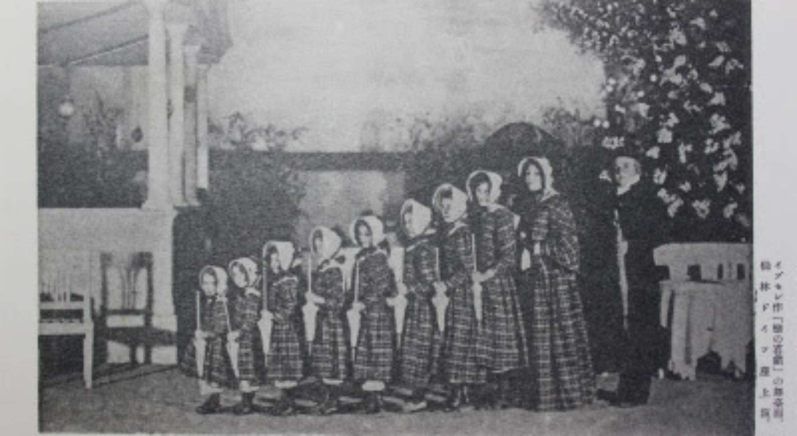
[A scene from Kjærlighedens Komedie ( Komödie der Liebe , satiric verse comedy, 1862), written by the Norwegian Playwright Henrik Ibsen (1828 - 1906), and performed at the Deutsches Theater, Berlin, around 1910]
[A poster for Kjærlighedens Komedie ( Komödie der Liebe ) written by Henrik Ibsen, and performed at Secessionsbühne, Berlin, in 1900, starring Edmund Edel]
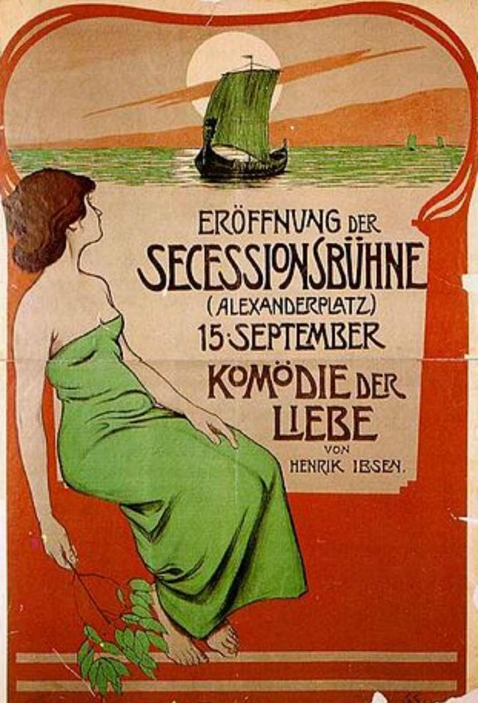
ブランド ( Brand, in five acts, 1866) イプセ ン (Henrik Ibsen 1828 - 1906) 著、茅野蕭々 (Shosho Chino 1883 - 1946) 訳
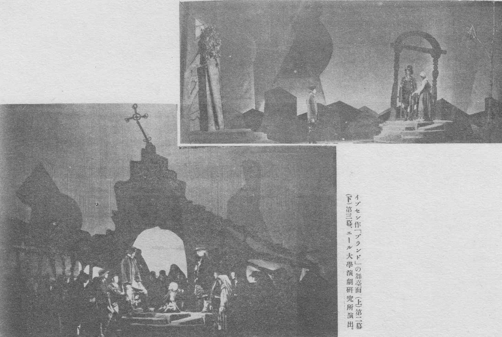
[The second (right) and third acts of Brand (1866, translated into English by William Archer) written by Henrik Ibsen and staged by the Yale University Dramatic Association (established in 1900), around 1920]
人形の家 ( Et Dukkehjem/ A Doll's House, in three acts, 1879) イプセ ン (Henrik Ibsen 1828 - 1906) 著、秦豊吉 (1892 - 1956) 訳
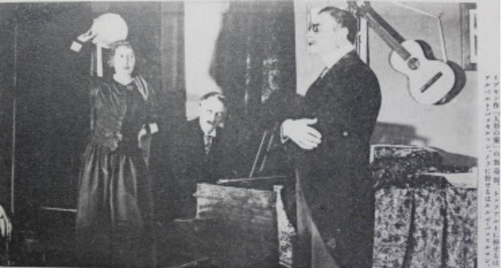
[A scene from Ein Puppenheim ( A Doll's House 1879) written by Henrik Ibsen, starring Albert Bassermann (German actor, 1867 - 1952) and Elsa Bassermann (German actress, 1908 - 1952) as Nora]
[The following two scenes are from Et Dukkehjem (1879) written by Henrik Ibsen, and produced at the Komissarjevsky Theatre in Saint Petersburg, under the direction of Vsevolod Emilevich Meyerhold (Russian theatre director, 1874 - 1940) in 1904, featuring Vera Komissarzhevskaya (Russian actress, 1864 - 1910) as Nora.]
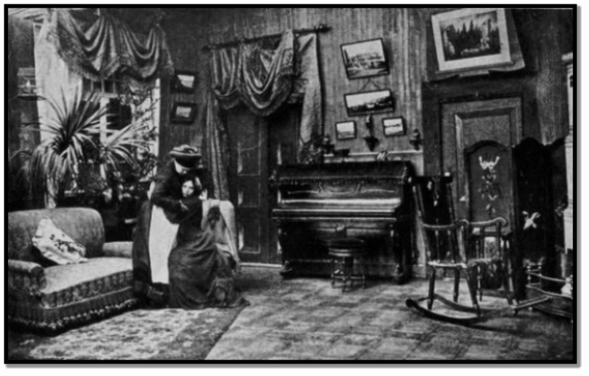
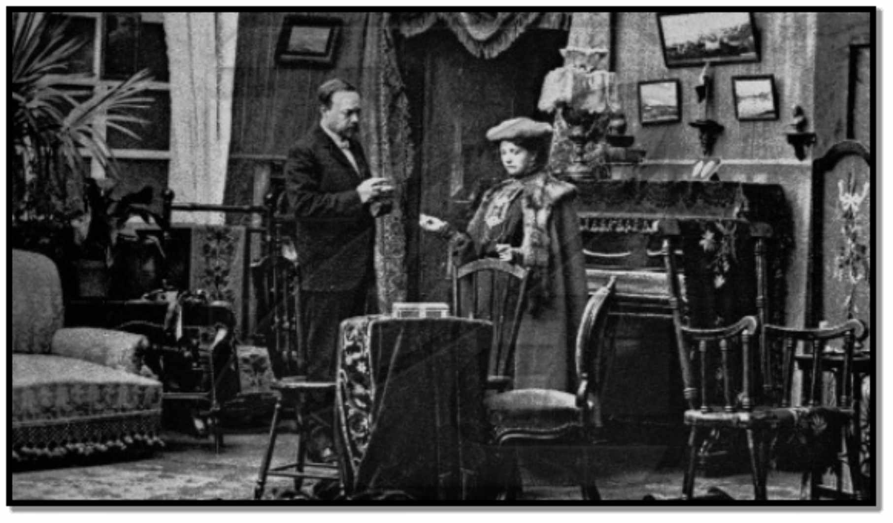
鴨 ( Vildanden/ The Wild Duck , in five acts, 1884) イプセ ン (Henrik Ibsen 1828 - 1906) 著、森田草平 (Sohei Morita 1881 - 1949) 訳
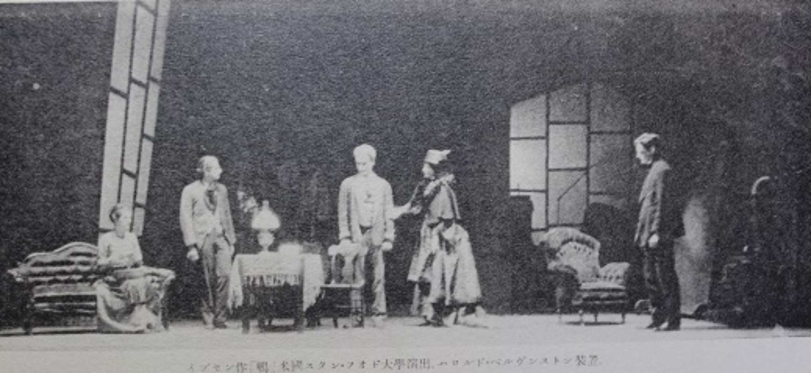
[A scene from The Wild Duck ( Vildanden 1884) written by Henrik Ibsen, and produced by Stanford University, USA, with the stage designed by Harold Helvenston (American scenic painter 1902 - 1966) around 1925]
第2 巻 北欧篇 (Scandinavian) 1930
ペェア・ギュント ( Peer Gynt, in five acts, 1867) イプセ ン (Henrik Ibsen 1828 - 1906) 著、茅野蕭々 (Shosho Chino 1883 - 1946) 訳
[A scene from the second act of Peer Gynt (1867) written by Henrik Ibsen (1828 - 1906), staged by Remigius Geyling (1878 - 1974) at Burgtheater, Vienna, in 1925]
[A stage scene sketch drawn by Ludwig Seefeld? of the fifth act of H. Ibsen's Peer Gynt ]
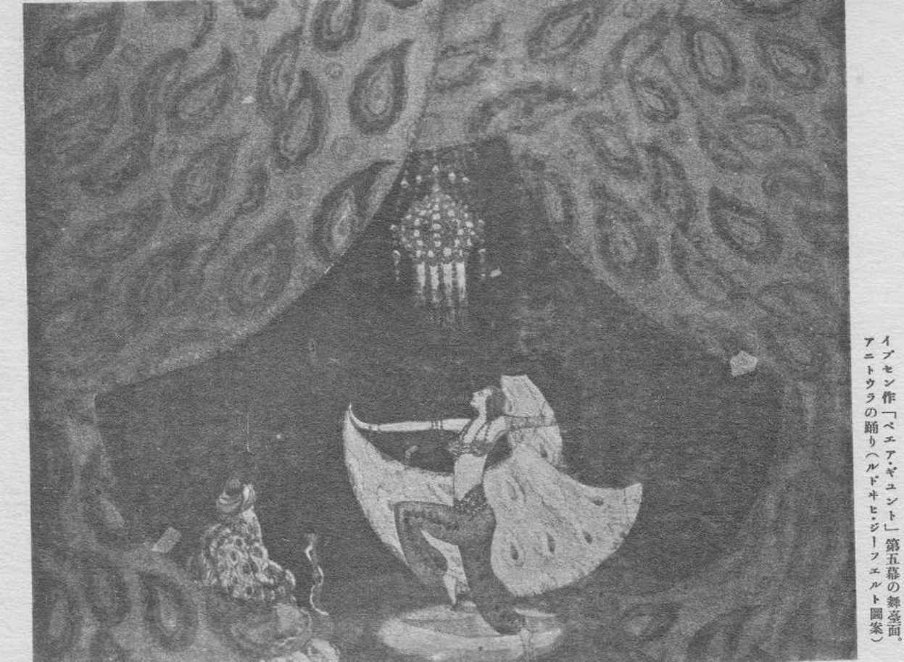
ロスメルスホルム ( Rosmersholm , in four acts, 1886) イプセ ン (Henrik Ibsen 1828 - 1906) 著、三井光弥 (Koya Mitsui 1890 - 1952) 訳
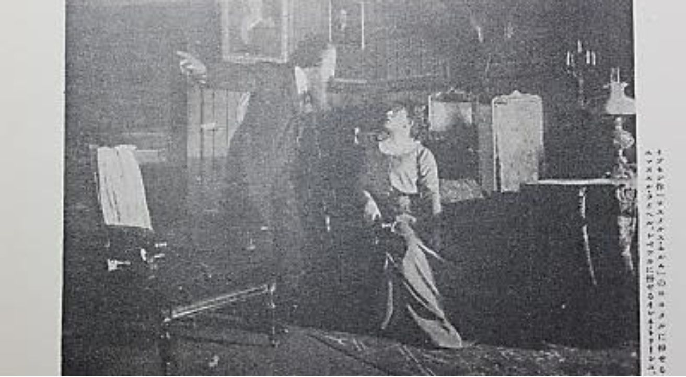
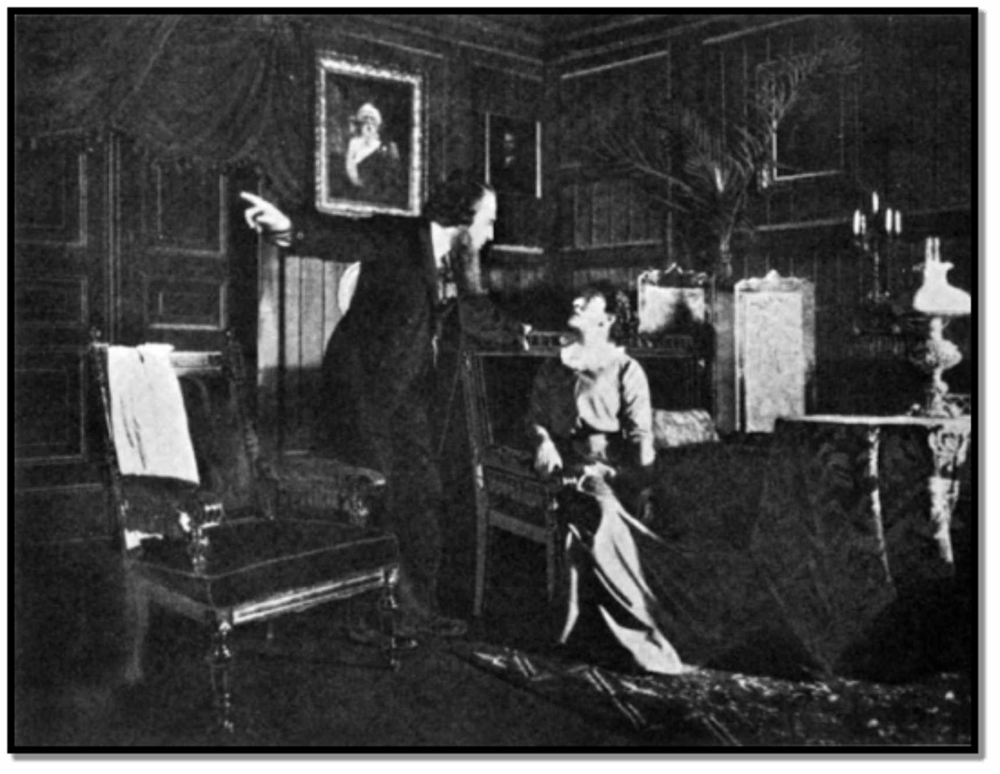
[A scene from Rosmersholm (1886) written by Henrik Ibsen, and produced at the Lessing Theater, Berlin, in 1906, featuring Irene Triesch (1875 - 1964) and Emanuel Reicher (German actor, 1849 - 1924)]
ヘッダ・ガブレル ( Hedda Gabler, in four acts, 1890) イプセ ン (Henrik Ibsen 1828 - 1906) 著、三井光弥 (Koya Mitsui 1890 - 1952) 訳
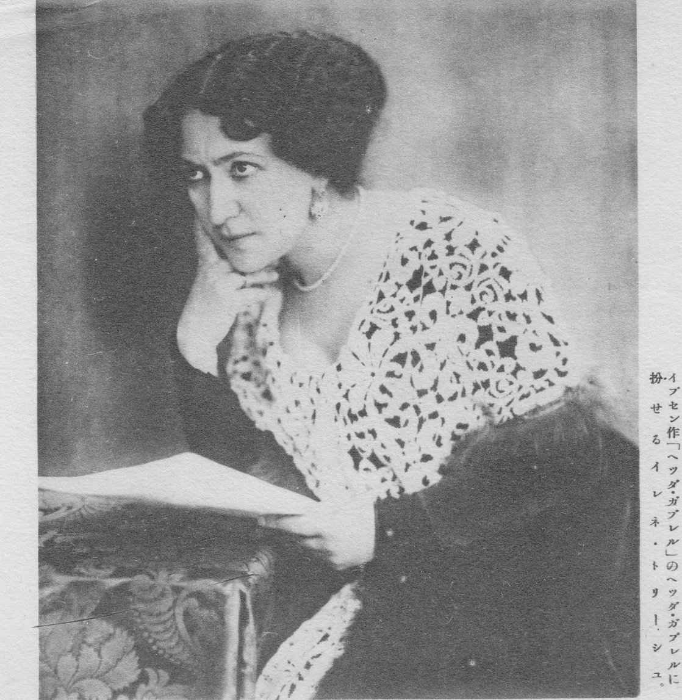
[A photo of Irene Triesch (Austrian actress, 1875 - 1964) in the title role of Hedda Gabler written by Henrik Ibsen, taken around 1925]
第3 巻 北欧篇 (Scandinavian) 1928
父 ( Fadren/ The Father , in three acts, 1887) ストリンドベリイ (August Strindberg 1849 - 1912) 著、小宮豊隆 (Horyu Komiya 1884 - 1966) 訳

[A scene from The Father produced at the Betty Nansen Teatret in Copenhagen in 1918, featuring Peter Fjelstrup as The Captain and Thilda Fønss as Bertha]
ダマスクスへ ( Till Damaskus/ To Damascus 1898) ストリンドベリイ (August Strindberg 1849 - 1912) 著、茅野蕭々 (Shosho Chino 1883 - 1946) 訳
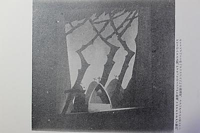
[A stage design by Ludwig Seefeld? for Till Damaskus ( Nach Damaskus , the first two parts published in 1898 with the third in 1904) written by the Swedish playwright August Strindberg (1849 - 1912), produced by Martin Kelb? at the Schauspielhaus, Frankfurt]
[The following two scenes are from Till Damaskus ( Nach Damaskus 1898) written by August Strindberg, directed by Friedrich Kayßler (1874 - 1945) and stage-designed by Karl Jakob Hirsch (1892 - 1952), played by Ernst Stahl-Nachbaur (1886 - 1960), Helene Fehdmer (1872 - 1939), and Friedrich Kayßlerin, at the theater of Volksbühne, Berlin, in November 1920.]
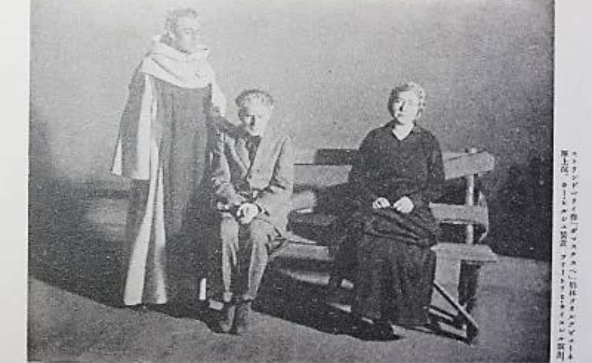
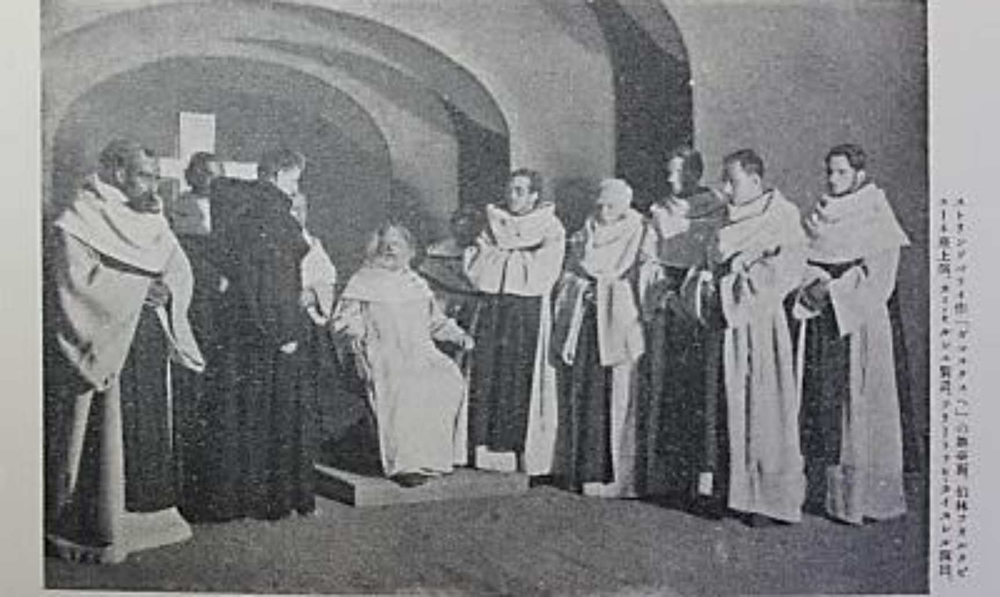
稲妻 ( Oväder/ The Storm , one-act play, 1907) ストリンドベリイ (August Strindberg 1849 - 1912) 著、小宮豊隆 (Horyu Komiya 1884 - 1966) 訳
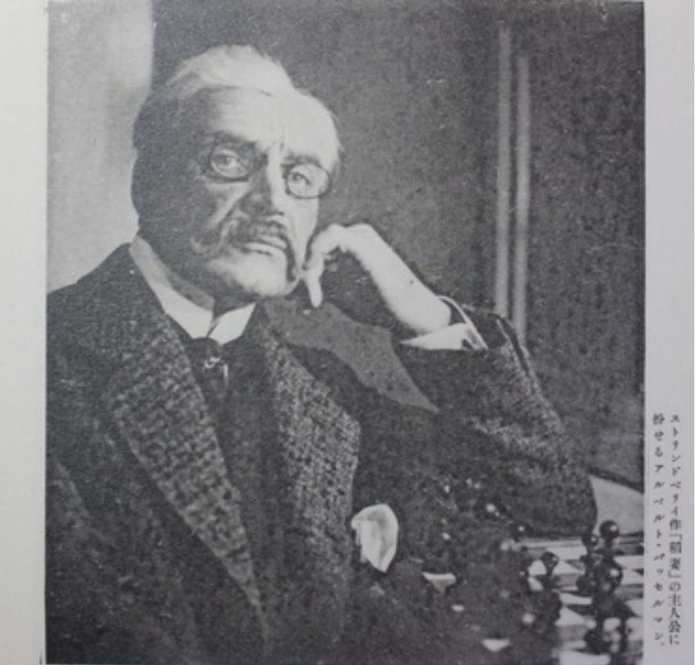
[A scene from Oväder ( Wetterleuchten 1907) written by August Strindberg, and performed at the Berliner Kammerspiele in 1913 - 14, featuring Albert Bassermann (one of the greatest German-speaking actors of his generation, 1867 - 1952)]
第4 巻 北欧篇 (Scandinavian) 1929
令嬢イュリエ ( Fröken Julie/ Miss Julie 1888) ストリンドベリイ (August Strindberg 1849 - 1912) 著、茅野蕭々 (Shosho Chino 1883 - 1946) 訳
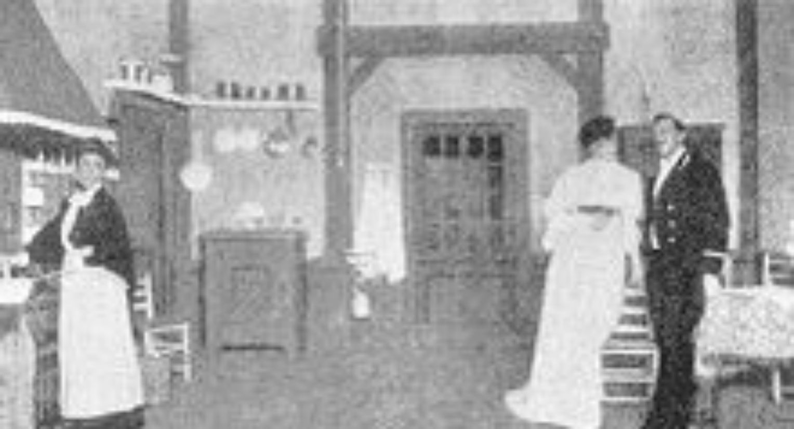
[A scene from Miss Julie first produced in November 1906 at the People's Theatre, Stockholm with the cast of Sacha Sjöström (left) as Kristin, Manda Björling as Miss Julie and August Falck as Jean]
死の舞踏 ( Dödsdansen/ The Dance of Death , in four acts, 1901) ストリンドベリイ (August Strindberg 1849 - 1912) 著、山本有三 (Yuhzoh Yamamoto 1887 - 1974) 訳
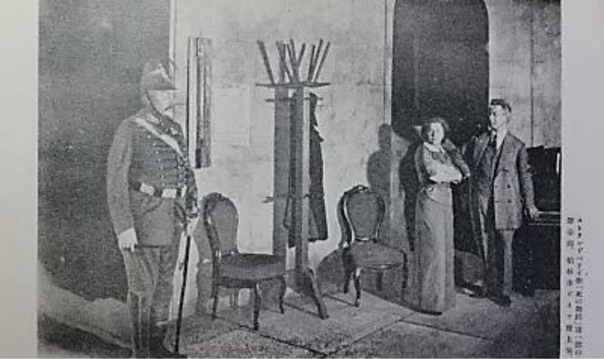
[A scene from Dödsdansen (1901), written by August Strindberg, and staged by Max Reinhardt (Austrian theatre director, 1873 - 1943) at the Deutsches Theater, Berlin, in 1912]
破産 ( En fallit / The Bankrupt 1874) ビエルンソン (Bjørnstjerne Bjørnson 1832 - 1910) 著、岩田豊吉 (1892 - 1956) 訳
人生の戯れ ( Livets Spil/ The Game of Life 1896) ハムスン (Knut Hamsun 1859 - 1952) 著、岩田豊吉 (1892 - 1956) 訳
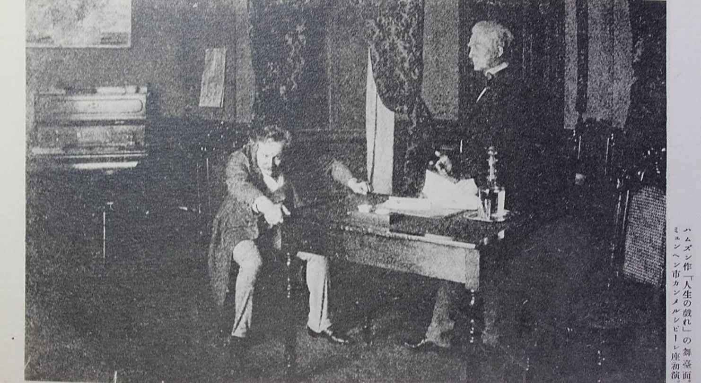
[A scene from Das Spiel des Lebens ( Livets Spil 1896) written by the Norwegian novelist Knut Hamsun (1859 - 1952), and produced by Otto Reigbert (German stage set designer 1890 - 1957) at the Kammelspiele, Munich, in 1922]
第5 巻 独逸篇 (German) 1930
沈鐘 ( Die Versunkene Glocke/ The Sunken Bell, in five acts, 1897) ハウプトマ ン (Gerhart Hauptmann 1862 - 1946) 著、新関良三 (Ryohzoh Shinzeki 1889 - 1979) 訳
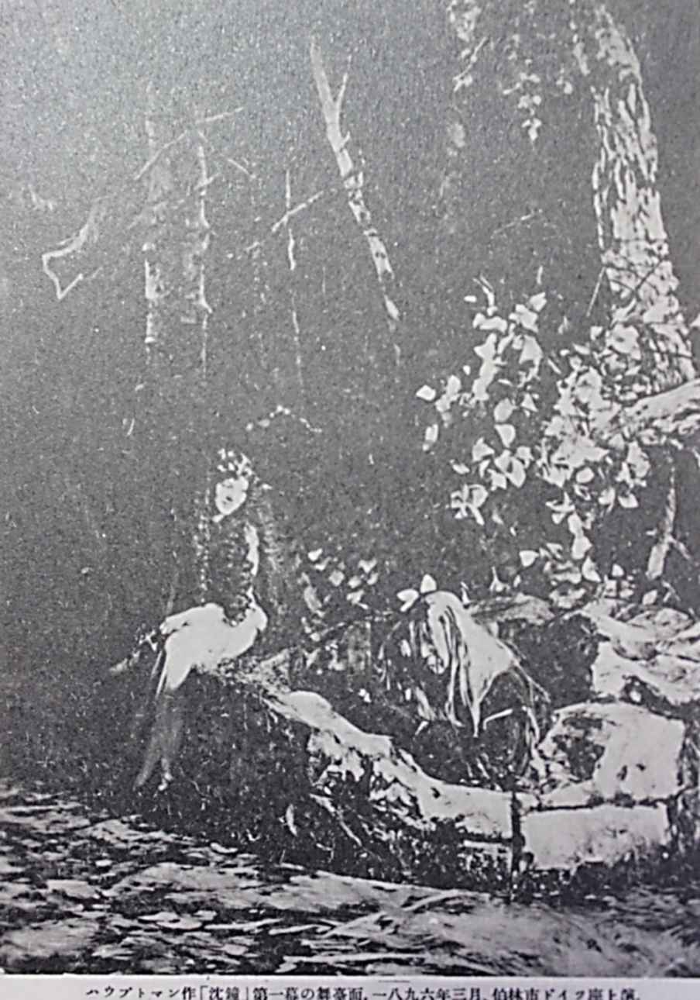
[A scene of the frist act from Die Versunkene Glocke (1897) written by Gerhart Hauptmann (1862 - 1946) and produced at the Deutusches Theater, Berlin, in March 1896]
[The following stage design by Frederick Macaunel? for the third act of Die Versunkene Glocke written by Gerhart Hauptmann and produced at the Cleveland Play House (founded in 1915)?]
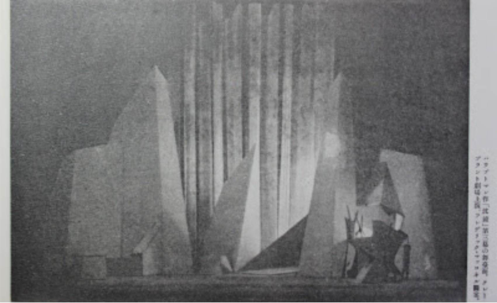
祝典劇 ( Festspiel in Deutschen Reimen/ Festival Performance in German Rhymes c1917) ハウプトマ ン (Gerhart Hauptmann 1862 - 1946) 著、新関良三 (Ryohzoh Shinzeki 1889 - 1979) 訳（対ナポレオン解放戦 争 10 0 周年の記念公演としてブレスラウ で5月 3 1 日に初演されたのが『ドイツ韻律による祝典劇』この公演は作品に対する賛否両論を呼び、当 初 1 5 回連続公演の計画 が 1 1 回目で打ち切りになった）
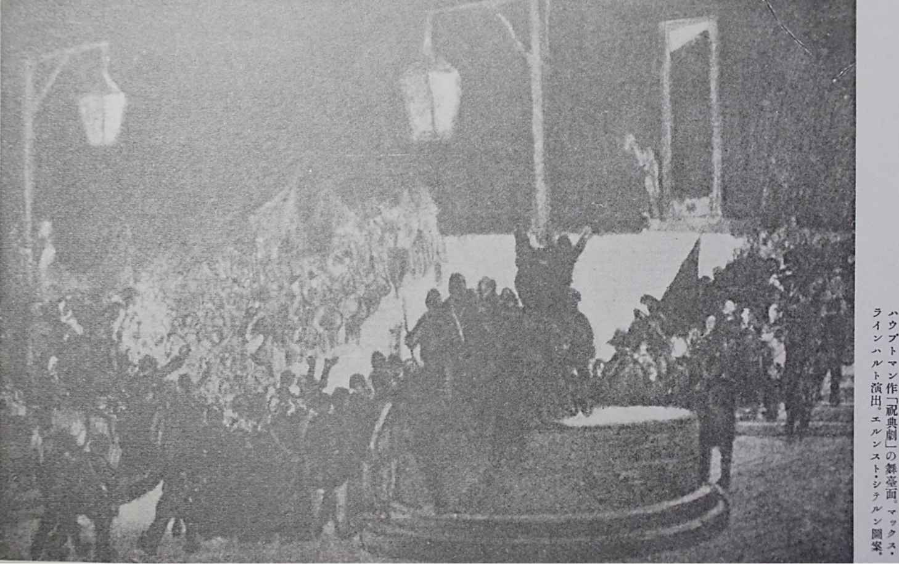
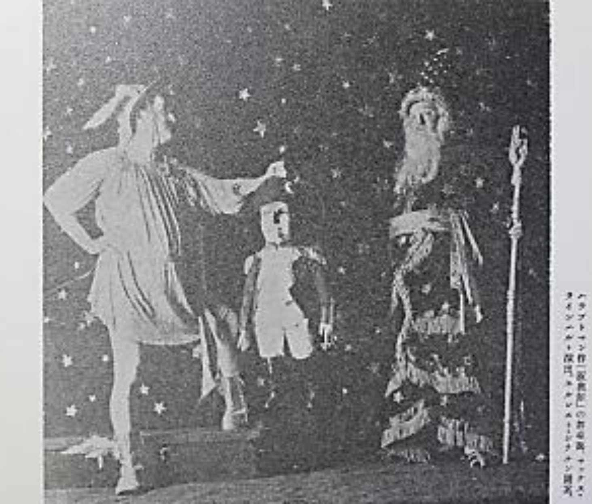
[Two scenes from Festspiel in Deutschen Reimen ( Festival Performance in German Rhymes 1913) written by Gerhart Hauptmann, and directed by Max Reinhardt (Austria-born 1873 - 1943) with the stage designed by Ernst Sitern (German scenic designer 1876 - 1954) in Breslau, in June 1913]
映画フアウストのタイトル ( Faust ) ハウプトマン (Gerhart Hauptmann 1862 - 1946) 著、秦豊吉 (1892 - 1956) 訳（戯曲ではなく、映画「ファウスト」の字幕の翻訳）
平和祭り ( Das Friedensfest/ The Reconciliation, in three acts, 1890) ハウプトマン (Gerhart Hauptmann 1862 - 1946) 著、新関良三 (Ryohzoh Shinzeki 1889 - 1979) 訳
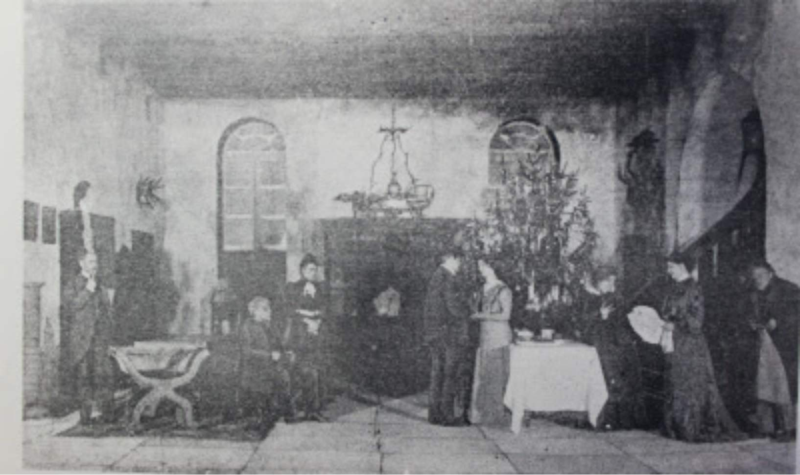
[A scene from Das Friedensfest ( The Reconciliation 1890) written by Gerhart Hauptmann and opened on June 1, 1890, with this photo taken during the time of Freie Bühne (Free Stage) at the Ostendteater, Berlin]
第6 巻 独逸篇 (German) 1928
ダントンの死 ( Dantons Tod/ Danton's Death, in three acts, 1835 ) ビュヒネ ル ( Georg Karl Büchner 1813 - 1837) 著、新関良三 (Ryohzoh Shinzeki 1889 - 1979) 訳
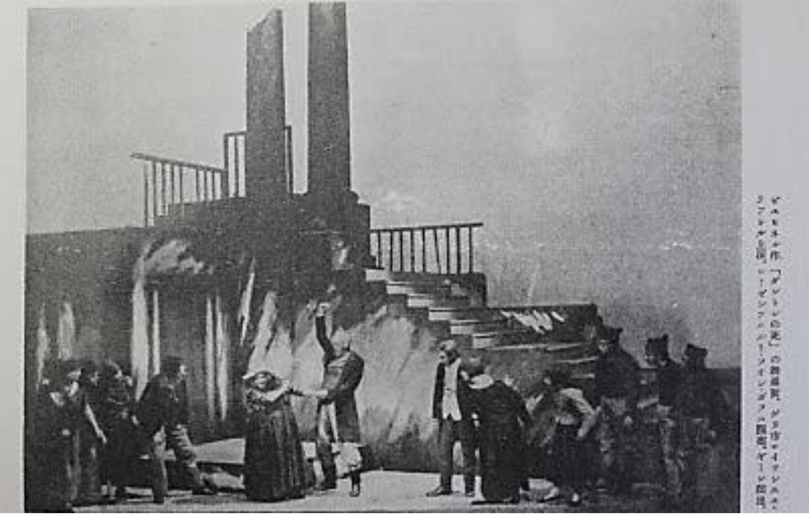
[A scene from Dantons Tod (1835) written by Georg Karl Büchner (1813 - 1837), and performed with the stage designed by Rosenvelt von Gallas? at the Reußes Theater (built in 1902) in Gera, Germany, around 1910. This play was first produced at the Belle-Alliance Theater, Berlin, on January 5, 1902.]
名誉 ( Die Ehre/ Honour, in four acts, 1889) ズーデルマン (Hermann Sudermann 1857 - 1928) 著、木村謹治 (Kinji Kimura 1889 - 1948) 訳
青春 ( Jugend/ Youth 1893) ハルベ (Max Halbe 1865 - 1944) 著、木村謹治 (Kinji Kimura 1889 - 1948) 訳
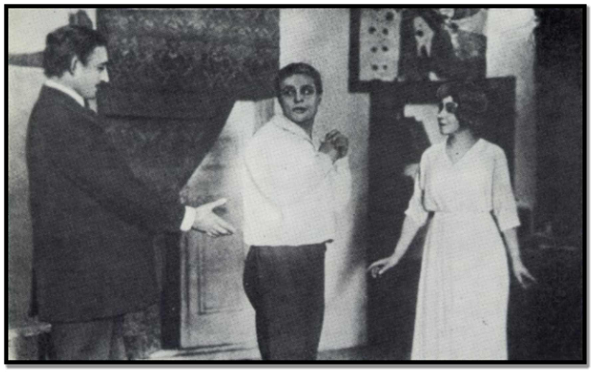
[A scene from Jugend ( Youth ) written by the German writer Max Halbe (1865 - 1944) and produced under the direction of Les Kurbas, at the Molodyi Teatr (The Young Theater), Kyiv, featuring Marko Tereshchenko, and Olimpiiia Dobrovolska in 1919]
アルト・ハイデルベルク ( Alt-Heidelberg/ Old Heidelberg 1901) マイヤーヘルステル (Wilhelm Meyer-Förster 1862 - 1934) 著、木村謹治 (Kinji Kimura 1889 - 1948) 訳
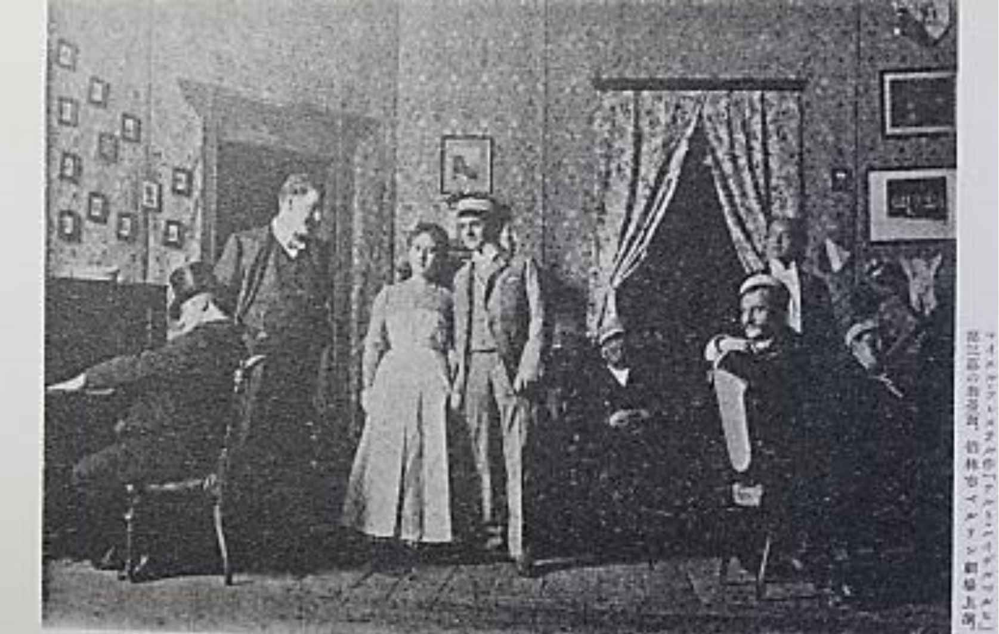
[Two scenes of the third (above) and fifth acts from Alt-Heidelberg written by Wilhelm Meyer-Förster (1862 - 1934) and produced at the Berliner Theater on November 22, 1901]
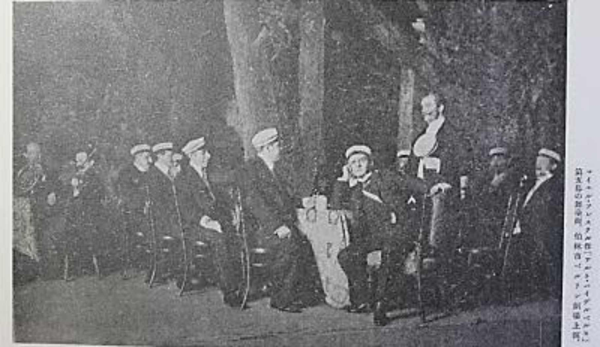
第7 巻 独逸篇 (German) 1929
影との競争 ( Der Wettlauf mit dem Schatten/ The Race with the Shadow, in three acts, 1921) ショル ツ (Wilhelm von Scholz 1874 - 1969) 著、成瀬清 (Kiyoshi Naruse 1885 - 1958) 訳（著者の父はプロシヤの大蔵大臣、訳者の筆名は成瀬無極）
奇蹟 ( Das Mirakel/ The Miracle, in two acts and interlude, 1911) フォルミュレ ル (Karl Vollmöller 1878 - 1948) 著、高橋健二 (Kenji Takahashi 1902 - 1998) 訳 （ 1 4 世紀の伝説を脚色）
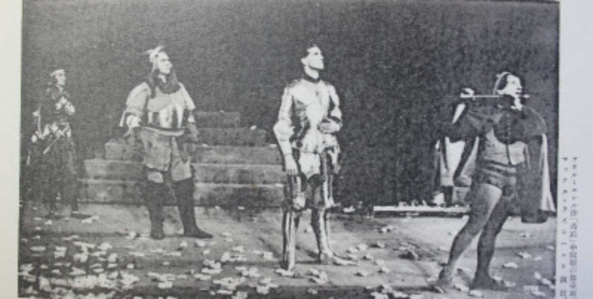
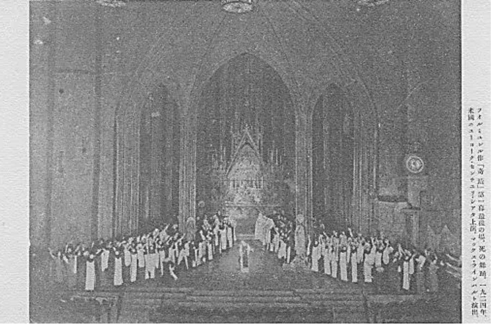
[Two scenes from The Miracle ( Das Mirakel 1911) written by Karl Vollmöller (1878 - 1948) and produced by Morris Gest, under the direction of Max Reinhardt (a leading pioneer in the German Expressionist movement, 1873 - 1943), at the Century Theatre, New York City, starring Rosamond Pinchot as the Nun and Lady Diana Cooper and Maria Carmi alternating nightly in the role of the Madonna, having run for 175 performances from Jan. 16, 1924 to June 1924. Norman Bel Geddes (American theatrical designer 1893 - 1958) designed the costumes for The Miracle , who also designed the scenery, which replicated a Cathedral and featured burning incense.]
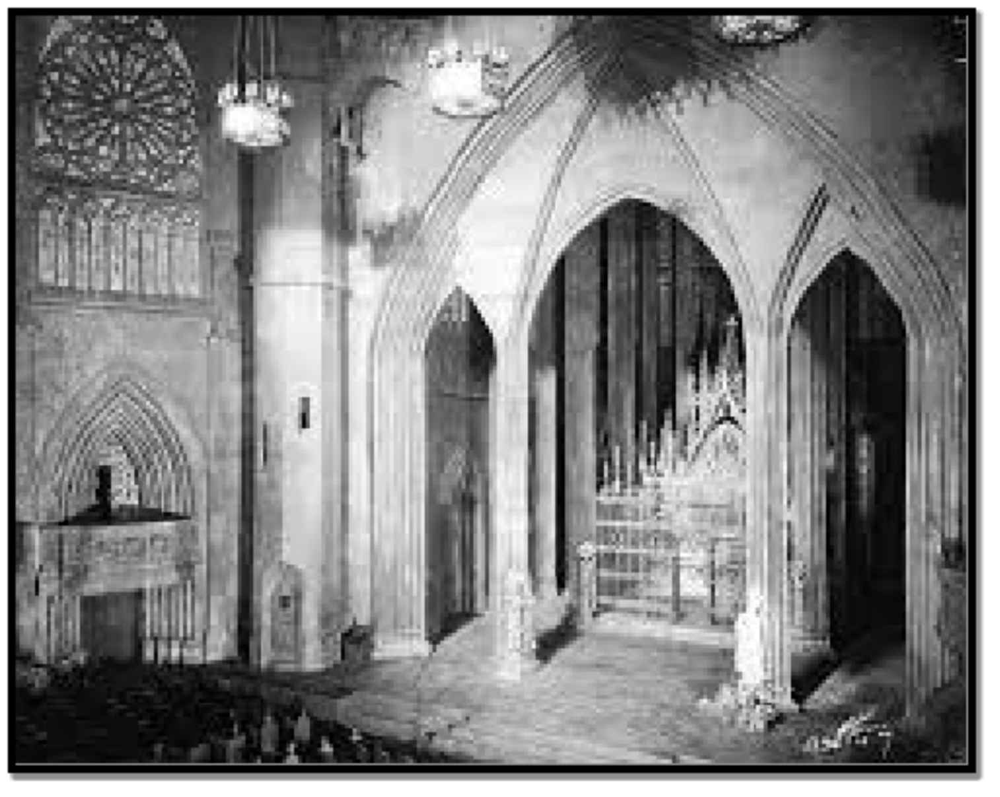
グラィヒェン伯爵 ( Der Graf von Gleichen , in three acts, 1908) シュミットボ ン (Wilhelm Schmidtbonn 1876 - 1952) 著、茅野蕭々 (Shosho Chino 1883 - 1946) 訳
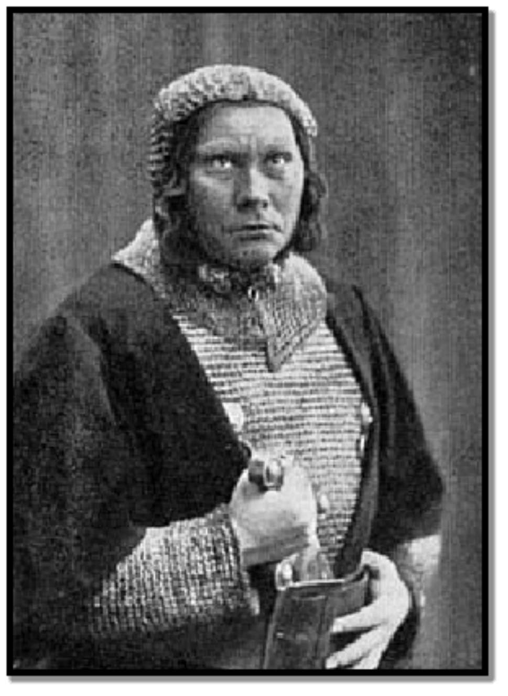
[A photo of Paul Wegener (German actor, 1874 - 1948) as the tile role in Graf von Gleichen written by Wilhelm Schmidtbonn (1876 - 1952) Theater Paul Wegener, probably staged at the Berliner Kammerspiele Theater in 1909]
ピグマアリオン ( Pygmalion, one-act play, 1911) シュミットボン (Wilhelm Schmidtbonn 1876 - 1952) 著、茅野蕭々 (Shosho Chino 1883 - 1946) 訳
一等室 ( Erster Klasse/ The First Class, one-act play, 1910) トオマ (Ludwig Thoma 1867 - 1921) 著、秦豊吉 (1892 - 1956) 訳
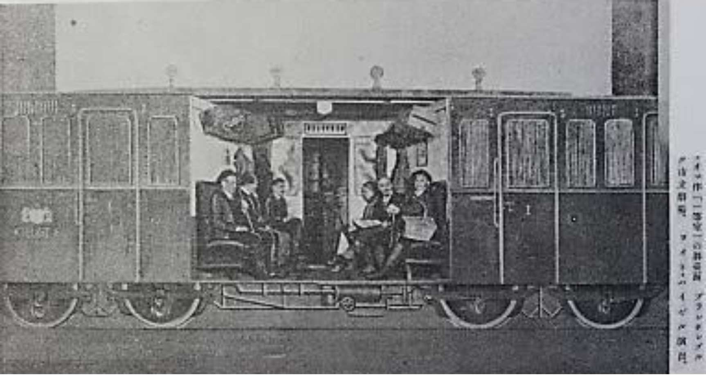
[A scene from Erster Klasse (1910) written by Ludwig Thoma (1867 - 1921) and directed by Loyd Heizer? at the Brandenburg Theater around 1915]
トルストイ ( Tolstoy , in three acts) エエム・ヱルク (M. Elch or Elk?) 著、秦豊吉 (1892 - 1956) 訳
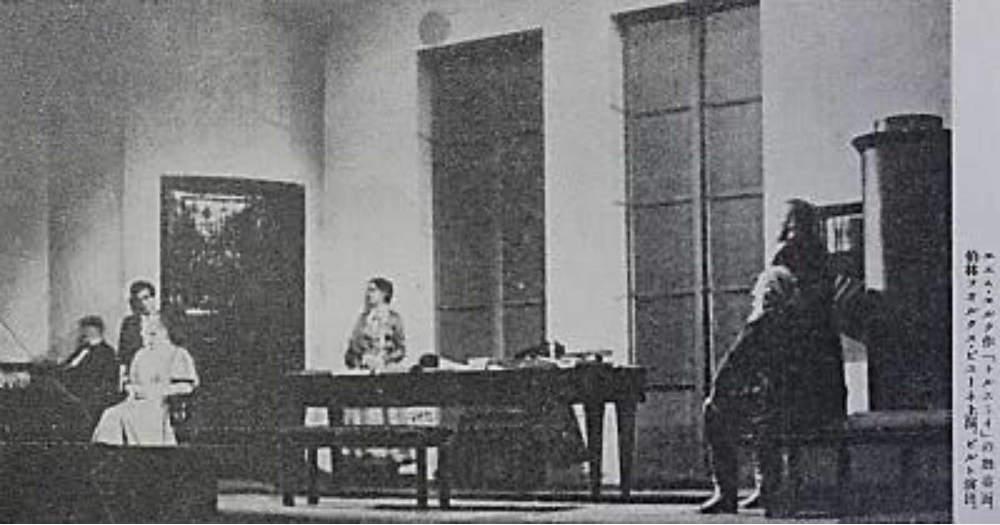
[A scene from Tolstoy produced at the Volksbühne in Berlin around 1925 ] （「十字架より降ろさるる基督」と題し 第1 部「トルストイ」 第2 部「レエニン」を取り上げる、作者は訳者にも不詳）
第8 巻 独逸篇 (German) 1929
カザノオフア物語 ( Casanova 1902) ステルンハイム (Carl Sternheim 1878 - 1942) 著、秦豊吉 (1892 - 1956) 訳
A scene from 1913 (『 191 3 年 』 ) written by the German playwright Carl Sternheim (1878 - 1942) and produced at the Kammerspiele in Berlin. In 1915 this play premiered under the direction of Max Reinhardt (1873 - 1943) at the Kammerspielen of the Deutschen Theater, but was not released by the Berlin authorities of censorship.
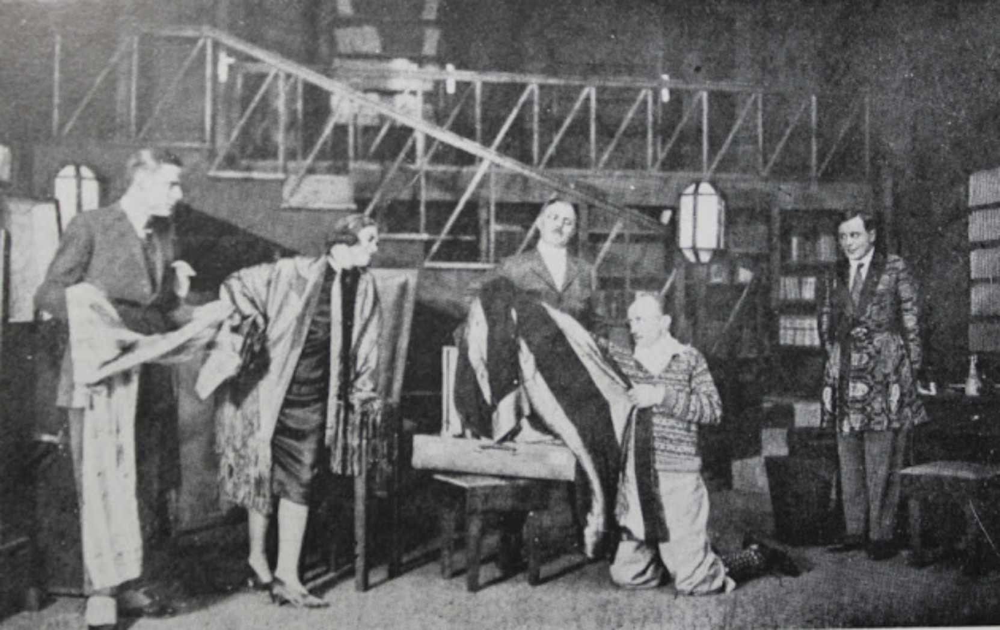
The following scene is from Bürger Schippel ( シュテルンハイム『ショッペル市民 』 Citizen Schippel , 1913) written by Carl Sternheim and produced under the direction of Max Reinhardt at the Kammerspielen des Deutschen Theaters, Berlin, on March 5, 1913. This play has remained popular in Germany, but along with Sternheim's other works, it is rarely performed in the English language.
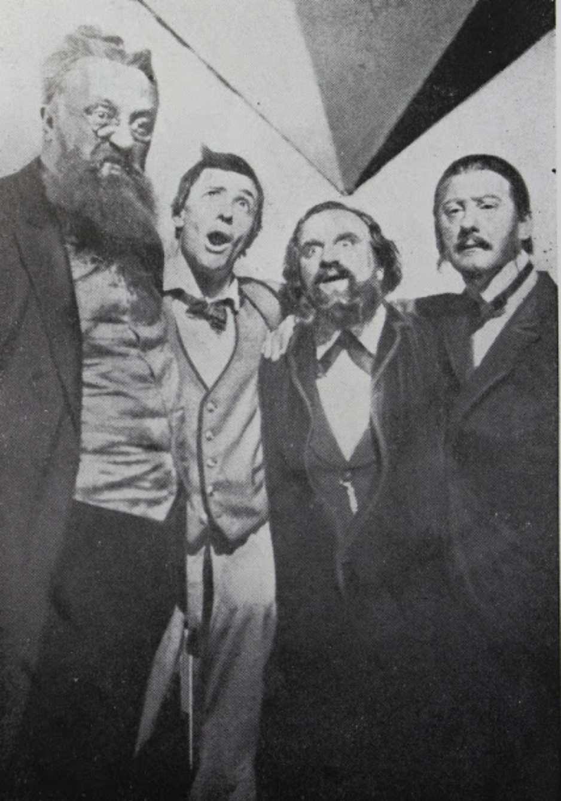
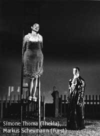
A photo of the German playwright Carl Sternheim, surrounded by actors, taken in Berlin around 1920
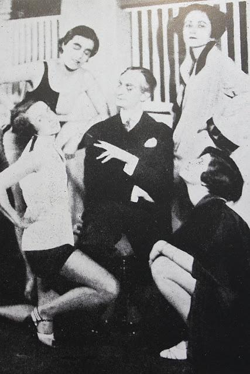
ルシタニア号 ( Lusitania , one act and three scenes) アルフレッド・デョブリン著、秦豊吉 (1892 - 1956) 訳
除夜の悲劇 ( 映画脚本 Sylvester: Tragödie einer Nacht / New Year's Eve 1924) マイエル (Carl Mayer 1894 - 1944) 著、秦豊吉 (1892 - 1956) 訳
チャップリン物語 ( 映画 詩 Die Chapliniade 1920) イワン・ゴル (Yvan Goll 1891 - 1950) 著、秦豊吉 (1892 - 1956) 訳
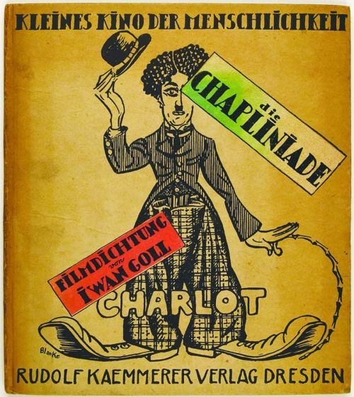
[ Die Chapliniade , written by Iwan Goll, with the book design by Fernand LÉGER, and published by Rudolf Kaemmerer, Dresden, in 1920]
蚤 ( 『蚤または苦痛の舞踏 』 Die Flöhe oder der Schmerzenstanz/ The Fleas, or The Dance of Pain 1892) ヱエデキンド (Frank Wedekind 1864 - 1918) 著、秦豊吉 (1892 - 1956) 訳
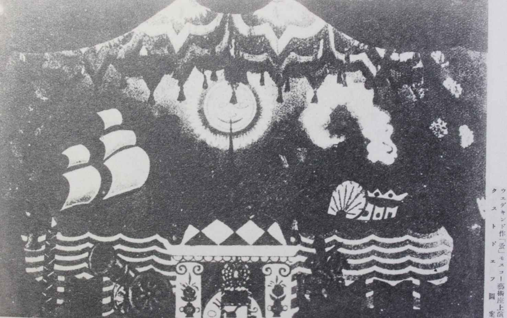
[Stage design by Boris Mikhaylovich Kustodiev (Russian painter and stage designer, 1878 - 1927) for Die Flöhe oder der Schmerzenstanz written by Frank Wedekind and produced by the Moscow Art Theatre]
春の目覚め ( Frühlings Erwachen/ Spring Awakening, in three acts, 1891) ヱエデキンド (Frank Wedekind 1864 - 1918) 著、秦豊吉 (1892 - 1956) 訳
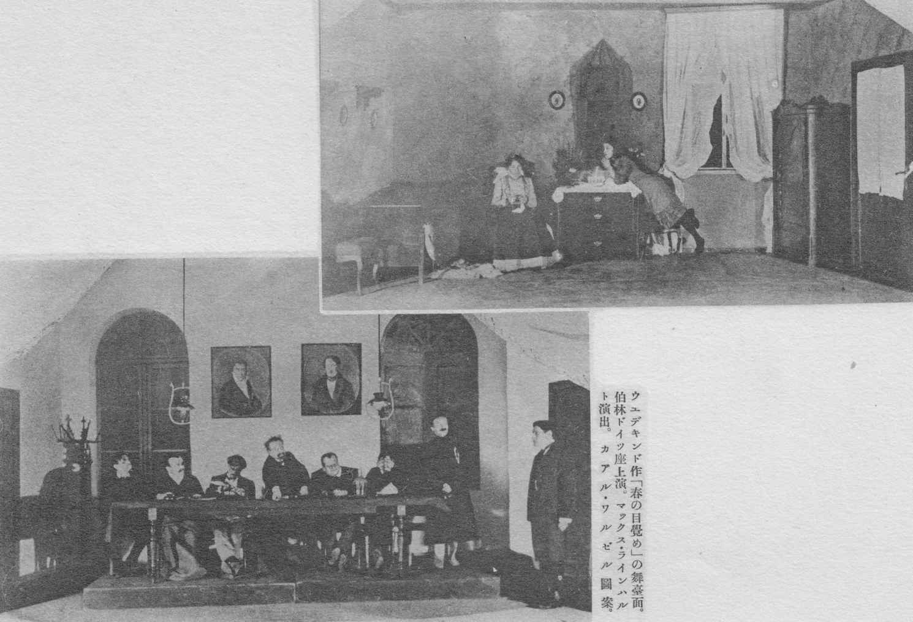
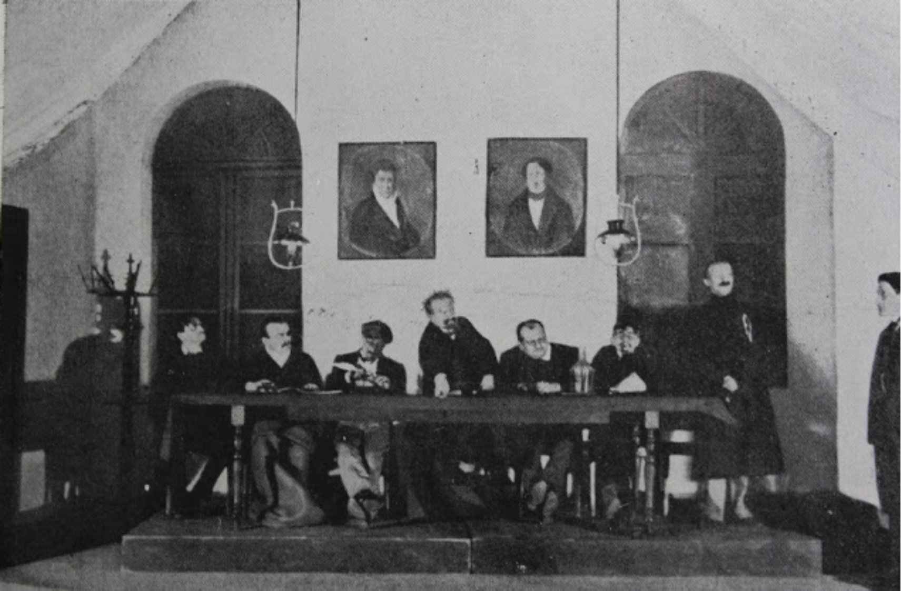
[Some scenes from Frühlings Erwachen (1891) written by Frank Wedekind and first produced at the Kammerspielen, Berlin, under the direction of Max Reinhardt (1873 - 1943) with the stage designed by Karl Walser (Swiss artist, 1877 - 1943) on November 20, 1906]
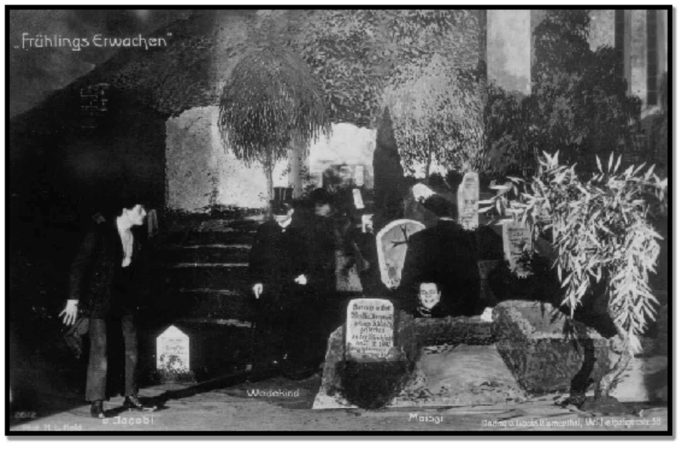
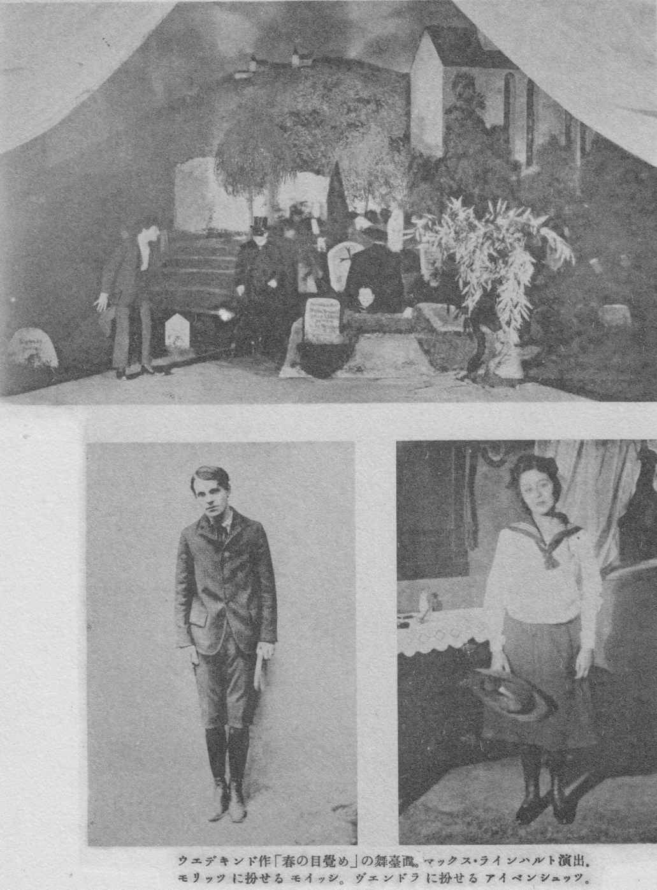
[Alexander Moisiu as Moritz Stiefel and Camilla Eibenschütz (German stage actress 1884 - 1958) as Wendla Bergmann in Frühlings Erwachen (1906)]
せむしの巨人 ( Karl Hetmann, der Zwergriese / The Life of Christ in Karl Hetmann , in five acts, 1904) ヱエデキンド (Frank Wedekind 1864 - 1918) 著、秦豊吉 (1892 - 1956) 訳
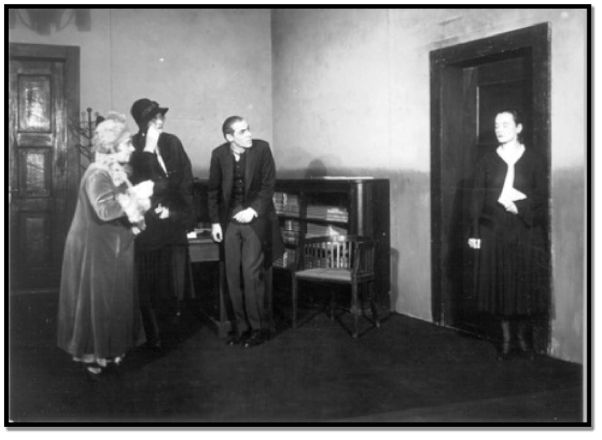
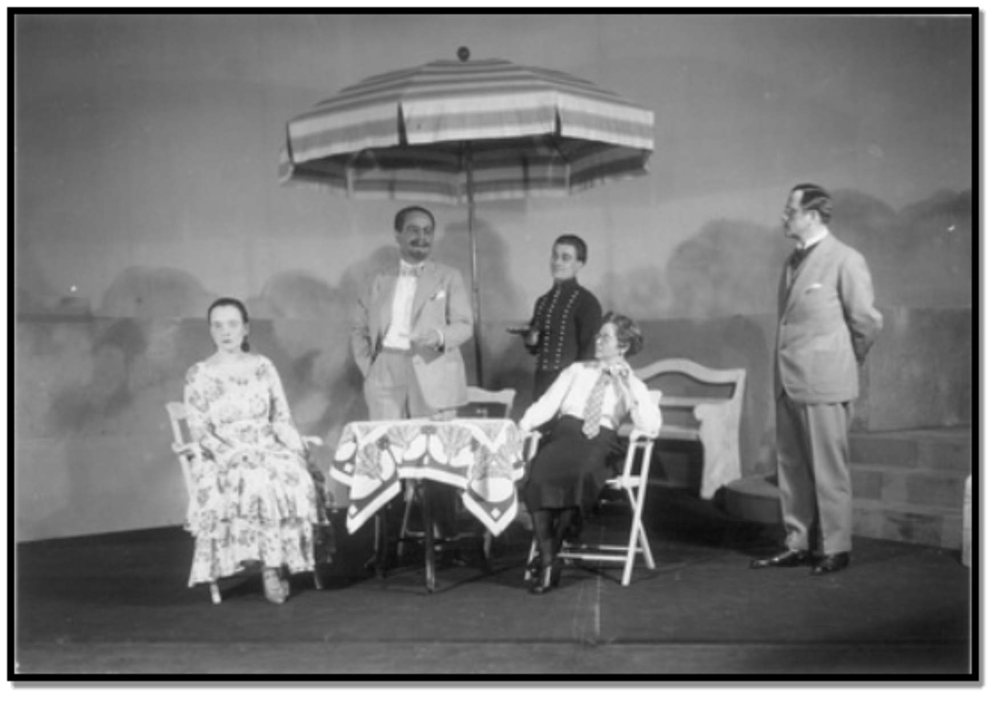
[Two scenes from Karl Hetmann, der Zwergriese written by Frank Wedekind and produced at the Staatsschauspiel Dresden, on April 24, 1930]
第9 巻 独逸篇 (German) 1927
人間 ( Die Menschen/Humanity, in five acts, 1918) ハァゼンクレエフェル (Walter Hasenclever 1890 - 1940) 著、小山内薫 (Kaoru Osanai 1881 - 1928) 訳（従来の様式を破壊）
決定 ( Die Entscheidung, one-act play, 1919) ハァゼンクレエフェル (Walter Hasenclever 1890 - 1940) 著、秦豊吉 (1892 - 1956) 訳
サンクタ・ズザンナ ( Sancta Susanna, one-act play, 1912) シュトラン ム (August Stramm 1874 - 1915 ) 著、茅野蕭々 (Shosho Chino 1883 - 1946) 訳
群 衆= 人間 ( Masse Mensch/ Masses Man , in seven scenes, 1919) トッレル (Ernst Toller 1893 - 1939) 著、秦豊吉 (1892 - 1956) 訳
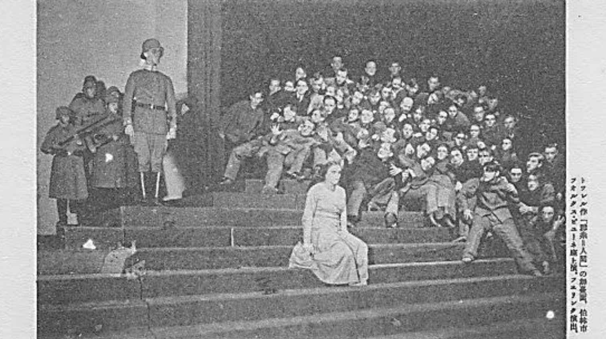
[A scene from Masse Mensch ( Masses Man, witten in 1919 and published in 1921), written by the German left-wing playwright Ernst Toller (1893 - 1939), and produced under the direction of Jürgen Fehling (1885 - 1968) at the theater of Volksbühne, Berlin, on September 29, 1921]
[The following scene is from Masse Mensch written by Ernst Toller (1893 - 1939) and premiered at the Stadttheater (Municipal Theater) Nürnberg, on November 15, 1920.]
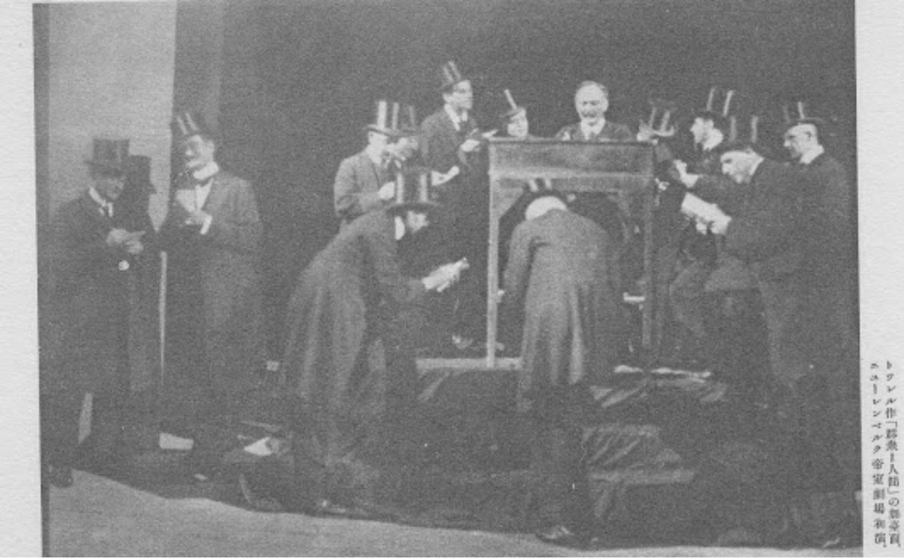
カレーの市民 ( Die Bürger von Calais/ The Citizens of Calais, in three acts, 1914) カイゼル (Georg Kaiser 1878 - 1945) 著、新関良三 (Ryohzoh Shinzeki 1889 - 1979) 訳（著者は表現主義劇作家のなかでも著しく注目を引く）
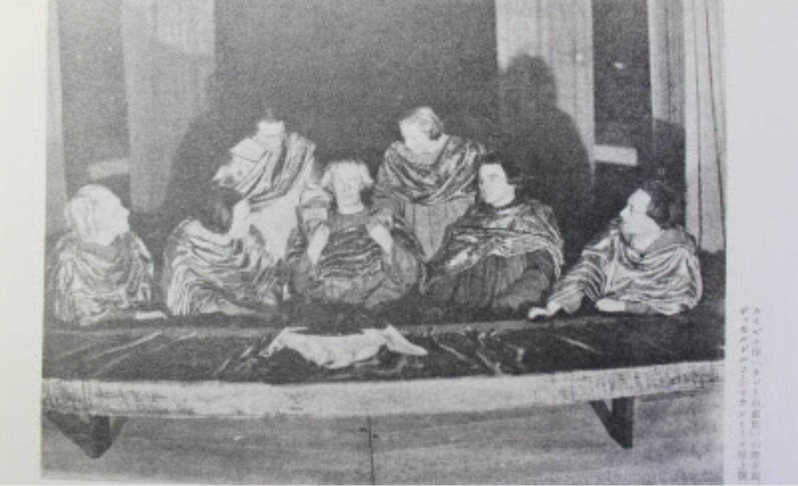
[A scene from Die Bürger von Calais (1913) written by Georg Kaiser (1878 - 1945) and performed at the Schauspielhaus, Düsseldorf, in 1928]
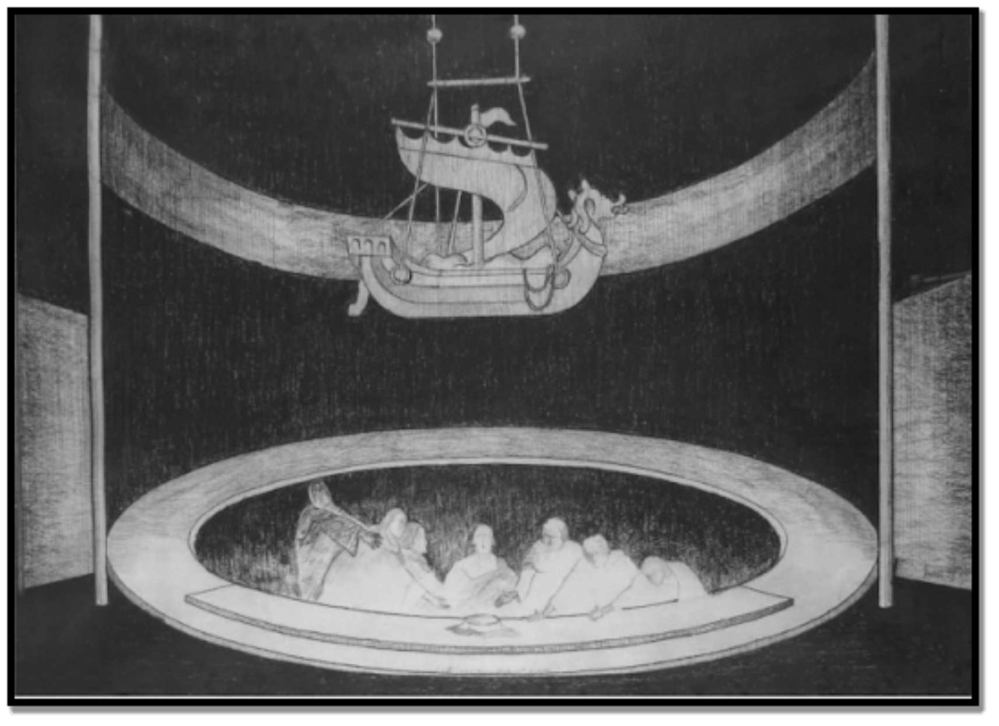
朝から夜中まで ( On morgens bis mittennachts/ From Morning to Midnight, in 2 parts, 1912) カイゼル (Georg Kaiser 1878 - 1945) 著、秦豊吉 (1892 - 1956) 訳
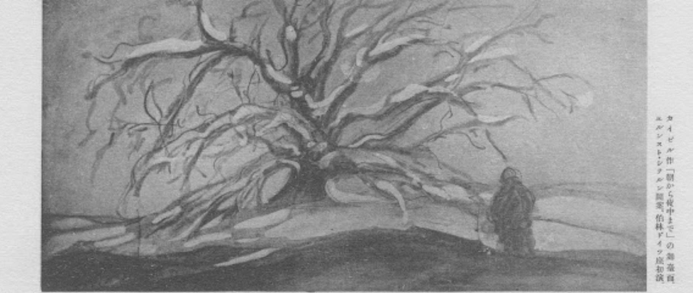
[Stage-design drawn by Ernst Stern (German scenic designer 1876 - 1954) for the first act of Von Morgens bis Mitternachts (1916) written by Georg Kaiser (1878 - 1945) and performed at the Deutsches Theater, Berlin, around 1920. This play was first produced at the Kammerspiele, Munich, on April 28, 1917.]
チャップリ ン( 悲壮怪奇 劇6幕 Chaplin 1924) メルヒオル・フィッシェル (Melchio Vischer, 1895 - 1975) 著、秦豊吉 (1892 - 1956) 訳
第 1 0 巻 独逸篇 (German) 1929
楽しみ
の
夜打つ太鼓 ( Trommeln in der Nacht/ Drums in the Night, comedy in five acts, 1919) ブレヒ ト (Bertolt Brecht 1898 - 1956) 著、成瀬無極 (Mukyoku Naruse 1885 - 1958) 訳
[Stage-design by Ludwig Seefeld? for the first act of Trommeln in der Nacht (1919) written by Bertolt Brecht (1898 - 1956) and produced at the Schauspielhaus Frankfurt, around 1925]
[The following two scenes are from Trommeln in der Nacht written by Bertolt Brecht and produced at Münchner Kammerspiele, Munich, under the direction of Otto Falckenberg (1873 - 1947) with the stage designed by Otto Reinhart, starring Erwin Faber in the role of Andreas Kragler, on September 29, 1922.]
犯罪人 ( Die Verbrecher/ The Criminals, in three acts, 1929) ブルックネル (Ferdinand Bruckner 1891 - 1958) 著、高橋健二 (Kenji Takahashi 1902 - 1998) 訳
[A scene from Die Verbrecher (1928) written by Ferdinand Bruckner (1891 - 1958) and produced under the direction of Heinz Hilpert (actor and director, 1890 - 1967) at the Deutsches Theater, Berlin, on October 23, 1928, featuring Hans Albers, Lucie Hoeflich, Mathias Wiemann, and Gustav Gruendgens. This play caused a scandal when it was premiered. It was performed six months later, for the first time outside Germany, at the Neues Stadttheater in Teplitz-Schönau, Czeck, directed by Fritz Kennemann.]
中幕 (Intermezzo , opera in two acts, 1923) シュトラウス (Richard Strauss 1864 - 1949) 著、秦豊吉 (1892 - 1956) 訳
[A scene from Intermezzo created by the German composer Richard Strauss (1864 - 1949) to his own German libretto, and first performed at the Dresden Semperoper on November 4, 1924, with sets that reproduced Strauss' home in Garmisch]
戦争 ( Der Krieg 1928) カアル・フォオグ ト (Karl Vogt) 著、秦豊吉 (1892 - 1956) 訳 （ Sprechchor 合唱劇、著者は国民舞台に所属）
第 1 1 巻 独逸篇 (German) 1927
プロシアの王子ルイ・フェルディナント ( Louis Ferdinand Prinz von Preußen/ Louis Ferdinand Prince of Prussia , in five acts, 1913) ウンルウ (Fritz von Unruh 1885 - 1970) 著、新関良三 (Ryohzoh Shinzeki 1889 - 1979) 訳
[A scene of the first act from Louis Ferdinand Prinz von Preußen (1913) written by Fritz von Unruh (1885 - 1970) and performed at the Schauspielhaus in Dresden around 1920]
[The following scene of the fourth act is from Louis Ferdinand Prinz von Preußen written by Fritz von Unruh and performed at the Schauspielhaus in Düsseldorf around 1920.]
[The following scene of the fifth act is from Louis Ferdinand Prinz von Preußen written by Fritz von Unruh and performed at the Deutsches Theater, Berlin in 1921.]
海戦 ( Die Seeschlacht/ Sea Battle , one-act play, 1917) ゲョエリンク (Reinhard Goering 1887 - 1936) 著・茅野蕭々 (Shosho Chino 1883 - 1946) 訳
[A sketch for Seeschlacht drawn by Erich Büttner (Germany, Berlin, 1889 - 1936) in 1918]
灰闌 記( 白墨の 円 ) ( Der Kreidekreis/ The Circle of Chalk , in five acts, 1924 ) クラブント (Alfred Henschke Klabund 1890 - 1928) 著、新関良三 (Ryohzoh Shinzeki 1889 - 1979) 訳
[A stage sketch for Der Kreidekreis written by Alfred Henschke Klabund (1890 - 1928) and performed under the direction of Richard Weichert (1880 - 1961) with the stage designed by Ludwich Seefeld? at the Schauspielhaus, Frankfurt, on January 1, 1925]
[A scene from the same production as above]
画家ゴツホ ( Vincent, in five acts, 1924) カザック (Hermann Kasack 1896 - 1966) 著、秦豊吉 (1892 - 1956) 訳
第 1 2 巻 独逸篇 (German) 1928
チチアンの死 ( Der Tod des Tizian/ The Death of Titian 1892) ホフマンスタアル (Hugo von Hofmansthal 1874 - 1929 ) 著、木下杢太郎 (Mokutaroh Kinoshita 1885 - 1945) 訳
人（富豪の死 ） ( Der Tor und der Tod/ Death and the Fool 1893) ホフマンスタアル (Hugo von Hofmansthal 1874 - 1929 ) 著、新関良三 (Ryohzoh Shinzeki 1889 - 1979) 訳
[A scene from Der Tor und der Tod (1893) written by Hugo von Hofmansthal (1874 - 1929) and performed under the direction of Max Reinhardt (1873 - 1943) with music by Eugen d'Albert at the Deutsches Theater, Berlin, on March 30, 1908]
緑
の
[Stage design for Der grüne Kakadu (1898) written by Arthur Schnitzler (1862 - 1931) and performed in Berlin around 1910]
[The following scene is from Der grüne Kakadu (1898) written by Arthur Schnitzler and directed by Iden Payne at the Carnegie Mellon University School of Drama in c1926]
恋愛三昧 ( Liebelei/ Flirtation 1894) シュニッツレル (Arthur Schnitzler 1862 - 1931) 著、森鴎外 (Ohgai Mori 1862 - 1922) 訳
[A scene from Liebelei ( Flirtation , opera) written by Arthur Schnitzler and first performed at the Opera House in Frankfurt am Main, in 1912. This play was first performed at the prestigious Burgtheater in Vienna in 1895.]
最後の仮面 ( Die letzten Masken/ The Last Masks 1901) シュニッツレル (Arthur Schnitzler 1862 - 1931) 著、三井光弥 (Koya Mitsui 1890 - 1952) (1890 - 1952) 訳
広き国 ( Das weite Land / The Vast Domain 1910 ) シュニッツレル (Arthur Schnitzler 1862 - 1931) 著、木村謹治 (Kinji Kimura 1889 - 1948) 訳
第 1 3 巻 独逸篇 (German) 1929
信仰と故郷 ( 土民の悲 劇 ) ( Glaube und Heimat/ Belief and Home , in three acts, 1910) シェーンヘ ル (Karl Schönherr 1867 - 1943 Austrian) 著、新関良三 (Ryohzoh Shinzeki 1889 - 1979) 訳（代表作 は Der Bildschnitzer: Eine Tragödie braver Leute ( The Woodcarver: A Tragedy of Good People 1900 ) ）
[Some scenes from Glaube und Heimat (1910) written by Karl Schönherr (1867 - 1943) and produced at the Deutsches Volkstheater, Vienna, on December 17, 1910]
愛 ( Liebe/ Love , in three parts, 1916 ) ヰルドガンス (Anton Wildgans 1881 - 1932 Austrian) 著、木下杢太郎 (Mokutaroh Kinoshita 1885 - 1945) 訳
鏡人 ( Spiegelmensch/ Mirror Man, in five acts, 1920) ウェルフェル (Viktor Werfel 1890 - 1945) 著、高橋健二 (Kenji Takahashi 1902 - 1998) 訳（自らのなかにある自己逃避者と自己追及者との鬼ごっこ）
[A scene from Spiegelmensch (1920) written by the Austrian playwright Franz Viktor Werfel (1890 - 1945) and produced at the Altes Theater, Leipzig, on October 15, 1921, starring Ewald Schindler in the title role and Lutz Altschul as Thamu, under the direction of Dr. Kronacher with the stage decorated by Alexander Baranowsky (1874 - 1941)]
死 ( Døden/ Death , one act satirical play) グスタアフ・ヰード (Gustav Wied 1858 - 1914 Danish) 著、秦豊吉 (1892 - 1956) 訳
永遠のユデヤ人 (? 'n Jodenstreek/ A Jewish region , one-act play, 1894) ハイエルマンス (Herman Heijermans 186 4‐ 1924 Jewish Dutch) 著、三井光弥 (Koya Mitsui 1890 - 1952) 訳
客 ( Goście/ Guests , in eleven scenes, 1901) スタニスラフ・プルチビセフスキー (Felix Stanislaw Przybyszewski 1868 - 1927 Polish) 著、三井光弥 (Koya Mitsui 1890 - 1952) 訳（著者には、ほかに『金羊皮 』 ( The Golden Fleece ) 『大幸福 』 ( For Happiness ) 『母』などの戯曲がある）
罪人 ( Der Zindiker/ The Sinner , one act play, 1908) ショオレム・アッシュ (Scholem Asch 1880 - 1957 Polish Jewish) 著、三井光弥 (Koya Mitsui 1890 - 1952) 訳 （ This play was staged on 28 June 1919 by Granovsky's studio in Petrograd, undere the direction of Granovsky, and on 27 March 1921 by the "Vilna Troupe", with the direction of Mendel Elki n ）
第 1 4 巻 仏蘭西篇 (French) 1929
かりそめになすな恋 ( On ne badine pas avec l'amour/ Don't Fool with Love 1834) ミュッセ (Alfred de Musset 1810 - 1857 ) 著、西条八十 (Yaso Saijoh 1892 - 1970) 訳
[Stage-designs for On ne badine pas avec l'amour ( No Trifling with Love 1834) written by Alfred de Musset (1810 - 1857) and produced at Comédie- Française, Paris, in January 1923]
マリヤンヌの気紛れ ( Les Caprices de Marianne/ The Moods of Marianne 1833) ミュッセ (Alfred de Musset 1810 - 1857) 著、堀口大学 (Daigaku Horiguchi 1892 - 1981) 訳
[Two scenes from Les Caprices de Marianne (1833) written by Alfred de Musset and performed at the Comédie-Française, Paris, in 1905, where this play was first performed in 1851]
アンドレ・デル・サルトオ ( André del Sarto 1833) ミュッセ (Alfred de Musset 1810 - 1857) 著、内藤濯 (Aroh Naitoh 1883 - 1977) 訳
戸を開けさらずば閉ぢよ ( Il faut qu'une porte soit ouverte ou fermée/ The Door Must be Kept Open or Shut 1845) ミュッセ (Alfred de Musset 1810 - 1857) 著、内藤濯 (Aroh Naitoh 1883 - 1977) 訳
巴里女 ( La Parisienne/ The Woman of Paris 1885) ベック (Henri Becque 1837 - 1899) 著、堀口大学 (Daigaku Horiguchi 1892 - 1981) 訳
[A scene from La Parisienne (1885) written by Henri Becque (1837 - 1899) and performed at the Théâtre Antoine in November 1904]
堅気な女 ( Les Hon nê tes Femmes/ Honest Women , one-act comedy 1880) ベック (Henry Becque 1837 - 1899) 著、内藤濯 (Aroh Naitoh 1883 - 1977) 訳
[A scene from Les Honnêtes Femmes (1880) written by Henri Becque (1837 - 1899) and first performed at the Théâtre du Gymnase, Paris, on January 1, 1880 and then at the Comédie-Française on October 27, 1886]
第 1 5 巻 仏蘭西篇 (French) 1928
ブランシェット ( Blanchette , in three acts, 1892) ブリユウ (Eu gè ne Briex 1858 - 1932) 著、内藤濯 (Aroh Naitoh 1883 - 1977) 訳
[Three scenes from Blanchette (1892) written by Eugène Briex (1858 - 1932) and produced at the Comédie-Française, Paris, in 1930]
新しき偶像 ( La Nouvelle Idole/ The New Idol , in three acts, 1899) キュレル (François, Vicomte de Curel 1854 - 1928) 著、吉江喬松 (Takamatsu Yoshiye 1880 - 1940) 訳
獅子の餌食 ( Le Repas du lion , in four acts, 1898) キュレル (François, Vicomte de Curel 1854 - 1928) 著、堀口大学 (Daigaku Horiguchi 1892 - 1981) 訳
自由の重荷 ( Le Fardeau de la liber té / The Burden of Liberty , one-act play, 1897) ベルナアル (Tristan Bernard 1866 - 1947) 著、岸田国士 (Kuniwo Kishida 1890 - 1954) 訳
懐を傷めずに ( 「素朴でお金をかけないご馳走 」 Franches Lippées , one-act play, 1898) ベルナアル (Tristan Bernard 1866 - 1947) 著、岸田国士 (Kuniwo Kishida 1890 - 1954) 訳
第 1 6 巻 仏蘭西篇 (French) 1930
過去 ( Le Passé, comedy in five acts, 1897) ポルト・リッシュ (Georges de Porto-Riche 1849 - 1930) 著、岸田国士 (Kuniwo Kishida 1890 - 1954) 訳
恋の女 ( L'Amoureuse/ Lover, comedy in three acts, 1891) ポルト・リッシュ (Georges de Porto-Riche 1849 - 1930) 著、西条八十 (Yaso Saijoh 1892 - 1970) 訳
第 1 7 巻 仏蘭西篇 (French) 1928
昔の男 ( Le Vieil Homme/ The Old Man, in five acts, 1911) ポルト・リシュ (Georges de Porto-Riche 1849 - 1930) 著、堀口大学 (Daigaku Horiguchi 1892 - 1981) 訳
[Several scenes from Le Vieil Homme (1911) written by Georges de Porto-Riche (1849 - 1930) and produced at the Renaissance Theatre (théâtre de la Renaissance), Paris, in January 1911]
署長さんはお人好し ( Le commissaire est bon enfant/ The Chief is a Nice Fellow , one-act comedy, 1899) クウルトリイヌ (Georges Courteline 1858 - 1929) 著、岸田国士 (Kuniwo Kishida 1890 - 1954) 訳
我家の平和 ( La Paix chez soi/ The Peace at His Place , one-act play, 1903) クウルトリイヌ (Georges Courteline 1858 - 1929) 著、岸田国士 (Kuniwo Kishida 1890 - 1954) 訳
第 1 8 巻 仏蘭西篇 (French) 1927
落伍者の群 ( Les Ratés/ The Failures 1920) ルノルマン (Henri-Re n é Lenormand 1882 - 1951) 著、岸田国士 (Kuniwo Kishida 1890 - 1954) 訳
[A scene from the first act of Les Ratés ( The Failures ) written by Henri-René Lenormand (1882 - 1951) and directed by Georges Pitoëff (1884 - 1939) at the Théâtre des Art, Paris, in 1920]
時は夢なり ( Le Temps est un songe/ Time Is a Dream 1919) ルノルマン (Henri-René Lenormand 1882 - 1951) 著、岸田国士 (Kuniwo Kishida 1890 - 1954) 訳
[A scene from Le Temps est un songe (1919) written by Henri-René Lenormand and produced at the Princeton Theater Institute, USA, around 1925]
商船テナシティ ( Le Paquebot Tenacity/ The Steamboat Tenacity 1920) ヴィルドラッ ク (Charles Vildrac 1882 - 1971 ) 著、山田珠樹 (Tamaki Yamada 1893 - 1943) 訳
ミシェル・オオクレエル ( Michel Auclair , comedy in three acts, 1922) ヴィルドラック (Charles Vildrac 1882 - 1971) 著、内藤濯 (Aroh Naitoh 1883 - 1977) 訳
[A scene from Michel Auclair (1922) written by Charles Vildrac (1882 - 1971) and produced at Théâtre du Vieux-Colombier, Paris, on December 21, 1922]
寂しい人 ( L' indigent/ Art of Making Friends 1920) ヴィルドラック (Charles Vildrac 1882 - 1971) 著、岩田豊雄 (Toyowo Iwata 1893 - 1969) 訳（訳者の筆名は獅子文六）
[A scene from L'indigent (1920) written by Charles Vildrac (1882 - 1971) and performed under the direction of Georges Pitoëff (1884 - 1939) at Theatre des Arts, Paris, in 1924]
ルリユ爺さんの遺言 ( Le Testament du père Leleu / Old Leleu's Will 1914) マルタン・デユ・ガアル (Roger Martin du Gard 1881 - 1958) 著、堀口大学 (Daigaku Horiguchi 1892 - 1981) 訳
第 1 9 巻 仏蘭西篇 (French) 1929
事業は事業 ( Les affaires sont les affaires/ Business is Business 1903) ミルボ (Octave Mirbeau 1848 - 1917) 著、内藤濯 (Aroh Naitoh 1883 - 1977) 訳
[A scene of the third act from Les affaires sont les affaires (1903) written by Octave Mirbeau (1848 - 1917) and produced at Comédie-Française, Paris, on April 20, 1903]
[The first act of the same production]
別れも愉し ( Le plaisir de romper/ The Pleasure of Breaking , one-act comedy, 1897) ルナアル (Jules Renard 1864 - 1910) 著、岸田国士 (Kuniwo Kishida 1890 - 1954) 訳
[An illustration of Maillaud published in 1911 for Le Plaisir de romper (1897), first produced at the Cercle des Escholiers on March 16, 1897]
日々の麪包 ( Le pain de ménage/ Household Bread, one-act comedy, 1898) ルナアル (Jules Renard 1864 - 1910) 著、岸田国士 (Kuniwo Kishida 1890 - 1954) 訳
[An illustration of Maillaud published in 1911 for Le pain de ménage (1898), first produced on March 14, 1898, at the salons du Figaro, in Paris, starring Lucien Guitry and Marthe Brandès]
赭毛 ( にんじん Poil de Carotte/ Carrot Top 1894) ルナアル (Jules Renard 1864 - 1910) 著、山田珠樹 (Tamaki Yamada 1893 - 1943) 訳
[Several illustrations by Jean Dulac (1902 - 1968) of the characters in Poil de Carotte (1894) written by Jules Renard and performed at the Comédie-Française, Paris, in 1912]
炬火おくり ( La Course du flambeau/ The Trail of the Torch, in four acts, 1901) エルヴイユウ (Paul Hervieu 1857 - 1915) 著、岸田国士 (Kuniwo Kishida 1890 - 1954) 訳
[A scene of the first act from La Course du flambeau (1901) written by Paul Hervieu (1857 - 1915) and first produced at the Théâtre du Vaudeville (open in 1792), Paris, in April 1901]
[The third (aboe) and the fourth (below) act of the same production as above]
第 2 0 巻 仏蘭西篇 (French) 1929
東天紅 ( Chantecler 1910) ロスタン (Edmond Rostand 1868 - 1918) 著、堀口大学 (Daigaku Horiguchi 1892 - 1981) 訳
[Scenes of the first, the third and the fourth act from Chantecler written by Alexis Rostand, and produced at Theatre de la Porte Saint-Martin, Paris, with Lucien Guitry (French actor, 1860 - 1925) in the title role, on February 7, 1927. This revival, starring Victor Francen, was more successful than the premiere in 1910.]
結婚行進曲 ( La Marche nuptial/ The Wedding March 1905) バタイユ (Henry Bataille 1872 - 1922) 著、岩田豊雄 (Toyowo Iwata 1893 - 1969) 訳
[The scene of the third act from La Marche nuptiale ( The Wedding March 1905) written by Henry Bataille (1872 - 1922) and produced at Théâtre du Vaudeville, Paris, on October 27, 1905]
家 ( La Maison natale/ The Birth Place 1923) コポオ (Jacques Copeau 1879 - 1949) 著、内藤濯 (Aroh Naitoh 1883 - 1977) 訳
[A scene from La Maison natale written by Jacques Copeau (1879 - 1949) and produced at the Théâtre du Vieux-Colombier, Paris, on December 18, 1923]
第 2 1 巻 仏蘭西篇 (French) 1930
幻の魚 ( 幻を釣る 人 Le Pê cheur d'ombres/ The Shadow Fisherman , in four acts, 1921) ジャン・サルマン (Jean Sarment 1897 - 1976) 著、辰野隆 (Takashi Tatsuno 1888 - 1964 ) ・鈴木信太郎 (Shintaroh Suzuki 1895 - 1970) 訳
ダルダメル ( Dardamelle ou le Cocu, in three acts, 1922 ) エミイル・マゾウ (Émile Louis Mazaud 1884 - 1970) 著、岩田豊雄 (Toyowo Iwata 1893 - 1969) 訳
[Some scenes from Dardamelle ou le Cocu (1922) written by Émile Louis Mazaud (1884 - 1970) and produced at the Théâtre du Vieux - Colombier, Paris, in 1923]
堂々たるコキユ ( Le Cocu magnifique/ The Magnificent Cuckold, in three acts, 1920) クロムランク (Fernand Crommelynck 1885 - 1970 Belgian) 著、岸田国士 (Kuniwo Kishida 1890 - 1954) 訳
[A scene from Le Cocu magnifique (1921) written by the Belgian playwright, Fernand Crommelynck (1885 - 1970), and produced at Théâtre de l'Œuvre, Paris, in 1921]
マルチイヌ ( Martine, in five scenes, 1922) ベルナアル (Jean-Jacques Bernard 1888 - 1972) 著、岸田国士 (Kuniwo Kishida 1890 - 1954) 訳
[A scene of the second act from Martine (1922) written by Jean-Jacques Bernard (1888 - 1972), and produced under the direction of Gaston Baty (French theatre director, 1885 - 1952) at the Théâtre des Mathurins, Paris, in 1922]
第 2 2 巻 仏蘭西篇 (French) 1929
愛する ( Aimer/ To Love , in three acts 1921) ジェラルディ (Paul Gé raldy, Paul Le Fè vre 1885 - 1983) 著、辰野隆 (Takashi Tatsuno 1888 - 1964) ・鈴木信太郎 (Shintaroh Suzuki 1895 - 1970) 共訳
[A scene of the second act from Aimer (1921) written by Paul Géraldy, and first performed at La Comédie-Française on December 5, 1921]
微笑 ( にこにこブーデ奥さ ん La souriante Madame Bendet/ The Smiling Madame Beudet , in two acts, 1921) アミエル (Denys Amiel 1884 - 1977) 著、内藤濯 (Aroh Naitoh 1883 - 1977) 訳
[A scene from La souriante Madame Bendet written by Denys Amiel and produced at the Nouveau Théâtre, Paris, in 1921]
肥え
た
[Two scenes from Le Veu gras ( The Fatted Calf 1924) written by the French screenwriter Bernard Zimmer (1893 - 1964) and produced at the Théâtre de l'Atelier, Paris, on March 14, 1924 ] （アトリエ座から名をあげた劇作家）
囚はれの女 ( L'Homme enchaîné/ The Man Enchained, in three acts, 1923) ブウルデ (Édouard Bourdet 1887 - 1945) 著、堀口大学 (Daigaku Horiguchi 1892 - 1981) 訳
[A scene of the first act from L'Homme enchaîné (1923) written by Édouard Bourdet (1887 - 1945) and produced at the Théâtre Fémina, on March 6, 1923]
第 2 3 巻 仏蘭西篇 (French) 1928
子供の謝肉祭 ( Le Carnaval des enfants/ Children's Carnival, in three acts, 1910) ド・ブエリエ (Saint-Georges de Bou hé lier 1876 - 1947) 著、岸田国士 (Kuniwo Kishida 1890 - 1954) 訳
[A scene from the play Le Carnaval des enfants written by Saint-Georges de Bouhélier (1876 - 1947) and first produced under the direction of Georges Pitoëff (1884 - 1939) at the Théâtre des Arts, Paris, in 1910]
クノック ( Knock , in three acts, 1923) ジュウル・ロマン (Jules Romains 1885 - 1972) 著、岩田豊雄 (Toyowo Iwata 1893 - 1969) 訳
[Two scenes from Knock ( Knock ou le Triomphe de la médecine 1923) written by Jules Romains (1885 - 1972) and first produced at the Théâtre des Champs-Élysées, Paris, on December 14, 1923, starring Louis Jouvet (French actor, 1887 - 1951)]

トルアデックの放蕩 ( Monsieur Le Trouhadec saisi par la débauche/ M. Le Trouhadec in the Grip of Debauchery , in five acts, 1923) ジュウル・ロマン (Jules Romains 1885 - 1972) 著、岩田豊雄 (Toyowo Iwata 1893 - 1969) 訳
ワタクシと遊んでくれません か ? ( Voulez-vous jouer avec moâ?/ Do you want to play with me? in three acts, 1922) マルセル・アシヤアル (Marcel Achard 1899 - 1974) 著、岩田豊雄 (Toyowo Iwata 1893 - 1969) 訳
[Two scenes from Voulez-vous jouer avec moâ? (1922) written by Marcel Achard (1899 - 1974) and produced at the Théâtre de l'Atelier, Paris, on December 18, 1923]
第 2 4 巻 仏蘭西篇 (French) 1927
タンタヂイルの死 ( La Mort de Tintagiles/ The Death of Tintagiles 1894) メエテルリンク (Maurice Maeterlinck 1862 - 1949) 著、堀口大学 (Daigaku Horiguchi 1892 - 1981) 訳
[Five scenes of the acts 1, 2, 3, 3, and 4, from La Mort de Tintagiles (1894) written by the Belgian playwright Maurice Maeterlinck (1862 - 1949) and produced with music by Jean Nougues at the Opéra Comique, Paris, in 1902. The play was successfully produced by the Theater Studio of the Moscow Art Theater, in 1905, under the direction of Vsevolod Meyerhold, and music by Jean Nougues, featuring Georgette Leblanc as Ygraine.]
部屋の中 ( Intérieur/ Interior 1894) メエテルリンク (Maurice Maeterlinck 1862 - 1949) 著、内藤濯 (Aroh Naitoh 1883 - 1977) 訳
潜み入る者 ( L'Intruse/ Intruder 1890) メエテルリンク (Maurice Maeterlinck 1862 - 1949) 著、堀口大学 (Daigaku Horiguchi 1892 - 1981) 訳
ペレアスとメリザンド ( Pelléas and Mélisande 1892) メエテルリンク (Maurice Maeterlinck 1862 - 1949) 著、堀口大学 (Daigaku Horiguchi 1892 - 1981) 訳
[Five scenes of acts 1, 2, 2, 3, and 4, from Pelléas et Mélisande ( Pelléas and Mélisande , opera in five acts with music by Claude Debussy, 1892) written by Maurice Maeterlinck and produced at the Théâtre de la Porte Saint-Martin, Paris, in November 1905, with the scenic designs by Lucien Jusseaume (French painter, 1861 - 1925)]
僧院 ( Le cloître/ The Cloister , in four acts) ヴエルハアレン (Émile Verhaeren 1855 - 1916 Belgian) 著、森鴎外 (Ohgai Mori 1862 - 1922) 訳
かぎつける人々 ( Les Flaireurs/ The Trackers , prose drama, 1889) レルベルグ (Charles van Lerberghe, 1861 - 1907, Belgian) 著、堀口大学 (Daigaku Horiguchi 1892 - 1981) 訳
階段下の貧者 ( Le Pauvre sous l'escalier/ The Beggar under the Staircase 1921) ゲオン (Henri Ghéon 1875 - 1944) 著、堀口大学 (Daigaku Horiguchi 1892 - 1981) 訳
エッフェル塔の花嫁 ( Les Mar ié s de la Tour Eiffel/ The Wedding Party on the Eiffel Tower 1921) コクトオ (Jean Cocteau 1889 - 1963) 著、堀口大学 (Daigaku Horiguchi 1892 - 1981) 訳
[Two scenes from Les Mariés de la Tour Eiffel ( The Wedding Party on the Eiffel Tower , a ballet to a libretto, 1921) made by Jean Cocteau (1889 - 1963) and performed by the Ballets suédois at the Théâtre des Champs-Élysées, Paris, with set design by Irene Lagut and the costumes & masks by Jean Hugo, on June 15, 1921]
第 2 5 巻 愛蘭土篇 (Irish) 1927
カスリン・ニ・フウリハン ( Cathleen ni Houlihan , one-act play, 1902) イエーツ (William Butler Yeats 1865 - 1939) 著、松村みね子 (Mineko Matsumura 1878 - 1957) 訳
[A scene from Cathleen ni Houlihan (nationalistic and republican play) written by William Butler Yeats (1865 - 1939) and Lady Gregory (1852 - 1932), and produced for the first time at the Abbey Theatre, Dublin, on April 2, 1902]
心のゆくところ ( The Land of Heart's Desire , one-act play, 1894) イエーツ (William Butler Yeats 1865 - 1939) 著、松村みね子 (Mineko Matsumura 1878 - 1957) 訳
[A scene from The Land of Heart's Desire (1894) written by William Butler Yeats and produced at the Canvas? Playhouse, USA, in 1920]
鷹の井戸 ( At the Hawk's Well , one-act play, 1916) イエーツ (William Butler Yeats 1865 - 1939) 著、松村みね子 (Mineko Matsumura 1878 - 1957) 訳
[Edmund Dulac's design of 1921 for Yeats's At the Hawk's Well, first performed in 1916 and published in 1917]
海に行く騎者 ( Riders to the Sea , one-act play, 1904) シング (John Millington Synge 1871 - 1909) 著、松村みね子 (Mineko Matsumura 1878 - 1957) 訳
[A scene from Riders to the Sea (1904) written by John Millington Synge (1871 - 1909) and produced at the West Virginia University, USA, around 1920]
谷の影 ( The Shadow of the Glen, one-act play, 1903) シング (John Millington Synge 1871 - 1909) 著、松村みね子 (Mineko Matsumura 1878 - 1957) 訳
[A scene from The Shadow of the Glen (1903) written by John Millington Synge and produced by the Mount Vernon Community Players, Ohio, USA, around 1920]
聖者の泉 ( The Well of the Saints , in three acts, 1905) シング (John Millington Synge 1871 - 1909) 著、松村みね子 (Mineko Matsumura 1878 - 1957) 訳
[A stage sketch painted by John S. Currie (American, 1897 - 1946) for The Well of the Saints (first produced at the Abbey Theatre in 1905) written by John Millington Synge]
西の人気男 ( The Playboy of the Western World , in three acts, 1907) シング (John Millington Synge 1871 - 1909) 著、松村みね子 (Mineko Matsumura 1878 - 1957) 訳
[Two scenes from The Playboy of the Western World (1907) written by John Millington Synge and produced by Divadlo Dada at the Theatre Dada, Prague, Czech, and directed by Jiří Frejka in 1928]
山の神々 ( The Gods of the Mountain , in three acts, 1914) ダンセニイ (Lord Dunsany 1878 - 1957) 著、松村みね子 (Mineko Matsumura 1878 - 1957) 訳
[A scene from The Gods of the Mountain (first produced at the Haymarket Theatre, London, on June 1, 1911) written by the Irish playwright Edward Plunkett, Lord Dunsany (1878 - 1957) and produced by the Stuart Walker Portmanteau Theatre, New York City, having run from Nov. 27, 1916 to Jan. 6, 1917]
光の門 ( The Glittering Gate , one-act play, 1914) ダンセニイ (Lord Dunsany 1878 - 1957) 著、松村みね子 (Mineko Matsumura 1878 - 1957) 訳
[A scene from The Glittering Gate (first performed at the Abbey Theatre, Dublin, on April 29, 1909) written by Lord Dunsany and produced at the Arts and Crafts Theater in Detroit, in 1916]
女王の敵 ( The Queen's Enemies , one-act play, 1917) ダンセニイ (Lord Dunsany 1878 - 1957) 著、松村みね子 (Mineko Matsumura 1878 - 1957) 訳
[Two scenes from The Queen's Enemies (written in April 1913) written by Lord Dunsany and first produced by the Gertrude Kingston Company, at the Neighborhood Playhouse (1915 - 1927), New York City, with the scenic design by Warren Dahler & Howard Kratz, having run for 42 performances from November 14, 1916 to December 30, 10, 1916]
もしもあの時 ( If , in four acts, 1921) ダンセニイ (Lord Dunsany 1878 - 1957) 著、松村みね子 (Mineko Matsumura 1878 - 1957) 訳
[A scene from If (1921) written by Lord Dunsany and produced at the Broadway Theatre, USA, in 1917]
第 2 6 巻 愛蘭土篇 (Irish) 1930
秘蔵つ子 ( The Whiteheaded Boy 1916) ロビンソン (Lennox Robinson 1886 - 1958) 著、灰野庄平 (Shoheh Haino 1887 - 1931) 訳
[A scene from The Whiteheaded Boy (1916) written by the Irish playwright Lennox Robinson (1886 - 1958) and produced by Noblesville High School, Indiana, USA, around 1920]
長男の権利 ( Birthright 1910) マアレイ (Thomas Cornelius Murray 1873 - 1959) 著、小山内薫 (Kaoru Osanai 1881 - 1928) 訳
胡弓引の家 ( The Fiddlers' House 1907) コラム (1881 - 1972) 著、灰野庄平 (Shoheh Haino 1887 - 1931) 訳
金の林檎 ( Golden Apple 1916) グレゴリイ (Lady Isabella Augusta Gregory 1852 - 1932) 著、小山内薫 (Kaoru Osanai 1881 - 1928) 訳
月の出 ( The Rising of the Moon, one-act play, 1907) グレゴリイ (Lady Isabella Augusta Gregory 1852 - 1932) 著、灰野庄平 (Shoheh Haino 1887 - 1931) 訳
[A scene from The Rising of the Moon (political play, examining Anglo-Irish relations, 1907) written by Lady Isabella Augusta Gregory and produced by the Irish National Theatre Society at the Abbey Theatre, Dublin, having Saturday matinee and evening performances on March 9, 1907. Original Cast: Policeman Z - Arthur Sinclair, Policeman B - J M Kerrigan, Policeman X - J A O'Rourke, Ballad Singer - W.G. Fay]
第 2 7 巻 露西亜篇 (Russian) 1928
検察官 ( The Inspector General 1836) ゴーゴ リ (Nikolai Vasilievich Gogol 1809 - 1852) 著、山内封介 (Hohsuke Yamanouchi 1888 - 1944) 訳
[A scene from The Inspector General (Ревизор, first performed in Petersburg, in 1836) written by Nikolai Vasilievich Gogol (1809 - 1852) and produced at the Moscow Art Theatre in 1892]
[The following scene is from Revizor ( The Inspector General 1836) written by Nikolai Gogol and produced under the direction of Vsevolod Emilevich Meyerhold (1874 - 1940) on December 1, 1926. Meyerhold, changing Gogol's original text and even adding to it, created an extended version of the play.]
智慧の悲しみ ( Woe from Wit 1823) グリボヱードフ (Alexander Sergeyevich Griboyedov 1795 - 1829) 著、山内封介 (Hohsuke Yamanouchi 1888 - 1944) 訳
[A scene from Woe from Wit written by Alexander Sergeyevich Griboyedov (1795 - 1829) in 1823 and produced at the Meyerhold Theater, Moscow, under the direction of Vsevolod Meyerhold (1874 - 1940) in 1928]
雷雨 ( The Storm , in five acts, 1859) オストローフスキイ (Alexander Nikolayevich Ostrovsky 1823 - 1886) 著、山内封介 (Hohsuke Yamanouchi 1888 - 1944) 訳
[Five scenes of the acts 1, 2, 3, 4, and 5, from The Storm (1859) written by Alexander Nikolayevich Ostrovsky (1823 - 1886) and produced at the Leningrad Alexandrinsky Theatre, Leningrad, in 1916, with the costumes designed by Aleksandr Golovin]
[The following scene is from The Forest written by A. N. Ostrovsky and staged at the Vsevolod Meyerhold Theater (1922 -1938), Moscow, in 1924.]
皇帝フョードル・イオアンノヴィチ ( Tsar Fyodor Ioannovich 1868) ア・トルストイ (Count Aleksey Konstantinovich Tolstoy 1817 - 1875) 著、山内封介 (Hohsuke Yamanouchi 1888 - 1944) 訳
[Two scenes from Tsar Fyodor Ioannovich (first published in 1868 and first performed by an amateur production in Saint Petersburg in 1890) written by Count Aleksey Konstantinovich Tolstoy (1817 - 1875) and produced by the Moscow Art Theatre, under the direction of Constantin Stanislavski (1863 - 1938) and Alexander Sanin (1869 - 1956), with the scenic design by Viktor Simov, on October 26, 1898]
第 2 8 巻 露西亜篇 (Russian) 1929
街道 ( On the Highway or On the Road 1884) チェーホフ (Anton Chekhov 1860 - 1904) 著、高倉輝 (Teru Takakura 1891 - 1986) 訳
熊 ( The Bear 1888) チェーホフ (Anton Chekhov 1860 - 1904) 著、高倉輝 (Teru Takakura 1891 - 1986) 訳
[A scene from A Bear (1888) written by Anton Chekhov (1860 - 1904) and produced by the Washington Square Players Club at the Bandbox Theatre and Comedy Theatre, New York City, in 1915 and 1916]
結婚申込 ( The Proposal 1889) チェーホフ (Anton Chekhov 1860 - 1904) 著、高倉輝 (Teru Takakura 1891 - 1986) 訳
[Two scenes from The Proposal (1889) written by Anton Chekhov and produced at the Vassar College Theater, USA, in 1927. They performed it three times in one evening, each with a very different staging: in the second version, played closer to tragedy, the actors were masked, and in the third they were all dressed in work suits in a playground, tossing a ball between them.]
三人姉妹 ( The Three Sisters 1901) チェーホフ (Anton Chekhov 1860 - 1904) 著、高倉輝 (Teru Takakura 1891 - 1986) 訳
[Four scenes of the acts 1, 2, 3 and 4, from The Three Sisters written by Anton Chekhov and produced by the Moscow Art Theatre (founded in 1898) under the direction of Konstantin Stanislavski (1863 - 1938) and Vladimir Nemirovich-Danchenko, with the scenic design by Viktor Simov, on February 13, 1901. The cast included Stanislavski as Vershinin, Olga Knipper as Masha, Maria Andreyeva as Irina, Vsevolod Meyerhold as Tusenback, Maria Samarova as Anfisa and Alexander Vishnevsky as Kulygin.]
ワーニャ伯父 ( Uncle Vanya 1897) チェーホフ (Anton Chekhov 1860 - 1904) 著、高倉輝 (Teru Takakura 1891 - 1986) 訳
[Three scenes of the acts 1, 3 and 4, from Uncle Vanya (1897) written by Anton Chekhov and produced by the Moscow Art Theatre under the direction of Konstantin Stanislavski (1863 - 1938) in 1899]
桜の園 ( The Cherry Orchard 1904) チェーホフ (Anton Chekhov 1860 - 1904) 著、高倉輝 (Teru Takakura 1891 - 1986) 訳
[Four scenes of the acts 1, 2, 3 and 4, from The Cherry Orchard (Вишнëвый сад) written by Anton Chekhov and first produced, under the direction of Konstantin Stanislavski and Vladimir Nemirovich-Danchenko, with scenic design by Viktor Simov, at the Moscow Art Theatre, on January 30, 1904. Chekhov described the play as a comedy, with some elements of farce, though Stanislavski treated it as a tragedy]
第 2 9 巻 露西亜篇 (Russian) 1929
人の一生 ( The Life of Man , in five acts, 1906) アンドレーエフ (Leonid N. Andreyev 1871 - 1919) 著、昇曙夢 (Shomu Nobori 1878 - 1958) 訳
[A scene from The Life of Man (1906) written by Leonid N. Andreyev (1871 - 1919) and produced at the Moscow Art Theatre under the direction of Konstantin Stanislavsky (Russian theatrical practitioner, 1863 - 1938) in 1907, featuring Leonid Leonidov as Man and Ilya Uralov as Someone in Grey. Firstly, this play was performed on February 22, 1907 at the Komissarzhevskaya Theatre, directed by Vsevolod Meyerkhold, and then on December 12, 1907.]
[The following scene is from The Life of Man (1906) written by Leonid N. Andreyev and produced by the Carnegie Institute under the direction of Theodore Weimann? around 1915.]
我等が生活の日 ( Dni nashi zhizni / The Days of Our Life , in four acts, 1909) アンドレーエフ (Leonid N. Andreyev 1871 - 1919) 著、昇曙夢 (Shomu Nobori 1878 - 1958) 訳
殴られる彼奴 ( Larmes de clown/ He Who Gets Slapped , tragedy in four acts, 1922) アンドレーエフ (Leonid N. Andreyev 1871 - 1919) 著、昇曙夢 (Shomu Nobori 1878 - 1958) 訳
[A scene from Larmes de clown written by Leonid N. Andreyev (1871 - 1919) and produced at the Comédie des Champs-Elysées, Paris, under the direction of Georges Pitoëff (1884 - 1939) around 1923]
[The following scene is from He Who Gets Slapped (1922) written by Leonid N. Andreyev and produced by the Palmetto? Players, USA, around 1925.]
死の勝利 ( Popeda smerti / The Triumph of Death , in three acts, 1908) ソログーブ (Fyodor Sologub 1863 - 1927) 著、昇曙夢 (Shomu Nobori 1878 - 1958) 訳
森の秘密 ( Forest Secrets , in five acts, 1911) チリコフ (Evgeny Nikolayevich Chirikov 1864 - 1932) 著、昇曙夢 (Shomu Nobori 1878 - 1958) 訳
第 3 0 巻 露西亜篇 (Russian) 1929
戦争 ( War 1918) アルツィバーシェフ (Mikhail Petrovich Artsybashev 1878 - 1927) 著、山内封介 (Hohsuke Yamanouchi 1888 - 1944) 訳
壁 ( Walls 1907) ナィデョーノフ (Sergei A. Naydenov 1868 - 1922) 著、山内封介 (Hohsuke Yamanouchi 1888 - 1944) 訳 （ His first and best play is Vaniushin's Children (1901), which was staged by the Theater of the Literary and Artistic Society in St. Petersburg and by the Korsh Theater in Moscow. Naidenov's other plays include Number Thirteen (1903), The Prodigal Son (1903), Avdot'ia's Life (1904), The Walls (1907), Aunt Ania's Romance (1912), and The Woman Worker (1915). Naidenov's realism exposes the vices of capitalist society and the psychological alienation of people . ）
アゼフ ( Azef: orel ili reshka / Heads or Tails 1926, with P. E. Shchegolev) ア・トルストイ (Count Aleksey Konstantinovich Tolstoy 1817 - 1875) 著、山内封介 (Hohsuke Yamanouchi 1888 - 1944) 訳
聖者ドミニックの火 ( Огни святого Доминика/ Lights of St. Dominic) ザミーチャ ( Евгений Замятин Yevgeny Zamyatin 1884 - 1937) 著、山内封介 (Hohsuke Yamanouchi 1888 - 1944) 訳（ザミャーチンはレーニン批判の反革命作家・小説として完全に抹殺されてきた）
第 3 1 巻 露西亜篇 (Russian) 1930
最も重要な事 ( The Chief Thing , in four acts, 1921) エヴレイノフ (Nikolai Nikolayevich Evreinov 1879 - 1953) 著、山内封介 (Hohsuke Yamanouchi 1888 - 1944) 訳
[The following four scenes are from The Chief Thing (1921) written by Nikolai Nikolayevich Evreinov (1879 - 1953) and produced at the Theatre Guild, New York City, with the stage by Philip Moeller, having run for 40 performances from March 22, 1926 to April, 1926 and other theaters.]
(Produced at the Stanford University, USA)
(Produced by the Harvard Club, USA)
(Produced at the Guild Theatre, New York City, 40 performances from March 22 to April 1926)
(Produced at the Provincetown Theater, USA)
見世物小舎 ( Balaganchik/ The Showbooth, one-act play, 1906) ブローク (Aleksandr Aleksandrovich Blok 1880 - 1921) 著、山内封介 (Hohsuke Yamanouchi 1888 - 1944) 訳
見知らぬ女 ( Neznakomka/ The Stranger, one-act play, 1906) ブローク (Aleksandr Aleksandrovich Blok 1880 - 1921) 著、山内封介 (Hohsuke Yamanouchi 1888 - 1944) 訳（『見世物小屋』の少女コロンビナも『見知らぬ女』もともに革命を象徴したものだという）
壁 ( The Wall , in two scenes, 1922) ネヴェーロフ (Alexander Sergeyevich Neverov 1886 - 1923) 著、山内封介 (Hohsuke Yamanouchi 1888 - 1944) 訳（共産主義への転向を勧める内容）
ステパン・ラーヂン ( Stepan Razin or Stenka Razin, in five acts, 1918) カーメンスキー (Vasily Vasilevich Kamensky 1884 - 1961) 著、山内封介 (Hohsuke Yamanouchi 1888 - 1944) 訳 （ 1 0 月革命後最初の芸術作品）
第 3 2 巻 露西亜篇 (Russian)
熊の結婚 ( Bear's Wedding, in nine scnes, 1925) ルナチヤルスキイ (Anatoly Vasilyevich Lunacharsky 1875 - 1933) 著、昇曙夢 (Shomu Nobori 1878 - 1958) 訳（作者は文部行政の政治家）
ミステリヤ・ブッフ ( Mystery-Bouffe, in three acts, 1918) マヤコーフスキイ (Vladimir Vladimirovich Mayakovsky 1893 - 1930) 著、昇曙夢 (Shomu Nobori 1878 - 1958) 訳（当時のロシアの実生活に適応し宣伝劇として偉大な役割を果たした）
コーリカ・スツーピン (in eight scenes, 1924) アウスレンデル (Ausländer? ) 、ソロドフニコフ (Solodovnikov?) 合作、昇曙夢 (Shomu Nobori 1878 - 1958) 訳（タイトルは煙草売りの少年の名、ソビエト・ロシア 第1 国立児童劇場用脚本で「万人の幸福のために尽くさなければならぬ」という趣旨）
玩具騒動 ( 遊戯 劇 1 0 景 1925) バルドーフスキイ (Baldovski?) 著、昇曙夢 (Shomu Nobori 1878 - 1958) 訳（一種の先導的な児童劇）
検察官 ( The Government Inspector ) ゴーゴリ原作、エフレイノフ (Nikolai Nikolayevich Evreinov 1879 - 1953) 脚色、昇曙夢 (Shomu Nobori 1878 - 1958) 訳（ゴーゴリの同名戲曲を五通りに仕組んだ演出家達の戲曲）
第 3 3 巻 露西亜篇 (Russian)
闇の力 ( Vlast tmy/ The Power of Darkness , in five acts, 1886) レ・トルストイ (Lev N. Tolstoi 1828 - 1910 ) 著、昇曙夢 (Shomu Nobori 1878 - 1958) 訳
[A scene from The Power of Darkness (1886) written by Lev N. Tolstoi (1828 - 1910) and produced by the Theatre Guild under the direction of Emanuel Reicher, at the Garrick Theatre, New York City, with scenery and costumes designed by Lee Simonson (1888 - 1967), having run for 40 performances from Jan. 15 to March 1920]
生ける屍 ( Zhivoy trup/ The Living Corpse , in six acts, 1911) レ・トルストイ (Lev N. Tolstoi 1828 - 1910) 著、昇曙夢 (Shomu Nobori 1878 - 1958) 訳
[A scene from The Living Copse ( Живой труп ) written by Leo Tolstoi and produced at the Kamerny Teatr (1914 - 1950), Moscow, under the direction of Alexander Y. Tairov (1885 - 1950), probably on September 23, 1911]
[A photo of Konstantin Stanislavski as Prince Abrezkov in the première production of The Living Corpse , at the Moscow Art Theatre on October 5, 1911. It was principally directed by Vladimir Nemirovich-Danchenko, with Stanislavski acting also as a co-director.]
どん底 ( Na dne/ The Lower Depths , in four acts, 1902) ゴーリキイ (Maxim Gorky 1868 - 1936) 著、昇曙夢 (Shomu Nobori 1878 - 1958) 訳
[Two scenes from The Lower Depth ( Na dne 'At the bottom,' 1902), written by A. Maxim Gorky (1868 - 1936), and produced under the direction of Konstantin Stanislavski (1863 - 1938) and Vladimir Nemirovich-Danchenko, with the scenic design by Viktor Simov, at the Moscow Art Theatre, on December 31, 1902. Stanislavski played Satin for the first five performances, after which Serafim Sudbinin took over. Gorky saw the production nearly a year later, on October 18, 1903.]
第 3 4 巻 露西亜篇 (Russian)
リュボオウィ・ヤロワーヤ ( Lyubov' Yarovaya , in five acts, 1926) カ・トウレニョコフ (Konstantin Andreevich Trenëv or Trenyov 1878 - 1945) 著、昇曙夢 (Shomu Nobori 1878 - 1958) 訳
[A scene from Lyubov' Yarovaya (Russian Civil War history drama, 1926) written by Konstantin Andreevich Trenëv or Trenyov (1878 - 1945) and performed with the stage designed by Menschutkin? around 1925.]
[The following drawing is for Konstantin Trenyov's play Lyubov Yarovaya , produced at the Maly Theater, Moscow, in 1926, starring Viktor Olkhovsky as lieutenant Yarovoi, Vera Pashennaya as Lyubov Yarovaya.]
十月革命 (in four scenes, 1917) ア・エム・グローモフ (A. M. Gromov?) 著、昇曙夢 (Shomu Nobori 1878 - 1958) 訳（長編演劇 『 191 7 年』から抜粋）
宣告 (in five acts and twelve scenes, 1927) レヴィチーナ夫人 (Mrs. Levitina?) 著、昇曙夢 (Shomu Nobori 1878 - 1958) 訳（本来はウクライナ共和国の劇場のために書き下ろしたもので、国内同胞戦時代を扱う）
劇場内の裁判 (one-act play) ゲフトマン (Geftman?) 著、昇曙夢 (Shomu Nobori 1878 - 1958) 訳 （ 187 1年5 月のパリコンミュンの一挿話）
反響 ( Echo , in three acts and nine scenes, 1924) ビ リ= ベルツェルコーフスキイ (Vladimir Bill-Belotserkovsky 1884 - 1970) 著、昇曙夢 (Shomu Nobori 1878 - 1958) 訳（ほかに『嵐』『坑内の声』あり）
[A scene from Echo (his first play depicting United States dockers refusing to load arms for anti-Soviet use) written by Vladimir Bill-Belotserkovsky (1884 - 1970) and first produced at the Revolution Theatre (1922 - 1943), Moscow, with the stage designed by Viktor Shestakov (constructivist set designer)]
A scene from Armoured Train ( イワアノフ『装甲列車 』 1922) by the Russian playwright Vyacheslavovich Ivanov (1895 -- 1963) and first produced at the Moscow Art Theatre in 1927
[The following scene is from Armoured Train 14-69 (Soviet play) written by Vsevolod Ivanov and produced by Stanislavski at the Moscow Art Theater with the scenic design by Viktor Simov (1858 - 1935), on November 8, 1927, featuring Olga Knipper as Nadezhda Lvovna and Vasili Kachalov as Vershinin. This play highlighted the role of the Bolsheviks in the Civil War.]
第 3 5 巻 南欧篇 (Italian)
死市 ( La città morta / The Dead City , tragedy in five acts, 1898) ダヌンチオ (General Gabriele D'Annunzio 1863 - 1938 Italian) 著、堀口大学 (Daigaku Horiguchi 1892 - 1981) 訳
[A scene from Die tote Stadt ( La città morta , 1899) written by Gabriele D'Annunzio (1863 - 1938) and produced at the Berliner Neuen Theater on January 26, 1902, starring Hermann Boettcher, Dr. Max Pohl, Sophie Wachner, Rosa Bertens]
作者を探がす六人の登場人物 ( Sei Personaggi in cerca d'autore/ Six Characters in Search of an Author, in three acts, 1921) ルイジ・ピランデルロ (Luigi Pirandello 1867 - 1936 Italian) 著、岩田豊雄 (Toyowo Iwata 1893 - 1969) 訳
[A scene from Six Characters in Search of an Author produced at Comédie des Champs-Elysées in Paris, on April 10, 1923]
第 3 6 巻 南欧篇 (Spanish)
伯爵夫人の驚き ( El susto de la condesa/ The Scare of the Countess, one-act play, 1905) ハシント・ベナベンテ (Jacinto Benavente 1866 - 1954 Spanish) 著、永田寛定 (Hirosada Nagata 1885 - 1973) 訳 （ 192 2 年にノーベル文学賞を受賞）
日盛り ( El rayo ; juguete cómico en tres actos y en prosa / Lightning ; comic toy in three acts and prose, 1917) ペドロ・ムニヨス・セーカ (Pedro Muñoz Seca 1879 - 1936 Spanish) 著、永田寛定 (Hirosada Nagata 1885 - 1973) 訳
かはいさうなフアン ( El pobrecito Juan/ Poor John 1912) マルテイネス・シエルラ (Gregorio Martínez Sierra 1881 - 1947 Spanish) 著、永田寛定 (Hirosada Nagata 1885 - 1973) 訳
太鼓と小鈴 ( Tambor y Cascabel/ Drum and Cascabelm, comedy in four acts, 1927) キンティロ兄弟 (Serafín Álvarez Quintero (1871 - 1938), Joaquín Álvarez Quintero (1873 - 1944)) 著、永田寛定 (Hirosada Nagata 1885 - 1973) 訳 （ Los galeotes/ The Galley Slaves (1900), El amor que pasa/ The Love That Passes (1904) 『マルバローカ 』 ( Malvaloca , 1912) が有名）
ピグマリオンの親方 ( El señor de Pigmal ió n/ Mister Pygmalion , tragic farce, 1921) ハシント・グラウ (Jacinto Grau 1877 - 1958 Spanish) 著、笠井鎭夫 (Shizuwo Kasai 1895 - 1989) 訳 （ Produced in Paris, T hé âtre de 1'Atelier, Feb. 16, 1923; Prague, National Theatre, Sept. 25, 1925; Madrid, Teatro Có mico, May 18, 192 8 ）
[Four scenes of the acts 1, 2, 3 and 4, from El señor de Pigmalión (1921) written by the Spanish playwright Jacinto Grau (1877 - 1958) and produced at the theater called Teatro Comico in Madrid on May 18, 1928]
小さき泉 ( La piccola fonte/ The Little Fountain , in four acts, 1905) ロウベルト・ブラッコオ (Roberto Bracco 1861 - 1943 Italian) 著、三浦逸雄 (Hayawo Miura 1899 - 1991?) 訳
[Two scenes of the first and fourth acts from a play written by the Italian playwright Eusebio Blasco (1844 - 1903) and produced at the Teatro Manzoni, Milano, in February 1905]
第 3 7 巻 米国篇 (American)
楡の木蔭の欲望 ( Desire under the Elms 1924) オニイ ル (Eugene Gladstone O'Neill 1888 - 1953) 著、鈴木善太郎 (Zentaroh Suzuki 1883 - 1950) 訳
[A scene from Desire Under the Elms (1924) written by Eugene O'Neill (1888 - 1953) and produced at the Kamerny Theatre, Moscow, under the direction of Alexander Y. Tairov (1885 - 1950) and Alice Koonen, in 1926]
[The following scene is from Desire Under the Elms (1924) written by Eugene O'Neill and produced at Greenwich Village Theatre, etc. with the setting designed by Robert Edmond Jones, having run for 420 performances from Nov. 11, 1924 to Oct. 17, 1925.]
銀ながし ( The Show Off ) ケリイ (George Edward Kelly 1887 - 1974) 著、鈴木善太郎 (Zentaroh Suzuki 1883 - 1950) 訳
[A scene at Fisher's big room from The Show Off (in three acts) written by George Edward Kelly (1887 - 1974) and produced at the Playhouse Theatre, New York City, running for 571 performances from February 5, 1924 to June, 1925]
計算器 ( The Adding Machine 1923) ライス (Elmer Rice 1892 - 1967) 著、鈴木善太郎 (Zentaroh Suzuki 1883 - 1950) 訳
[A stage design by Yonel Yolgresco? for The Adding Machine (1923) written by Elmer Rice (1892 - 1967) and produced at the Boston Repertory Theatre around 1925]
A scene of the third act from Street Scen e （ライス『街の風景 』 192 3） written by Elmer Rice and first produced at the Playhouse Theatre, New York City, with the scene designed by Jo Mielziner, having run for 601 performances from Jan. 10, 1929 to June 1930

陪音 ( Attuned , one-act play, 1918) ガァステンバァグ (Alice Erya Gerstenberg 1885 - 1972) 著、鈴木善太 郎 (Zentaroh Suzuki 1883 - 1950) 訳
[A scene from Attuned (1918) written by the American feminist playwright Alice Erya Gerstenberg and produced by the Cornell Dramatic Club (formed in 1909), USA]
第 3 8 巻 中欧篇 (Central European)
リリオム ( Liliom 1909) フエレンツ・モルナアル (Molnár Ferenc 1878 - 1952 Hungarian) 著、鈴木善太郎 (Zentaroh Suzuki 1883 - 1950) 訳
[Two scenes from Liliom (1909) written by the Hungarian playwright Molnár Ferenc (1878 - 1952) and produced by the Theatre Guild, under the direction of Frank Reicher (German-born American actor, director and producer, 1875 - 1965), at the Garrick & Fulton Theatres, New York City, running for 300 performances from April 20, 1921 to Jan. 7, 1922]
汽車の中 フエレンツ・モルナアル (Molnár Ferenc 1878 - 1952, Hungerian) 著、鈴木善太郎 (Zentaroh Suzuki 1883 - 1950) 訳（森鴎外訳『辻馬車』）
近衛兵 ( A Tes tő r /The Guardsman , comedy in three acts, 1910) フエレンツ・モルナアル (Mol ná r Ferenc 1878 - 1952) 著、鈴木善太 郎 (Zentaroh Suzuki 1883 - 1950) 訳
[A scene from The Guardsman ( A Testőr , comedy of marital roleplaying, 1910) written by the Hungarian playwright Molnár Ferenc (1878 - 1952) and produced by the Theatre Guild, at the Garrick Theatre & Booth Theatre, New York City, starring Alfred Lunt and Lynn Fontanne, having run for 248 performances from Oct. 13, 1924 to Jun. 6, 1925, after a monumental success of his Liliom in 1921]
蟲の生活 ( Ze ž ivota hmyzu/ Pictures from the Insects' Life 1921) カーレル・チヤペツク (Karel Č apek 1890 - 1938 Czech ) 、ヨゼフ・チヤペツク (Josef Č apek 1887 - 1945) 共著、鈴木善太郎 (Zentaroh Suzuki 1883 - 1950) 訳
[Two scenes from Ze života hmyzu ( Insects' Life or The World We Live In 1921) written by the Czech playwrights Karel Čapek (1890 - 1938) and Josef Čapek (1887 - 1945), and produced by William A. Brady at the Jolson's 59th Street Theatre, New York, with the stage designed by Lee Simonson, running for 111 performances from Oct. 31, 1922 to Feb. 1923]
マクロポウロス家の秘法 ( Věc Makropulos/ The Makropulos Affair 1922) カーレル・チャペック (Karel Čapek 1890 - 1938 Czech) 著、鈴木善太郎 (Zentaroh Suzuki 1883 - 1950) 訳
[A scene of the lawyer's office from Věc Makropulos ( The Makropulos Secret or Case 1922) written by the Czech playwright Karel Čapek (1890 - 1938) and produced at the Pasadena Community Playhouse, California, by the University Players Guild, with the stage designed by Robert Redington Sharp (1904 - 1934) in 1926]
花婿 ( The Bridegroom ) ラヨス・ビロー (Lajos Bíró, playwright and screenwriter, 1880 - 1948 Hungarian) 著、鈴木善太郎 (Zentaroh Suzuki 1883 - 1950) 訳
第 3 9 巻 英吉利篇 (British)
聖ジヨン ( Saint Joan 1923) ショー (George Bernard Shaw 1856 - 1950) 著、野上豊一郎 (Toyoichiroh Nogami 1883 - 1950) 訳
[A scene from Saint Joan (1923) written by George Bernard Shaw (1856 - 1950) and produced at the Théâtre des Arts in Paris under the direction of Georges Pitoëff (Russian-born of Armenian origin 1884 - 1939) in 1925]
アンドロクルスと獅子 ( Androcles and the Lion 1913 ) ショー (George Bernard Shaw 1856 - 1950) 著、松村みね子 (Mineko Matsumura 1878 - 1957) 訳（訳者の本名は片山広子）
[A set design of 1926 by Miguel Covarrubias (1904 - 1957) for Androcles and the Lion (1913) written by George Bernard Shaw and produced at the Klaw Theatre by the Theatre Guild, New York, under the direction of Philip Moeller (1880 - 1958), running for 68 performances from Nov. 23, 1925 to Jan. 1926]
運命の人 ( The Man of Destiny 1897) ショー (George Bernard Shaw 1856 - 1950) 著、松村みね子 (Mineko Matsumura 1878 - 1957) 訳
[A scene from The Man of Destiny (1897) written by George Bernard Shaw and produced at the Mimes Theatre? USA, under the direction of Molkmar Julia? around 1910, though the first performance at the Empire Theatre, New York City, in 1899]
ウオーレン夫人の職業 ( Mrs. Warren's Profession 1893) ショー (George Bernard Shaw 1856 - 1950 ) 著、坪内逍遥 (Shoyoh Tsubouchi 1859 - 1935) 訳
[Two scenes from Mrs. Warren's Profession (1893) written by George Bernard Shaw and produced by Daly and his company at the Manhattan Theatre, New York City, running 25 performances from March 9, 1907, with the cast of Catherine Countiss as Vivie Warren and E. J. Ratcliffe as Sir George Crofts, Mary Shaw as Mrs. Kitty Warren]
第 4 0 巻 英吉利篇 (British)
二度目のタンカレ夫人 ( The Second Mrs. Tanqueray 1893) ピネロウ (Sir Arthur Wing Pinero 1855 - 1934) 著、沢村寅二郎 (Torajiroh Sawamura 1885 - 1945) 訳
[A scene from The Second Mrs. Tanqueray (1893) written by the English playwright Sir Arthur Wing Pinero (1855 - 1934) and produced at the Lexington Theatre, USA, around 1915]
銀の筐 ( The Silver Box 1906) ゴールズワージ (John Galsworthy 1867 - 1933) 著、沢村寅二 郎 (Torajiroh Sawamura 1885 - 1945) 訳
[A scene from The Silver Box (1906) written by John Galsworthy (1867 - 1933) and produced by Charles Frohman (1856 - 1915) at the Empire Theatre, New York City, with the scenic design by Frank Platzer, having run for only 20 performances from March 18, 1907 to April 1907, with the cast of Bruce McRae as Jones and Ethel Barrymore as Mrs. Jones. Critics praised Ethel Barrymore's performance, but audiences preferred to see her in more glamorous part.]
正しき裁き ( Justice , tragedy in four acts, 1910) ゴールズワージ (John Galsworthy 1867 - 1933) 著、沢村寅二郎 (Torajiroh Sawamura 1885 - 1945) 訳
[A scene from Justice (1910) written by John Galsworthy and produced probably at the Duke of York's Theatre, London, on February 21, 1910. Winston Churchill attended this performance of the play at the Duke of York's Theatre, which made him reform the prison system in Great Britain.]
いがみあひ ( Strife 1909) ゴールズワージ (John Galsworthy 1867 - 1933) 著、沢村寅二郎 (Torajiroh Sawamura 1885 - 1945) 訳
[A scene from Strife (first performed in 1909) written by John Galsworthy and produced at the St. Martin's Theater, London, in April, 1920]
第 4 1 巻 英吉利篇 (British)
サロメ ( Salome 1894) ワイルド (Oscar Wilde 1854 - 1900) 著、日夏耿之介 (Kohnosuke Hinatsu 1890 - 1971) 訳
[A scene from Salome (1894) written by Oscar Wilde (1854 - 1900) and performed under the direction of Max Reinhardt (1873 - 1943) at the Neues Theater, Berlin, on September 29, 1903]
[The following scene is from Salome written by Oscar Wilde and performed under the direction of Alexander Y. Tairov (1885 - 1950) at the Kamerny Theatre, Moscow, around 1920.]
ウヰンダミーヤ夫人の扇 ( Lady Windermere's Fan, comedy in four acts, 1892) ワイルド (Oscar Wilde 1854 - 1900) 著、谷崎潤一郎 (Jun-ichiroh Tanizaki 1886 - 1965) 訳
[ Lady Windermere's Fan , (A Play about a Good Woman, 1893) written by Oscar Wilde and first produced at the St. James's Theatre, London, on February 22, 1892. The play, like many of Wilde's comedies, bitingly satirizes the morals of society.]
自由なファンシイ ( Fancy-Free, one-act play, 1911) ハウトン (William Stanley Houghton 1881 - 1913) 著、小山内薫 (Kaoru Osanai 1881 - 1928) 訳
[A scene from Fancy-Free (one-act fantastic comedy, 1911) written by William Stanley Houghton (1881 - 1913) and produced at the Princess Theatre, New York City, having run for 115 performances from March 14, 1913 to June 1913]
一里塚 ( Milestones 1912) ベネット (Enoch Arnold Benett 1867 - 1931, with Edward Knoblock (1874 - 1945)) 著、灰野庄平 (Shoheh Haino 1887 - 1931) 訳
[Two scenes from Milestones (1912) written by Enoch Arnold Bennett (1867 - 1931) with Edward Knoblauch (American-born British playwright, 1874 - 1945) and produced at the Royal Theatre, London, having run for over 600 performances from March 5, 1912 to 1913, over eighteen months]
船 ( The Ship , in three acts, 1922) アービン (Saint John Ervine 1883 - 1971) 著、灰野庄平 (Shoheh Haino 1887 - 1931) 訳（タイタニック号を題材とする）
第 4 2 巻 英吉利篇 (British)
ピイタァパン ( Peter Pan , in three acts, 1904) バリイ (Sir James Matthew Barrie, 1st Baronet, OM 1860 - 1937) 著、沢村寅二郎 (Torajiroh Sawamura 1885 - 1945) 訳
[A scene of the first act from Peter Pan (1904) written by Sir James Matthew Barrie]
[ Peter Pan Opened Last Night, December 27, 1904, at The Duke of York's Theatre]
ユーリシーズ ( Ulysses, in three acts, 1902) フィリップス (Stephen Phillips 1864 - 1915) 著、灰野庄平 (Shoheh Haino 1887 - 1931) 訳
[A scene from Ulysses written by Stephen Phillips (1864 - 1915) and produced by Charles Frohman (1856 - 1915) with Herbert Beerbohm Tree (1852 - 1917) in the title role, at the Garden Theatre, New York City, having run for 65 performances from Sep. 14, 1903 to Nov. 1903 ] （著者 は 1 8 歳か ら6 年間舞台に立った経験がある）
罰 ( The Forfeit , one-act play, 1920) ロージアース (T. B. Rogers or Rodgers) 著、灰野庄平 (Shoheh Haino 1887 - 1931) 訳（著者 は 192 0 年に Five Plays をロンドンの Allan 社から出版したという）
旅の果て ( Journey's End, in three acts, 1928) シェリフ (Robert Cedric Sherriff 1896 - 1975) 著、清野暢一郎 (Choichiroh Seino 1896 - 1976) 訳
[Three scenes of the 1 (above), 2 and 3 act from Journey's End (1928) written by Robert Cedric Sherriff (1896 - 1975) and first performed at the Apollo Theatre in London by the Incorporated Stage Society on December 9, 1928, starring Laurence Olivier (1907 - 1989). The members of the Society soon moved to other West End theatres for a two-year run. ] （試験的に行った公演が大好評）
第 4 3 巻 英吉利篇 (British)
ピムさん通れば ( Mr. Pim Passes By , in three acts, 1919) ミル ン (Alan Alexander Milne 1882 - 1956) 著、山本修二 (Shuji Yamamoto 1894 - 1976) 訳
[Two scenes from Mr. Pim Passes By (1919) written by Alan Alexander Milne (1882 - 1956) and produced by the Theatre Guild, at the Garrick Theatre, New York City, having run for 124 performances from February 28, 1921 to June 1921]
メアリ・ステュアアト ( Mary Stuart, one-act play, 1919 ) ドリンクヲオタア (John Drinkwater 1882 - 1937) 著、山本修二 (Shuji Yamamoto 1894 - 1976) 訳（著者は本劇において超自然的な雰囲気を利用）
[A scene from Mary Stuart (1919) written by John Drinkwater (1882 - 1937) and produced at the Curtain Club (a performance group and campus theatrical society) of the University of Texas, USA, around 1920]
風聞 ( The Rumour, in two parts, first staged in 1922 and published in 1924) マンロオ (C. K. Munro 1889 - 1973) 著、山本修二 (Shuji Yamamoto 1894 - 1976) 訳 （ Munro's Wanderers (1915) and At Mrs. Bream's (1921) successfully staged by London's Stage Society (1899-1939 ) ）
家庭漫語 ( Home Chat, in three acts, 1927) カワア ド (Sir Noël Peirce Coward 1899 - 1973) 著、山本修二 (Shuji Yamamoto 1894 - 1976) 訳
二部：『世界戯曲全集』 （ 4 0 巻）
『世界戯曲全 集 1 - 希臘篇 / 希臘古典劇集 』 (Greek) 1927
「波斯人 」 ( The Persians 472 BC) アイスキュロス (Aeschylus c.525 - 456 BC) 村松正俊 (Masatoshi Muramatsu 1895 - 1981) 訳
「アガメムノーン 」 ( Agamemnon 458 BC) アイスキュロス (Aeschylus c.525 - 456 BC) 村松正俊 (Masatoshi Muramatsu 1895 - 1981) 訳
「コエーポロイ」 アイスキュロス (Aeschylus c.525 - 456 BC) 村松正俊 (Masatoshi Muramatsu 1895 - 1981) 訳
「エウメニデス 」 ( Eumenides 458 BC) アイスキュロス (Aeschylus c.525 - 456 BC) 村松正俊 (Masatoshi Muramatsu 1895 - 1981) 訳
「縛られたプロメーテウス 」 ( Prometheus Bound , unknown) アイスキュロス (Aeschylus c.525 - 456 BC) 村松正俊 (Masatoshi Muramatsu 1895 - 1981) 訳
「アンチゴネー 」 ( Antigone c.442 BC) ソポクレース (Sophocles c.495 - 406 BC) 村松正俊 (Masatoshi Muramatsu 1895 - 1981) 訳
「オイヂプース王 」 ( Oedipus the King c.429 BC) ソポクレース (Sophocles c.495 - 406 BC) c.495 - 406 BC 村松正俊 (Masatoshi Muramatsu 1895 - 1981) 訳
[Three scenes from Oedipus the King (c.429 BC) written by the Greek playwright Sophocles (c.495 - 406 BC) and produced under the direction of Max Reinhardt (1873 - 1943) at the Circus Schumann, Berlin, in 1910, starring Aleksandër Moisiu as the title role]
「コローノスのオイヂブース 」 ( Oedipus at Colonus 401 BC) ソポクレース (Sophocles c.495 - 406 BC) 村松正俊 (Masatoshi Muramatsu 1895 - 1981) 訳
「エーレクトラ 」 ( Electra , unknown) ソポクレース (Sophocles c.495 - 406 BC) 村松正俊 (Masatoshi Muramatsu 1895 - 1981) 訳
[Stage design by Edward Gordon Craig (1872 - 1966) for a scene for Electre , 1911. The heroine's shadow on an upstage flat is huge and opaque. Electra herself is small, with no visible face and gloved hands. Her dark robes blend in with the floor.]
「アルケーチス 」 ( Alcestis 438 BC) エウリピデース (Euripides c.480 - 406 BC) 村松正俊 (Masatoshi Muramatsu 1895 - 1981) 訳
「ヒッポリュトス 」 ( Hippolytus 428 BC) エウリピデース (Euripides c.480 - 406 BC) 村松正俊 (Masatoshi Muramatsu 1895 - 1981) 訳

[A scene from Hippolytus (tragedy translated by D. Merezhkovsky) written by Euripides (a tragedian of classical Athens) and performed under the direction of Y. Ozarovsky, with scenic design by L. Bakst, at the Alexandrinsky Theatre (opened in 1832), Saint Petersburg, in 1902]
「メーデイヤ 」 ( Medea 431 BC) エウリピデース (Euripides c.480 - 406 BC) 村松正俊 (Masatoshi Muramatsu 1895 - 1981) 訳
「アウリスのイフィゲネイア 」 ( Iphigenia at Aulis 410 BC) エウリピデース (Euripides c.480 - 406 BC) 村松正俊 (Masatoshi Muramatsu 1895 - 1981) 訳
「タウロイのイフィゲネイア 」 ( Iphigenia in Tauris 414 - 412 BC) エウリピデース (Euripides c.480 - 406 BC) 村松正俊 (Masatoshi Muramatsu 1895 - 1981) 訳
「バクカイ 」 ( The Baccae 405 BC) エウリピデース (Euripides c.480 - 406 BC) 村松正俊 (Masatoshi Muramatsu 1895 - 1981) 訳
[A scene from The Bacchae (tragedy) written the Ancient Greek playwright Euripides (c. 480 BC - C. 406 BC) and produced by members of the University, together with an English prose translation by D. W. Lucas, at the New Theatre, Cambridge, on 4 - 8 March 1930]
『世界戯曲全 集 2 - 希臘・羅馬篇 / 希臘羅馬古典劇集 』 (Greek) 1930
「雲 」 ( The Clouds 423 BC) アリストファネス (Aristophanes c.446 - c.386 BC) 村松正俊 (Masatoshi Muramatsu 1895 - 1981) 訳
「鳥 」 ( The Birds 414 BC) アリストファネス (Aristophanes c.446 - c.386 BC) 村松正俊 (Masatoshi Muramatsu 1895 - 1981) 訳
[A scene from The Birds (a comedy, published in English in 1883) written by the Ancient Greek playwright Aristophanes (c. 446 BC - c. 386 BC) and performed at the Theatre Royal, Cambridge, with the music composed by Hubert Parry and conducted by himself and Charles Wood, in November 1883]
「蛙 」 ( The Frogs 405 BC) アリストファネス (Aristophanes c.446 - c.386 BC) 村松正俊 (Masatoshi Muramatsu 1895 - 1981) 訳
Four scenes from Λυσιστράτη ( アリストファネス『リシストラタ 』 Lysistrate 411 BC) written by Aristophanes and produced at the Moscow Art Theatre Musical Studio, Moscow, with Olga Baklanova as Lysistara and Pyotr Saratovsky as Kinesias in 1925
「ユーヌクス 」 ( Eunuchus 161 BC) プビリウス・テレンティウス・アフェル (Publius Terentius Afer c.195/185 - c.159 BC) 村松正俊 (Masatoshi Muramatsu 1895 - 1981) 訳
「アデルフォイ 」 (Adelphoe 160 BC) プビリウス・テレンティウス・アフェル (Publius Terentius Afer c.195/185 - c.159 BC) 村松正俊 (Masatoshi Muramatsu 1895 - 1981) 訳
「フォルミオー 」 ( Phormio 161 BC) プビリウス・テレンティウス・アフェル (Publius Terentius Afer c.195/185 - c.159 BC) 村松正俊 (Masatoshi Muramatsu 1895 - 1981) 訳
「アガメムノン 」 ( Agamemnon c.55) ルキウス・アンナエウス・セネカ (Lucius Annaeus Seneca c.4 BC - AD 65) 村松正俊 (Masatoshi Muramatsu 1895 - 1981) 訳
「ヒッポリュツス 」 ( Hippolytus ) ルキウス・アンナエウス・セネカ (Lucius Annaeus Seneca c.4 BC - AD 65) 村松正俊 (Masatoshi Muramatsu 1895 - 1981) 訳
「チュエステス 」 ( Thyestes c.62) ルキウス・アンナエウス・セネカ (Lucius Annaeus Seneca c.4 BC - AD 65) 村松正俊 (Masatoshi Muramatsu 1895 - 1981) 訳
「アンフィトリュオ 」 ( Amphitryon ) ティトゥス・マッキウス・プラウトゥス (Titus Maccius Plautus c.254 - 184 BC) 村松正俊 (Masatoshi Muramatsu 1895 - 1981) 訳
「大法螺吹きの武士」 ティトゥス・マッキウス・プラウトゥス (Titus Maccius Plautus c.254 - 184 BC) 村松正俊 (Masatoshi Muramatsu 1895 - 1981) 訳
『世界戯曲全 集 3 - 英吉利 篇 1 / シェイクスピア集 』 (Shakespean) 1929
「オセロオ 」 ( Othello ) ウィリアム・シェイクスピア (William Shakespeare 1564 - 1616) 小山内薫 (Kaoru Osanai 1881 - 1928) 訳
[Two scenes from Othello written by William Shakespeare (1564 - 1616) and produced at the Lyric Theatre, London, under the direction of Leopold Jesnel?, having run for 64 performances from December 1902 to February 1903, with Johnston Forbes Robertson (1853 - 1937) playing as Othello, Herbert Waring as Iago, Lena Ashwell, Emilia, and Gertrude Elliott, Desdemona]
「真夏の夜の夢 」 ( A Midsummer Night's Dream ) ウィリアム・シェイクスピア (William Shakespeare 1564 - 1616) 佐藤篤二 (Tokuji Satoh 生没年不 詳 ) 訳
[Two scenes from A Midsummer Night's Dream written by William Shakespeare and produced at the Winter Garden Theatre (1919 -), London, with Beatrice Farrer (her stage debut as a child in 1887) acting as Puck in 1905]
[The following two scenes are from A Midsummer Night's Dream written by William Shakespeare and produced under the direction of Max Reinhardt (Austrian theatre director, 1873 - 1943) in 1938. Having long been obsessed by A Midsummer Night's Dream , Reinhardt directed more than thirty productions of the play from 1905 until 1939.]
「アントニとクレオパトラ 」 ( Antony and Cleopatra ) ウィリアム・シェイクスピア (William Shakespeare 1564 - 1616) 和泉武訳
[Two scenes from Antony & Cleopatra written by William Shakespeare and produced by Sir Herbert Beerbohm Tree at His Majesty's Theatre, London, with costumes design by Percy Macquoid, starring Miss Constance Collier (English actress, 1878 - 1955) as Cleopatra and Tree as Mark Antony, Miss Darragh, Mr. Basil Gill and Mr. Robertshaw, on December 27, 1906]
「ハムレツト 」 ( Hamlet ) ウィリアム・シェイクスピア (William Shakespeare 1564 - 1616) 佐藤篤 二 (Tokuji Satoh 生没年不 詳 ) 訳

[A scene from Hamlet written by William Shakespeare and produced with Sir Herbert Beerbohm Tree (1852 - 1917) acting at His Majesty's theatre, as Hamlet and Evelyn D'Alroy (1882 - 1915) as Ophelia in 1910]
Stage scenic designs for Hamlet （シェイクスピア『ハムレット』 ） written by William Shakespeare and drawn by Edward Gordon Craig (1872 - 1966) around 1912

The following photos are from Hamlet written by William Shakespeare and produced at the Vienna Volkstheater (Popular Theatre) with Aleksandër Moisiu (or Moissi, 1879 - 1935) playing as Hamlet in 1922.
The following scene is from Hamlet ( Prinz von Dänemark ) produced at the Berlin Theatre under the direction of Max Reinhardt (1873 - 1943) in 1920. Hamlet has been produced three times in Germany by Max Reinhardt, the first occasion being at the Munich Theatre in June 1909.
Scenes from Hamlet written by William Shakespeare (1564 - 1616), having opened in London, before being performed in Birmingham, with the characters in modern dress, under the direction of Barry Jackson (theatre director and founder of BRT, 1879 - 1961) and H. K. Ayliff (theatre director, 1871 - 1949), and then at the Birmingham Repertory Theatre, Birmingham in England, in 1925, with Muriel Hewitt, dressed for her role of Ophelia in the style of the flapper generation of the 1920s
「マクベス 」 ( Macbeth ) ウィリアム・シェイクスピア (William Shakespeare 1564 - 1616) 和泉武訳
[A scene from Macbeth written by William Shakespeare (1564 - 1616) and produced in Germany with Violet Vanbrugh (1867 - 1942) playing Lady Macbeth in 1913]
「ヴェニスの商人 」 ( The Merchant of Venice ) ウィリアム・シェイクスピア (William Shakespeare 1564 - 1616) 小山内薫 (Kaoru Osanai 1881 - 1928) 訳
[A photograph of Violet Vanbrugh (1867 - 1942) as Portia in The Merchant of Venice written by William Shakespeare and produced with Arthur Bourchier (as Shylock) at Windsor Castle in 1905]
[The following scene is from The Merchant of Venice ( Le Marchand de Venise ) written by William Shakespeare (1564 - 1616) and produced in France with Jamie? playing Shylock around 1920.]
「ロミオとジユリエツト 」 ( Romeo and Juliet ) ウィリアム・シェイクスピア (William Shakespeare 1564 - 1616) 北村喜八 (Kihachi Kitamura 1898 - 1970) 訳
[Two scenes from Romeo and Juliet ( Romeo und Julie ) written by William Shakespeare (1564 - 1616) and produced at the Deutsches Theater, Berlin, under the direction of Max Reinhardt with Alexander Moissi (1879 - 1935) as Romeo and Camilla Eibenschütz as Juliet in 1907]
[Two scenes from Romeo and Juliet written by William Shakespeare and produced at the Kamerny Theatre, Moscow, under the direction of Alexander Y. Tairov (1885 - 1950) with scenic designs by Alexandra Exter (1882 - 1949), in 1922. Exter built up, for his new staging, in vertical planes instead of being designed in a frontal way.]
A scene from As You Like It ( シェイクスピア『御意のまま 』 Wie es euch gefällt ) written by William Shakespeare and produced at the Theatre of Frankfurt am Main, Germany, around 1920
The following two scenes are from Much Ado About Nothing ( シェイクスピア『空騒ぎ 』 Viel Lärm um nichts ) written by William Shakespeare and produced in the expressionist way at the National Theatre, Munich, around 1920.

A scene from King Lear ( シェイクスピア『リア王 』 ) written by William Shakespeare and produced at the Royal Court Theatre, Munich, in 1884
A photograph of Frank R. Benson (English actor and director, 1858 - 1939) playing Mark Anthony in the 1911 UK film of Julius Caesar ( シェイクスピア『ジュリアス・シイザア 』 ) written by William Shakespeare (1564 - 1616), featuring Constance Benson and Murray Carrington
『世界戯曲全 集 4 - 英吉利 篇 2 - 英吉利古典劇集 』 (British) 1930
「絶望 」 ( The Broken Heart 1633) ジョン・フォオド (John Ford 1586 - c1639) 竹友藻風 (Sohfuh Taketomo 1891 - 1954) 訳
「尺とり虫 」 ( She Stoops to Conquer 1773) オリヴァー・ゴウルドスミス (Oliver Goldsmith 1728 - 1774) 福原麟太郎 (Rintaro Fukuhara 1894 - 1981) 訳
[A scene from She Stoops to Conquer written by Olver Goldsmith and produced at the Byron Company, New York City, in 1905]
「悪評学校 」 ( The School for Scandal 1777) リチャード・シェリダン (Richard Brinsley Sheridan 1751 - 1816) 福原麟太郎 (Rintaro Fukuhara 1894 - 1981) 訳

[A stage sketch of The School for Scandal (1777) written by Richard Brinsley Sheridan (1751 - 1816) and first performed at the Drury Lane Theatre, London, on May 8, 1777]
「世間道 」 ( The Way of the World 1700) ウィリアム・コングリィヴ (William Congreve 1670 - 1729) 福原麟太郎 (Rintaro Fukuhara 1894 - 1981) 訳
「フォスタス博士悲史 」 ( Doctor Faustus c.1589 or c.1593) クリストファー・マーロウ (Christopher Marlowe 1564 - 1593) 岸弘訳
「十人十色 」 ( Every Man in His Humour 1598) ベン・ジョンスン (Ben Jonson 1572 - 1637) 北村喜八 (Kihachi Kitamura 1898 - 1970) 訳
A scene from Volpone ( ジョンスン『狐 』 Italian for "sly fox", first stage in 1605-06) written by the English playwright Ben Jonson (1572 - 1637) and produced under the direction of Stefan Zweig at the Volkesbühne, Berlin, in 1926. His dramatic version of Volpone in German was met with an enthusiastic reception both in Europe and in the United States. His free version was first staged in Vienna on November 6, 1926, followed shortly after by numerous performances both in Germany and Switzerland.
『世界戯曲全 集 5 - 英吉利 篇 3 / 英吉利古典近代劇集 』 (British) 1930
「ウィンダミア夫人の扇 」 ( Lady Windermere's Fan 1892) オスカー・ワイルド (Oscar Wilde 1854 - 1900) 舟橋雄 (Takeshi Funahashi 1874 - 1954) 訳
「うそつき連中 」 ( The Liars 1897) ヂョウンズ (Henry Arthur Jones 1851 - 1929) 井上思外雄 (Shigewo Inouye1897 - 1945) 訳

[A scene from The Liars written by Henry Arthur Jones, and presented by Charles Frohman at the Empire Theatre, New York City, from Sep. 26, 1898]
「タンカレーの後ぞひ 」 ( The Second Mrs Tanqueray 1893) ピネロ (Sir Arthur Wing Pinero 1855 - 1934) 井上思外雄 (Shigewo Inouye1897 - 1945) 訳
[A scene from The Second Mrs. Tanqueray written by Arthur W. Pinero, starring Molly Kerr, Gilbert Hare and Dennis Eadie, produced at the Playhouse Theatre, London, in 1922]
「パオロとフランチェスカ 」 ( Paolo and Francesca 1900) フィリップス (Stephen Phillips 1864 - 1915) 武井亮吉 (Ryohkichi Takei 1892 - 1979) 訳
「マンフレッド 」 ( Manfred 1817) バイロン (George Gordon Byron 1788 - 1824) 寺西武夫 (Takewo Teranishi 1898 - 1965) 訳
「サロメ 」 ( Salome 1893) オスカー・ワイルド (Oscar Wilde 1854 - 1900) 八住利雄 (Toshiwo Yasumi 1903 - 1991) 訳
[A scene from Salome (1893) written by Oscar Wilde (1854 - 1900) and performed at the Berlin's Kleines Theatre (Little Theatre) under the direction of Max Reinhardt (1873 - 1943) in November, 1902]
「旅路の終り 」 ( Journey's End 1928) シェリフ (Robert Cedric Sheriff 1896 - 1975) 北村喜八 (Kihachi Kitamura 1898 - 1970) 訳
[A scene from Journey's End (1928) written by Robert Cedric Sheriff (1896 - 1975) and produced at the Henry Miller's Theatre, New York City, with scenic design by James Whale, having run for 485 performances from March 22, 1929 to May 17, 1930]
『世界戯曲全 集 6 - 英国篇 / ショオ集 』 (British) 1929
「聖ジヨウン 」 ( Saint Joan 1923) バーナード・ショー (George Bernard Shaw 1856 - 1950) 北村喜八 (Kihachi Kitamura 1898 - 1970) 訳
[A scene from Saint Joan ( Sainte Jeanne , 1923) written by George Bernard Shaw and produced at the Théâtre des Arts, Paris, under the direction of Georges Pitoëff (1884 - 1939), on April 28, 1925]
[The following scene is from Saint Joan (1923) written by George Bernard Shaw and produced by Alexander Tairov (Russian theatre director, 1885 - 1950), starring Alisa Koonen in the role of Joan, at the Kamerny theatre (founded in 1914) in Moscow on October 21, 1924. The play received its premiere on December 28, 1923 at the Garrick Theatre, New York City, by the Theatre Guild. The London première opened at the New Theatre on March 26, 1924.]
[The following scene is from Saint Joan ( Die heilige Johanna , 1923) written by George Bernard Shaw and produced at the Deutsches Theatre, Berlin, under the direction of Max Reinhardt (Austria-born theatre director, 1873 - 1943), in October 1924.]
「ピグメリオン 」 ( Pygmalion, in five acts, 1912) バーナード・ショー (George Bernard Shaw 1856 - 1950) 中川竜一 (Ryuichi Nakagawa 1902 - 1990) 訳
[Two scenes from Pygmalion written by George Bernard Shaw and produced at His Majesty's Theatre in London, starring Herbert Beerbohm Tree as Professor Henry Higgins and Mrs Patrick Campbell as Eliza Doolittle, running for 118 performances from 13 April 1914]
[Spread from The Sketch magazine showing scenes from Pygmalion premiered at His Majesty's Theatre, London, on 11 April 1914. The cast included Mrs Patrick Campbell as Eliza Doolittle, Edmund Gurney as Alfred Doolittle and Sir Herbert Tree as Professor Higgins.
「バアバラ少佐 」 ( Major Barbara 1905) バーナード・ショー (George Bernard Shaw 1856 - 1950) 中川竜一 (Ryuichi Nakagawa 1902 - 1990) 訳

[A scene from Major Barbara (1905) written by George Bernard Shaw (1856 - 1950) and produced at the Theater am Kurfürstendamm, Berlin under the direction of Karl Heinz Martin (1886 - 1948) around 1930]
[Two scenes from Major Barbara written by George Bernard Shaw and produced at the Court Theatre, London, on November 28, 1905]
「悪魔の弟子 」 ( The Devil's Disciple 1896) バーナード・ショー (George Bernard Shaw 1856 - 1950) 中川竜一 (Ryuichi Nakagawa 1902 - 1990) 訳
[Two scenes from The Devil's Disciple written by Bernard Shaw and produced at the Garrick Theatre, New York City, having run for 64 performances from Apr. 23, 1923 to Jun. 1923, with the cast of Maud Ainslie as Mrs. Titus Dudgeon, Martha-Bryan Allen as Essie, Lawrence Cecil as Titus Dudgeon, Reginald Goode as Major Swindon, etc.]
「ウオリン夫人の職業 」 ( Mrs. Warren's Profession 1893) バーナード・ショー (George Bernard Shaw 1856 - 1950) 北村喜八 (Kihachi Kitamura 1898 - 1970) 訳
[A scene from Mrs. Warren's Profession ( Frau Warrens Gewerbe 1893) written by George Bernard Shaw and produced at the Josefstadt Theatre, Vienna, on March 15, 1927]
「ブランコ・ボスネツトの暴露 」 ( The Shewing-Up of Blanco Posnet 1909) バーナード・ショー (George Bernard Shaw 1856 - 1950) 北村喜八 (Kihachi Kitamura 1898 - 1970) 訳
「キヤンデイダ 」 ( Candida 1895) バーナード・ショー (George Bernard Shaw 1856 - 1950) 北村喜八 (Kihachi Kitamura 1898 - 1970) 訳
[A scenes from Candida written by Bernard Shaw and produced under the direction of Arnold Daly, having run for 133 performances from Dec. 9, 1903 to Apr. 1904, at Princess Theatre, Hoyt's Theatre, amd Vaudeville Theatre, New York City, featuring Arnold Daly, Louise Classer, and Herbert Standing]
A scene from Fanny's First Play ( ショオ『ファニイの第一戯曲 』 Fannys erstes Stück , 1910-11) written by George Bernard Shaw and produced at the Josefstadt Theatre, Vienna, on September 17, 1926
[The following scene is from Fanny's First Play (comedy in three acts, 1910-1911) written by George Bernard Shaw and produced at the Little Theatre (opened in 1910), London, on April 9, 1911, having run for 622 performances in 1912.]
A scene from The Doctor's Dilemma ( ショオ『医者のヂレンマ 』 Des Doktors Dilemma 1906) written by George Bernard Shaw and produced at the Deutsches Theatre, Berlin, around 1910
Two scenes from Man and Superman ( ショオ『人と超人 』 1901-02) written by George Bernard Shaw and produced at the Hudson Theater, New York City, running for 192 performances from Sep. 5, 1905 to 1906
Some scenes from Man and Superman ( Mensch und Übermensch , 1901-02) written by George Bernard Shaw and produced under the direction of Karl Heinz Martin (1886 - 1948) at the Lessing Theater, Berlin, on May 10, 1926
The following scene of the third part is from Back to Methuselah ( ショオ『メシュザラへ帰れ 』 Zurück zu Methusalem , 1918-20) written by George Bernard Shaw and produced at the Düsseldorf's theatre (Schauspielhaus), Germany, around 1925.

A scene from The Apple Cart ( ショオ『リンゴの荷車（アメリカの皇帝） 』 Der Kaiser von Amerika 1929) written by Bernard Shaw and produced at the Deutsches Theatre, Berlin, under the direction of Max Reinhardt (Austria-born theatre director, 1873 - 1943), on January 11, 1930
『世界戯曲全 集 7 - 英吉利 篇 5 / 英吉利近代劇集 』 (British) 1928
「屋敷小路 」 ( Quality Street 1901) ジェイムズ・Ｍ・バリ (James M. Barrie 1860 - 1937) 沢村寅二郎 (Torajiro Sawamura 1885 - 1945) 訳
[A scene from Quality Street written by James M. Barrie and staged at the Knickerbokcer Theatre, New York City, by Joseph Humphreys with scenic design by Edward G. Unitt, having run for 64 performances from Nov 11, 1901 to Jan. 1902, featuring Maude Adams as Phobe Throssell]
「メアリー・ロウズ 」 ( Mary Rose, in three acts, 1920) ジェイムズ・Ｍ・バリ (James M. Barrie 1860 - 1937) 井上思外雄 (Shigewo Inouye1897 - 1945) 訳
[A scene from Mary Rose written by James M. Barrie and staged by Iden Payne at the Empire Theatre, New York City, featuring Ruth Chatterton as Mary Rose, Tom Nesbitt as either Harry or Simon Blake and Guy Buckley as Cameron, having run for 127 performances from Dec. 22, 1920 to Aprl. 1921]
「忠義 」 ( The Faithful, tragedy in three acts, 1915) ジョン・メイスフイイルド (John Masefield 1878 - 1967) 小山内薫 (Kaoru Osanai 1881 - 1928) 訳
[Two scenes from The Faithful (a British interpretation of the Japanese Chushingura legend, 1915) written by John Masefield (1878 - 1967) and produced by the Theatre Guild (founded in 1918), New York City, under the direction of Irving Pichel (1891 - 1954), with the stage designed by Lee Simonson, having run for 49 performances from Oct. 13, 1919 to January 1920. This play was performed in Tokyo on May 21, 1921 as a kind of reverse import.]
「ナンの悲劇 」 ( The Tragedy of Nan 1909) ジョン・メイスフイイルド (John Masefield 1878 - 1967) 沢村寅二郎 (Torajiro Sawamura 1885 - 1945) 訳
「銀の函 」 ( The Silver Box 1906) ジョン・ゴオルズワアジ (John Galsworthy 1867 - 1933) 北村喜八 (Kihachi Kitamura 1898 - 1970) 訳
[A scene from The Silver Box (1906) written by John Galsworthy (1867 - 1933) and produced by Charles Frohman (1856 - 1915) at the Empire Theatre, New York City, with the scenic design by Frank Platzer, having run for only 20 performances from March 18, 1907 to April 1907, with the cast of Bruce McRae as Jones and Ethel Barrymore as Mrs. Jones. Critics praised Ethel Barrymore's performance, but audiences preferred to see her in more glamorous part.]
「争闘 」 ( Strife, in three acts, 1909) ジョン・ゴオルズワアジ (John Galsworthy 1867 - 1933) 舟橋雄 (Takeshi Funahashi 1874 - 1954) 訳
[A photo of Lillah McCarthy (1875 - 1960) as Madge Thomas in Strife (1909) written by John Galsworthy and performed at the Duke of York's Theatre, London, in 1909]
「公正（正義） 」 ( Justice 1910) ジョン・ゴオルズワアジ (John Galsworthy 1867 - 1933) 舟橋雄 (Takeshi Funahashi 1874 - 1954) 訳
[A scene from Justice ( Justiz 1910) written by John Galsworthy and produced at the Renaissance-Bühne, Vienna, around 1925]
「色々の忠節 」 ( Loyalties 1922) ジョン・ゴオルズワアジ (John Galsworthy 1867 - 1933) 日高只一 (Tadaichi Hidaka 1879 - 1955) 訳
「脱走 」 ( Escape 1926) ジョン・ゴオルズワアジ (John Galsworthy 1867 - 1933) 北村喜八 (Kihachi Kitamura 1898 - 1970) 訳
[A scene from Escape (1926) written by John Galsworthy and produced at the Ambassadors Theatre, London, running from August 12, 1926 to October 1926, starring Nicholas Hannen]
A scene from The Show ( ゴオルズワアジ『見世物 』 1925) written by John Galsworthy (1867 - 1933) and produced at St. Martin's Theatre, London, around 1925
『世界戯曲全 集 8 - 英吉利 篇 6 / 英吉利近代現代劇集 』 (British) 1929
「次の時代 」 ( The Younger Generation 1912) スタンレイ・ハウトン (Stanley Houghton 1881 - 1913) 井上思外雄 (Shigewo Inouye1897 - 1945) 訳
![[Staging for Acts 1, 2, and 3 in "The Younger Generation".]](images/000396.jpg)
[Stage setting for The Younger Generation written by Stanley Houghton and produced at the Lyceum Theatre, New York City, having run for 60 performances from Sep. 25, 1913 to Nov. 1913]
「大冒険 」 ( The Great Adventure 1913) アーノルド・ベネツト (Arnold Bennett 1867 - 1931) 舟橋雄 (Takeshi Funahashi 1874 - 1954) 訳
[A scene from The Great Adventure (1913) written by Arnold Bennett (1867 - 1931) and produced at the Prince Theatre, New York City, having run for 46 performances from Dec. 22, 1926 to Jan. 1927]
「エブラハム・リンカーン 」 ( Abraham Lincoln 1918) ドリンクウオータ (John Drinkwater 1882 - 1937) 横山有策 (Yuhsaku Yokoyama 1882 - 1929) 訳
[A scene from Abraham Lincoln (1918) written by John Drinkwater (1882 - 1937) and produced at the Cort Theatre, New York City, with the title role played by Frank McGlynn (1866 - 1951), having run for 193 performances from Dec. 15, 1919 to May, 1920]
「離婚法案 」 ( A Bill of Divorcement 1921) クレメンス・デイン (Clemence Dane 1888 - 1965) 繁野天来 (Tenrai Shigeno 1874 - 1933) 訳
[A scene from A Bill of Divorcement written by Clemence Dane and staged by Basil Dean at George M. Cohan's Theatre (10/10/1921 - 11/05/1921) and Times Square Theatre, (11/07/1921 - c. 3/1922), having run for 173 performances, with the cast of Janet Beecher as Margaret Fairfield, Allan Pollock as Hilary Fairfield and Katharine Cornell as Sydney Fairfield]
「ジェイン・クレグ 」 ( Jane Clegg, in three acts, 1914) セント・アーヴィン (St. John Ervine 1883 - 1971) 藤井秋 夫 (Akiwo Fujii) 訳
[A scene from Jane Clegg written by St. John Ervine and produced by the Theatre Guild, having run for 112 performances from Feb. 23, 1920 to Sep. 1920, with the cast of Dudley Digges as Henry Clegg, Helen Westley as Mrs. Clegg, Henry Travers as Mr. Munce and Margaret Wycherly in the title role]
A scene from John Ferguson (in four acts, 1915) written by the British playwright Saint John Ervine (1883 - 1971) and produced at the Garrick Theatre and Fulton Theatre, New York City, having run for 354 performances from May 13, 1919, to the date unknown
「放蕩息子の帰宅 」 ( The Return of the Prodigal 1905) ハンキン (St. John Emile Clavering Hankin 1869 - 1909) 井上思外雄 (Shigewo Inouye1897 - 1945) 訳
「ピムさん御通過 」 ( Mr. Pim Passes By 1919) ミルン (Alan Alexander Milne 1882 - 1956) 北村喜八 (Kihachi Kitamura 1898 - 1970) 訳
[Two scenes from Mr. Pim Passes By (1919) written by Alan Alexander Milne (1882 - 1956) and produced by the Theatre Guild at the Garrick Theatre, New York City, having run for 124 performances from Feb. 28, 1921 to June 1921]
A scene from Wings over Europe （二コルズ『ヨーロッパの翼』 ） written by the English playwrights Robert Nichols (1893 - 1944) and Maurice Browne (1881 - 1955), and produced by the Theatre Guild, New York City, under the direction of Rouben Mamoulian. It opened on December 10, 1928 at the Martin Beck Theatre and then moved to the Alvin Theatre sometime in 1929 running for 90 total performances.
『世界戯曲全 集 9 - 愛蘭篇 / 愛蘭劇集 』 (Irish) 1928
「カスリイン・ニ・フウリハン 」 ( Kathleen ni Houlihan , one-act play, 1902) Ｗ・Ｂ・イエイツ (William Butler Yeats 1865 - 1939) 小山内薫 (Kaoru Osanai 1881 - 1928) 訳
[A scene from Cathleen ni Houlihan (nationalistic and republican play) written by William Butler Yeats (1865 - 1939) and Lady Gregory (1852 - 1932), and produced for the first time at the Abbey Theatre, Dublin, on April 2, 1902]
「砂時計 」 ( The Hour Glass 1904) Ｗ・Ｂ・イエイツ (William Butler Yeats 1865 - 1939) 小山内薫 (Kaoru Osanai 1881 - 1928) 訳
「鷹の井 」 ( At the Hawk's Well 1916) Ｗ・Ｂ・イエイツ (William Butler Yeats 1865 - 1939) 平田禿木 (Tokuboku Hirata 1873 - 1943) 訳
[A photo of Michio Ito as The Hawk in Yeats' At the Hawk's Well first performed in London in 1916 and this play was published in 1917]
「デアドラ 」 ( Deirdre 1907) Ｗ・Ｂ・イエイツ (William Butler Yeats 1865 - 1939) 竹友藻風 (Sohfuh Taketomo 1891 - 1954) 訳
「月の出 」 ( The Rising of the Moon 1907) イザベラ・オーガスタ・グレゴリ (Lady Isabella Augusta Gregory 1852 - 1932) 小山内薫 (Kaoru Osanai 1881 - 1928) 訳
「貧民院 」 ( The Poorhouse 1907) ハイド、イザベラ・オーガスタ・グレゴリ (Lady Isabella Augusta Gregory 1852 - 1932) 小山内薫 (Kaoru Osanai 1881 - 1928) 訳
「金の林檎 」 ( Golden Apple, unknown) イザベラ・オーガスタ・グレゴリ (Lady Isabella Augusta Gregory 1852 - 1932) 小山内薫 (Kaoru Osanai 1881 - 1928) 訳
「マクドナウの妻 」 ( McDonough's Wife 1913 ) イザベラ・オーガスタ・グレゴリ (Lady Isabella Augusta Gregory 1852 - 1932) 北村喜八 (Kihachi Kitamura 1898 - 1970) 訳
「海に行く騎者 」 ( Riders to the Sea, one-act tragedy, 1904) ジョン・Ｍ・シング (John Millington Synge 1871 - 1909) 松村みね子 (Mineko Matsumura 1878 - 1957) 訳（訳者の本名は片山広子）
[A scene from The Riders to the Sea (1904), written by John Millington Synge and produced at the Abbey Theatre, Dublin, with the cast of Annie, Sara and Molly Allgood, having run for 7 performances from January 20, 1906]
「谷の影 」 ( The Shadow of the Glen 1903) ジョン・Ｍ・シング (John Millington Synge 1871 - 1909) 松村みね子 (Mineko Matsumura 1878 - 1957) 訳
「西の人気男 」 ( The Playboy of the Western World 1907) ジョン・Ｍ・シング (John Millington Synge 1871 - 1909) 松村みね子 (Mineko Matsumura 1878 - 1957) 訳
[A scene from The Playboy of the Western World written by John Millington Synge, and performed at the Abbey Theatre, Dublin, in 1914]
「収穫 」 ( Harvest 1911) レノックス・ロビンスン (Lennox Robinson 1885 - 1958) 三浦道夫 (Michiwo Miura) 訳
「山の神々 」 ( The Gods of Mountain 1914) ロード・ダンセイニ (Lord Dunsany 1878 - 1957) 松村みね子 (Mineko Matsumura 1878 - 1957) 訳
[A scene from The Gods of the Mountain written by the Irish dramatist Edward John Moreton Drax Plunkett, 18th Baron of Dunsany (1878 - 1957), and first produced by William A. Brady, in 1912, in Buffalo and Rochester in the United States. After the six performances, this play was brought to Broadway four years later in 1916.]
「光の門 」 ( The Glittering Gate 1914) ロード・ダンセイニ (Lord Dunsany 1878 - 1957) 松村みね子 (Mineko Matsumura 1878 - 1957) 訳
「もしも 」 ( If 1921) ロード・ダンセイニ (Lord Dunsany Mineko Matsumura 1878 - 1957) 舟橋雄 (Takeshi Funahashi 1874 - 1954 ) 訳
「長男の権利 」 ( Birthright 1910) マアレイ (Thomas Cornelius Murray 1873 - 1959) 小山内薫 (Kaoru Osanai 1881 - 1928) 訳
「土地 」 ( The Land 1905) コラム (Padraic Colum 1881 - 1972) 中川竜一 (Ryuichi Nakagawa 1902 - 1990) 訳
「ヂューノウと孔雀 」 ( Juno and the Paycock 1924) シーン・オウケイシ (Sean O'casey 1880 - 1964) 勝田孝興 (Takaoki Katta 1886 - 1976 ) ・三浦道夫 (Michiwo Miura) 共訳
[A scene from Juno and the Paycock (first performed at the Abbey Theatre in 1924) written by the Irish playwright Sean O'Casey (1880 - 1964) and produced at the Mayfair Theatre, New York, in 1926 and Gallo Opera House, New York, in 1927]
『世界戯曲全 集 10 - 亜米利加篇 / 亜米利加現代劇集 』 (American) 1928
「鯨 」 ( Ile 1917) ユージン・オニール (Eugene O'Neill 1888 - 1953) 北村喜八 (Kihachi Kitamura 1898 - 1970) 訳

[A scene from Ile written by Eugene O'Neill and produced at the Greenwich Village Theatre, New York City, in 1918]
「地平線の彼方 」 ( Beyond the Horizon 1918) ユージン・オニール (Eugene O'Neill 1888 - 1953) 北村喜八 (Kihachi Kitamura 1898 - 1970) 訳
![["Beyond the Horizon" theater still]](images/000311.jpg)
[A scene from Beyond the Horizon written by Eugene O'Neill and produced by Homer Saint-Gaudens at the Morosco Theatre, New York City, with the cast of Edward Arnold (1890 - 1956), Erville Alderson (d. 1957), Mary Jeffery and Max Von Mitze, having run for 111 performances from Feb. 2, 1920 to May 1920]
The following scene is from Bound East for Cardiff （ユージーン・オニール『カーディフを指して東へ』 ） written by Eugene O'Neill (1888 - 1953) and produced at the Provincetown Playhouse, New York City, in 1924.
「皇帝ジヨウンズ 」 ( The Emperor Jones 1920) ユージン・オニール (Eugene O'Neill 1888 - 1953) 北村喜八 (Kihachi Kitamura 1898 - 1970) 訳
[Several scenes from The Emperor Jones written by Eugene O'Neill (1888 - 1953) and first produced at several theatres in New York, having run for total 204 performances from 1920 to 1921: Provincetown Playhouse (Nov. 1, 1920 - Dec. 1920), Selwyn Theatre (Dec. 1920 - Jan. 25, 1921) and Princess Theatre (Jan. 29, 1921 - Apr. 1921).]
[A stage sketch for The Emperor Jones (1920) written by Eugene O'Neill and produced probably at the Vinohrady Theatre in Prague, with the stage designed by Vlastislav Hofman (Czech artis, architect, and set designer, 1884 - 1964) around 1925]
「アンナ・クリステイ 」 ( Anna Christie 1920) ユージン・オニール (Eugene O'Neill 1888 - 1953) 北村喜八 (Kihachi Kitamura 1898 - 1970) 訳
[Two scenes from Anna Christie written by Eugene O'Neill and produced for the first time at the Vanderbilt Theatre, New York City, having run for 177 performances from Nov. 2, 1921 to Apr. 1922, starring Pauline Lord (1890 - 1950) as Anna Christopherson]
「毛猿 」 ( The Hairy Ape 1922) ユージン・オニール (Eugene O'Neill 1888 - 1953) 北村喜八 (Kihachi Kitamura 1898 - 1970) 訳
[Two scenes from The Hairy Ape (in eight scenes) written by Eugene O'Neill, and first produced by the Provincetown Players, directed and designed by Robert Edmond Jones, at Provincetown Playhouse and Plymouth Theatre, New York City, from March 9, 1922 to July 1, 1922. This production was praised for its use of expressionistic set design and staging techniques, and was transferred to the Plymouth Theatre on Broadway. Actor Louis Wolheim became famous for his interpretation of Yank.]
[Two scenes from The Hairy Ape (a play in eight scenes) written by Eugene O'Neill, and produced at the Kamerny Theatre, Moscow, under the direction of Alexander Y. Tairov (1885 - 1950), around 1920]
「偉大な神ブラウン 」 ( The Great God Brown 1926) ユージン・オニール (Eugene O'Neill 1888 - 1953) 北村喜八 (Kihachi Kitamura 1898 - 1970) 訳
[Three scenes from The Great God Brown written by Eugene O'Neill and produced at the Greenwich Village Theatre, New York City, with the scenic design by Robert Edmond Jones and the mask designed by William Stahl and James Light, having run for 271 performances from Jan. 23 to Sep. 1926, starring William Harrigan (1894 - 1966)]
A scene from Moon of the Caribbees ( オニイル『キャリビィの月 』 one-act play) written by Eugene O'Neill and produced at the Provincetown Playhouse, New York City, in 1924
「自然の女 」 ( The Naturewoman 1912) アプトン・シンクレア (Upton Sinclair 1878 - 1968) 北村喜八 (Kihachi Kitamura 1898 - 1970) 訳
「二階の男 」 ( The Second-Story Man 1912) アプトン・シンクレア (Upton Sinclair 1878 - 1968) 北村喜八 (Kihachi Kitamura 1898 - 1970) 訳
「地獄 」 ( Hell 1924) アプトン・シンクレア (Upton Sinclair 1878 - 1968) 北村喜八 (Kihachi Kitamura 1898 - 1970) 訳
「何でもない事 」 ( Trifles 1916) ガスペル (Susan Gaspell 1876 - 1948) 北村喜八 (Kihachi Kitamura 1898 - 1970) 訳
[A scene from Trifles (1916), written by Susan Gaspell (Pulitzer-Prize winner 1876 - 1948) and performed at the State College of Washington, Pullman, Washington, with the stage designed by Miss Hulda and executed by William Jackson in 1924]
[The following scene is from Trifles (first published and performed in 1916), written by Susan Gaspell and performed originally with the cast of Marjorie Vonnegut, Elinor M. Cox, John King, Arthur E. Hohl, and T. W. Gibson, at the Washington Square Theatre, New York City, in January 1917.]
「郭公 」 ( The Merry Merry Cuckoo 1917) ジャネット・マアクス (Jeannette Augustus Marks, American professor and writer, 1875 - 1964) 北村喜八 (Kihachi Kitamura 1898 - 1970) 訳 （ Three Welsh Plays: The Merry Merry Cuckoo, The Deacon's Hat, Welsh Honeymoon. を 191 7 年に発表）
Scenes from The Silver Cord ( シドニー・ハワード『銀のきずな 』 premiered in New York in March 1927) written by Sidney Howard (1891 - 1939) and produced by Daniel Mayer and Alec Rea at the St. Martin Theatre, London, on September 13, 1927, with the cast of Mrs Phelps (Lilian Brathwaite), Christina (Clare Eames), David (Brian Aherne), Robert (Denys Blakelock), Hester (Marjorie Mars), Maid (Jane Millican)
A scene from Street Scene ( エルマ―・ライス『街の風景 』 1929) written by Elmer Rice (1892 - 1967) and produced at the Playhouse (founded in 1911 in New York), under the direction of William A. Brady (1863 - 1950), having run for 601 performances from January 10, 1929 to June 1930
『世界戯曲全 集 11 - 独墺 篇 1 / ゲーテ集 』 (German) 1927
「フアウスト」 ( Faust 1806, 1831) ヨーハン・ヴォルフガング・フォン・ゲーテ (Johann Wolfgang von Goethe 1749 - 1832) 森鴎外 (Ohgai Mori 1862 - 1922) 訳
[A scene from Faust (1806, 1831) written by the German authour Johann Wolfgang von Goethe (1749 - 1832) and produced in Germany under the direction of Otto Devrient (1838 - 1894) in 1878]
[A scene from Faust (1806, 1831) written by Johann Wolfgang von Goethe and produced in Austria featuring Lotte Medelski (Austrian actress, 1880 - 1960) as Gretchen in 1897]
Faust (1806, 1831) written by Johann Wolfgang von Goethe and produced in Germany with Aleksandër Moisiu (1879 - 1935) acting Faust around 1910
「トルクワト・タッソー 」 ( Torquato Tasso 1790) ヨーハン・ヴォルフガング・フォン・ゲーテ (Johann Wolfgang von Goethe 1749 - 1832) 関口存男 (Tsugiwo Sekiguchi 1894 - 1958) 訳
「ゲッツ・フォン・ベルリッヒンゲン 」 ( Götz von Berlichingen mit der eisernen Hand 1773) ヨーハン・ヴォルフガング・フォン・ゲーテ (Johann Wolfgang von Goethe 1749 - 1832) 関口存男 (Tsugiwo Sekiguchi 1894 - 1958) 訳
[A scene from Götz von Berlichingen (1773) written by the German author Johann Wolfgang von Goethe (1749 - 1832) and produced at the Municipal Theatre of Düsseldorf around 1910]
「エグモント 」 ( Egmont 1788 - 89) ヨーハン・ヴォルフガング・フォン・ゲーテ (Johann Wolfgang von Goethe 1749 - 1832) 関口存男 (Tsugiwo Sekiguchi 1894 - 1958) 訳
『世界戯曲全 集 12 - 独墺 篇 2 / 独逸古典劇集 』 (German) 1929
「
「おそろしい煙 」 ( Böse Dämpfe/ Evil Fumes ) ハンス・ザックス (Hans Sachs 1494 - 1576) 久保栄 (Sakaye Kubo 1900 - 1958) 訳
「ミンナ・フォン・バルンヘルム 」 ( Minna von Barnhelm 1767) ゴットホルト・レッシング (Gotthold Ephraim Lessing 1729 - 1781) 関口存男 (Tsugiwo Sekiguchi 1894 - 1958) 訳
[A scene from Minna von Barnhelm (1767) written by the German author Gotthold Ephraim Lessing (1729 - 1781) and produced at the Neues Theater, Berlin, under the direction of Max Reinhardt in 1904]
「エミリア・ガロッティ 」 ( Emilia Galotti 1772) ゴットホルト・レッシング (Gotthold Ephraim Lessing 1729 - 1781) 関口存男 (Tsugiwo Sekiguchi 1894 - 1958) 訳
「盗賊 」 ( Die Räuber/ The Robbers 1781) フリードリヒ・シラー (Friedrich Schiller 1759 - 1805) 関口存男 (Tsugiwo Sekiguchi 1894 - 1958) 訳
[Two scenes from Die Räuber ( The Robbers, published in 1781 and premiered in 1782) written by Friedrich Schiller (1759 - 1805) and produced under the direction of Alfred Freiherr von Berger at the Deutsches Schauspielhaus, Hamburg, on November 10, 1909, with the cast including Robert Nhil, Konrad Gebhardt, Franz Kreidemann, Grete Egenolf, Max Montor, Max Freiburg, Willy Pfeiffer, Otto Röhl, Emil Stettner]
「ヴァルレンシユタイン 」 ( Wallenstein, in five acts, 1799) フリードリヒ・シラー (Friedrich Schiller 1759 - 1805) 関口存男 (Tsugiwo Sekiguchi 1894 - 1958) 訳
[Programm for the performance of Wallensteins Tod written by Friedrich Schiller and performed at the Sächsische Staatstheater, Dresden, on June 18, 1927]
「ヴィルヘルム・テル 」 ( Wilhelm Tell 1804) フリードリヒ・シラー (Friedrich Schiller 1759 - 1805) 関口存男 (Tsugiwo Sekiguchi 1894 - 1958) 訳
[Two scenes from Wilhelm Tell (1804) written by Friedrich Schiller and produced at the Theater in Munich in 1807]
A stage sketch for Die Jungfrau von Orleans ( The Maid of Orleans シルレル『オルレアンの少女 』 1801) written by Friedrich Schiller and first produced at the Altes Theater, Leipzig, in 1801
作者小伝及び解題 （久保栄、関口存男）
『世界戯曲全 集 13 - 独墺 篇 3 / 独逸古典劇集 』 (German) 1929
「代々山番 」 ( Der Erbförster/ The Hereditary Forester 1850) オットー・ルードヴヒ (Otto Ludwig 1813 - 1865) 中島清 (Kiyoshi Nakajima 1883 - 1966) 訳
「公子フリードリヒ・フォン・ホンブルク 」 ( Pinz Friedrich von Homburg 1809 - 11) ハインリヒ・フォン・クライスト (Heinrich von Kleist 1777 - 1811) 中島清 (Kiyoshi Nakajima 1883 - 1966) 訳
A scene from Penthesilea ( ハインリヒ・フォン・クライスト『ペンテジレーア 』 mythological Amazon queen, Penthesilea, described as an exploration of sexual frenzy, 1807) written by Heinrich von Kleist (1777 - 1811) and produced at the Schauspiel in Frankfurt am Main around 1920
「ウォイツェック 」 ( Woyzeck, or Wozzeck 1837) ゲオルク・ビュヒナア (Georg Karl Büchner 1813 - 1837) 黒田礼二 (Reiji Kuroda 1890 - 1943) 訳

[Stage-designs for Woyzeck (1837) written by Georg Karl Büchner (1813 - 1837) and produced in Prague around 1920. This play was left incomplete by Büchner at his death, but first produced in Vienna, on 5 May 1914.]
「ダントンの死 」 ( Dantons Tod ) ゲオルク・ビュヒナア (Georg Karl Büchner 1813 - 1837) 黒田礼二 (Reiji Kuroda 1890 - 1943) 訳
[Two scenes from Dantons Tod ( Danton's Death ) written by Georg Karl Büchner and produced under the direction of Max Reinhardt (1873 - 1943) at the Century Theatre, New York City, having run for 15 performances from Dec. 20, 1927 to Jan. 1928]
「ユーディット 」 ( Judith 1840) クリスチャン・フリードリッヒ・ヘッベル (Christian Friedrich Hebbel 1813 - 1863) 吹田順助 (Jyunsuke Suita 1883 - 1963) 訳
[Two scenes from Judith (1840) written by Christian Friedrich Hebbel (1813 - 1863) and produced at the Deutsches Theater, Berlin, in 1910, under the direction of Max Reinhardt, starring Tilla Duriek as Judith and Paul Wegener as Holofernes]
「マリア・マグダレーネ 」 ( Maria Magdalena 1843) クリスチャン・フリードリッヒ・ヘッベル (Christian Friedrich Hebbel) 吹田順助 (Jyunsuke Suita 1883 - 1963) 訳
「ギイゲスと彼の指輪 」 ( Gyges und sein Ring/ Gyges and His Ring 1856) クリスチャン・フリードリッヒ・ヘッベル (Christian Friedrich Hebbel) 吹田順助 (Jyunsuke Suita 1883 - 1963) 訳
Three scenes from Don Juan und Faust ( グラッベ『ドン・ジュアンとファウスト 』 tragedy, 1829) written by the German playwright Christian Dietrich Grabbe (1801 - 1836), and produced at the Hofbühne (Court Theatre), Meiningen in Germany, in 1896

『世界戯曲全 集 14 - 独墺 篇 4 / ハウプトマン集 』 (German) 1929
「ハンネレの昇天 」 ( Hanneles Himmelfahrt/ The Assumption of Hannele 1894) ゲアハルト・ハウプトマン (Gerhart Hauptmann 1862 - 1946) 小山内薫 (Kaoru Osanai 1881 - 1928) 訳
[A scene from Hanneles Ascension (Opera by Paul Graener on text by Georg Gräner after the eponymous play by G. Hauptmann) first produced under the direction of Fritz Busch at the Staatsoper Dresden, on February 17, 1927]
「沈鐘 」 ( Die Versunkene Glocke/ The Sunken Bell, in five acts, 1897) ゲアハルト・ハウプトマン (Gerhart Hauptmann 1862 - 1946) 楠山正雄 (Masawo Kusuyama 1884 - 1950) 訳
[Three scenes from Die versunkene Glocke (1897) written by Gerhart Hauptmann (1862 - 1946) and produced at the Staatsschauspiel Dresden, with music by Max Marschalk, on October 3, 1932]
「ピツパが踊る 」 ( Und Pippa Tantz!/ And Pippa Dances 1906) ゲアハルト・ハウプトマン (Gerhart Hauptmann 1862 - 1946) 小山内薫 (Kaoru Osanai 1881 - 1928) 訳
[A scene from Und Pippa Tantz! ( And Pippa Dances 1906) written by Gerhart Hauptmann and produced at the Deutsches Schauspielhaus (opened in 1901), Hamburg, around 1910]
「日の出前 」 ( Vor SonnenaUfgang/ Before Sunrise 1889) ゲアハルト・ハウプトマン (Gerhart Hauptmann 1862 - 1946) 久保栄 (Sakaye Kubo 1900 - 1958) 訳
「
[A scene from Die Ratten ( The Rats 1911) written by Gerhart Hauptmann and produced at the Volksbühne Berlin, featuring Else Lehmann as Frau John in 1911]
[A photo of Gerhart Hauptmann (right) during a rehearsal of his tragicomedy The Rats in 1931]

「織工 」 ( Die Weber/ The Weavers 1892) ゲアハルト・ハウプトマン (Gerhart Hauptmann 1862 - 1946) 久保栄 (Sakaye Kubo 1900 - 1958) 訳
[A scene from Die Weber ( The Weavers 1892) written by Gerhart Hauptmann and produced at the Deutsches Nationaltheater, Berlin, probably under the direction of Alfred Braun, on November 19, 1926]
「
[A scene from Der Biberpelz ( The Beaver Coat 1893) written by Gerhart Hauptmann and produced at the Deutschen Theater Berlin, in September 1893, featuring Else Lehmann (German theatre actress, 1866 - 1940) as Frau August Wolff]
A scene from
Fuhrmann Henschel
(
Drayman Hensche
l
ゲアハルト・ハウプトマン
『
A scene from Florian Geyer ( ゲアハルト・ハウプトマン『フロリアン・ガイアー 』 tragedy, prologue and five acts, 1896) written by Gerhart Hauptmann and produced under the direction of Emil Lessing, at the Deutschen Theater, Berlin, probably on January 4, 1896, featuring Emanuel Reicher [Florian Geyer], Max Reinhardt [Rektor Besenmeyer], Rudolf Rittner [Schäferhans]]
A scene from Der weisse Heiland ( The white messia h ゲアハルト・ハウプトマン『白き救世主 』 dramatic fantasy, 11 scenes, 1920) written by Gerhart Hauptmann and first produced at the Großen Schauspielhaus in Berlin on March 28, 1920
『世界戯曲全 集 15 - 独墺 篇 5 / 独逸近代劇集 』 (German) 1929
「青春 」 ( Jugend/ Youth 1893) マックス・ハルベ (Max Halbe 1865 - 1944) 伊藤武雄 (Takewo Itoh 1895 - 1971) 訳
「枝線鉄道 」 ( Die Lokalbahn/ The Local Railway, comedy in three acts, 1901) ルードヴィヒ・トオマ (Ludwig Thoma 1867 - 1921) 伊藤武雄 (Takewo Itoh 1895 - 1971) 訳
「魂の入れ替 」 ( Vertauschte Seelen/ Swapped Souls, a comedy of the resurrections, 1910) ヴィルヘルム・フォン・シヨオルツ (Wilhelm Von Scholz 1874 - 1969) 小山内薫 (Kaoru Osanai 1881 - 1928) 訳
「思ひ出 」 ( Alt - Heidelberg/ Old Heidelberg 1903) ヴィルヘルム・マイアー＝フエルスタア (Wilhelm Meyer - Föster 1862 - 1934) 松居松翁 (Shoyoh Matsui 1870 - 1933) 訳
[A scene from Alt - Heidelberg (1903) written by Wilhelm Meyer-Föster (1862 - 1934) and produced at the Großen Schauspielhaus, Berlin, probably in the title of Der Studentenprinz ( The Student Prince ) on October 22, 1932. This production left little trace, while England rejected the show not once but twice. Produced at His Majesty's Theatre in London, it was poorly received and closed after three months and 96 performances, while Rose Marie continued its triumphant progress at Drury Lane.]
「のつぽのユウレ 」 ( Die Lange Jule, in five acts, 1913) ゲアハルト・ハウプトマン (Gerhart Hauptmann 1862 - 1946) 桜田常久 (Tsunehisa Sakurada 1897 - 1980) 訳
「故郷 」 ( Heimat/ Homeland 1893) ヘルマン・ズウデルマン (Hermann Sudermann 1857 - 1928) 三好比呂作訳
「ベリンデ 」 ( Belinde 1924) ヘルベルト・オイレンベルク (Herbert Eulenberg 1876 - 1949) 桜田常久 (Tsunehisa Sakurada 1897 - 1980) 訳
『世界戯曲全 集 16 - 独墺 篇 6 / ウエデキント・シユテルンハイム集 』 (German) 1930
「ホオゼ 」 ( Die Hose/ The Trousers 1911) カール・シユテルンハイム (Carl Sternheim 1878 - 1942) 久保栄 (Sakaye Kubo 1900 - 1958) 訳

[A scene from Die Hose (1911) written by Carl Sternheim (1878 - 1942) and produced at the Munchen Theater around 1920]
「ブルジヨア・シツペル 」 ( Bü rger Schippel/ Citizen Schippel 1913) カール・シユテルンハイム (Carl Sternheim 1878 - 1942) 久保栄 (Sakaye Kubo 1900 - 1958) 訳
「春のめざめ 」 ( Frührungs Erwachen/ Spring Awakening 1891) フランク・ヴエデキント (Frank Wedekind 1864 - 1918) 菅藤高徳 (Takanori Kantoh 1896 - 1981) 訳（訳者の筆名は小暮亮）
[A scene from Frühlings Erwachen (1891) written by Frank Wedekind (1864 - 1918) and first produced at the Kammerspielen, Berlin, under the direction of Max Reinhardt (1873 - 1943) with the stage designed by Karl Walser (Swiss artist, 1877 - 1943) on November 20, 1906]
「地霊 」 ( Erdgesit/ Earth Spirit 1895) フランク・ヴエデキント (Frank Wedekind 1864 - 1918) 楠山正雄 (Masawo Kusuyama 1884 - 1950) 訳
[Two scenes from Erdgesit ( Earth Spirit 1895) written by Frank Wedekind and produced with Wedekind himself in the role of Dr Schön in 1918]
「パンドーラの箱 」 ( Büchse der Pandora/ Pandora's Box , tragedy in three acts, 1904) フランク・ヴエデキント (Frank Wedekind 1864 - 1918) 田村初太郎 (Hatsutaro Tamura) 訳
[A scene from Die Büchse der Pandora ( Pandora's Box , 1904) written by Frank Wedekind and produced with Karl Kraus (1874 - 1934) as Schigolch. The premiere of this play, restricted due to difficulties with the censor, took place in Nürnberg, on February 1, 1904. The 1905 Viennese premiere, again restricted, was instigated by the satirist Karl Kraus. In Vienna Lulu was played by Tilly Newes, later to become Wedekind's wife, with the part of Jack the Ripper played by Wedekind himself.]
「
「死と悪魔 」 ( Totentanz/ Death Dance 1905), later renamed Tod und Teufel ( Death and the Devil 1908) フランク・ヴエデキント (Frank Wedekind 1864 - 1918) 久保栄 (Sakaye Kubo 1900 - 1958) 訳
「フランチスカ 」 ( Franziska, mystery in five acts, 1911) フランク・ヴエデキント (Frank Wedekind 1864 - 1918) 桜田常久 (Tsunehisa Sakurada 1897 - 1980) 訳
[A scene from Franziska (1911) written by Frank Wedekind and produced at the Theater am Nollendorfplatz in Berlin, directed and designed by Karl Heinz Martin (1886 - 1948) on November 1, 1926]
[The following scene is from Franziska (1911, first produced in Munich in 1912) written by Frank Wedekind and produced by Max Reinhardt (Austria-born theatre director, 1873 - 1943) at the Königsstädtische Theater, Berlin, in 1913.]
A scene from König Nicolo oder So ist das Leben ( Such is Lif e フランク・ヴェーデキント『ニコラ王、これが人生だ 』 1902) written by the German playwright Frank Wedekind (1864 - 1918) and produced at the Neues Theater, Berlin, in 1903
Stage design for Der Marquis von Keith ( The Marquis of Keit h フランク・ヴェーデキント『カイト侯爵 』 ) written by Frank Wedekind and premiered under the direction of Martin Zickel (German theater director, 1876 - 1932) at the Residenztheater in Berlin, on October 11, 1901
『世界戯曲全 集 17 - 独墺 篇 7 / カイゼル・ウンルウ集 』 (German) 1930
「ルイ・フエルデイナント 」 ( Louis Ferdinand Prinz von Preußen/ Louis Ferdinand, Prince of Prussia 1913) ウンルウ (Fritz von Unruh 1885 - 1970) 伊藤武雄 (Takewo Itoh 1895 - 1971) 訳
[A scene from Louis Ferdinand Prinz von Preußen (1913) written by Fritz von Unruh (1885 - 1970) and produced at the Deutsches Theater in Berlin in 1921]
「一時代 」 ( Ein Geschlecht/ A Family 1917) ウンルウ (Fritz von Unruh 1885 - 1970) 伊藤武雄 (Takewo Itoh 1895 - 1971) 訳
[Two scenes from Ein Geschlecht ( A Family , tragedy, 1917) written by Fritz von Unruh and produced in Frankfurt am Main under the direction of Gustav Haltzung? with the stage-design by Babberger in 1918]
A scene from Bonaparte ( 『ポナパルテ 』 in four acts, 1927) written by Fritz von Unruh and produced at the Deutsches Theater, Berlin, under the direction of Gustav Haltzung? in 1927
A scene from Heinrich von Andernach ( ウンルー 1925) written by Fritz von Unruh and produced at the Burgtheater in Vienna in 1925
「ユダヤの寡婦 」 ( Die Jüdische Witwe/ The Jewish Widow 1920) ゲオルグ・カイゼル (Georg Kaiser 1878 - 1945) 久保栄 (Sakaye Kubo 1900 - 1958) 訳
[A scene from Die Jüdische Witwe (1911) written by Georg Kaiser (1878 - 1945) and produced at the Schiffbauerdamm Theater, Berlin, on November 7, 1925]
「朝から夜中まで 」 ( Von Morgens bis Mittennachts/ From Morning to Midnight 1912) ゲオルグ・カイゼル (Georg Kaiser 1878 - 1945) 北村喜八 (Kihachi Kitamura 1898 - 1970) 訳
[A stage-design for Von Morgens bis Mittennachts (1912) written by Georg Kaiser and produced at the Deutschen Theater Berlin around 1920]
[The following two scenes are from Von Morgens bis Mittennachts ( From Morning to Midnight 1912) written by Georg Kaiser and produced by the Theater Guild at the Garrick Theatre, New York City, with the set designed by Lee Simonson, having run for 24 performances from May 14, 1922.]
「二人のオリイフェル 」 ( Zweimal Oliver/ Twice Oliver 1926) ゲオルグ・カイゼル (Georg Kaiser 1878 - 1945) 久保栄 (Sakaye Kubo 1900 - 1958) 訳
[Two scenes from Zweimal Oliver ( Twice Oliver , in three parts, 1926) written by Georg Kaiser and first produced at the Schauspielhaus, Dresden, on Apr. 15, 1926]
「ガッツ 」 ( Gas 1918) ゲオルグ・カイゼル (Georg Kaiser 1878 - 1945) 北村喜八 (Kihachi Kitamura 1898 - 1970) 訳
[A scene design for Gas I (1918) written by Georg Kaiser and produced by Marion Gerin at the Goodman Theater, Chicago, in 1926]
A stage scene designed by Karl Jakob Hirsch (1892 - 1952) for Gas (1918) written by Georg Kaiser and produced at the Volksbühne in Berlin under the direction of Paul Leggband?, starring Ernst Stahl-Nachbaur and Rudolf Lettinger, in January, 1919
「カレエ市民 」 ( Die Bürger von Calais/ The Citizens of Calais 1912 - 13) ゲオルグ・カイゼル (Georg Kaiser 1878 - 1945) 久保栄 (Sakaye Kubo 1900 - 1958) 訳
[A scene from Die Bürger von Calais (1912 - 13, premiere in 1917) written by Georg Kaiser and produced at the City Hall of Bonn around 1920]
「クラウディウス 」 ( Claudius 1918) ゲオルグ・カイゼル (Georg Kaiser 1878 - 1945) 北村喜八 (Kihachi Kitamura 1898 - 1970) 訳
「平行 」 ( Nebeneinander/ Side by Side ) ゲオルグ・カイゼル (Georg Kaiser 1878 - 1945) 北村喜八 (Kihachi Kitamura 1898 - 1970) 訳
[Two scenes from Nebeneinander ( Side by Side , people's play, 1923) written by Georg Kaiser and produced by the theatre group of Die Truppe, under the direction of Berthold Viertel (Austrian director, 1885 - 1953) with set design by George Grosz, at the Schauspielhaus, Berlin, on November 3, 1923. With this play Kaiser moved away from the Expressionism of his previous works.]
A scene from Gilles und Jeanne ( Gilles and Joan ゲオルグ・カイザー『ギルとジョアン 』 Expressionist drama, 1923) written by Georg Kaiser and produced at the Altes Theatre, Leipzig, on June 2, 1923
『世界戯曲全 集 18 - 独墺 篇 8 / 独逸現代劇集 』 (German) 1927
「牧場の花嫁 」 ( Die Heidebraut/ The Bride of the Moor 1914) シュトランム (August Stramm 1874 - 1915) 小山内薫 (Kaoru Osanai 1881 - 1928) 訳
「若き人 」 ( Der Junge Mensch/ The Young Person 1916) ハンス・ヨオスト (Hanns Johst 1890 - 1978) 伊藤武雄 (Takewo Itoh 1895 - 1971) 訳
「死の舞踏一九二一年 」 ( Der Totentanz/ Dance of Death 1921) ワイスマンテル (Leo Weismantel 1888 - 1964) 北村喜八 (Kihachi Kitamura 1898 - 1970 ) ・桜田常久 (Tsunehisa Sakurada 1897 - 1980) 共訳
「アンティゴーネ 」 ( Antigone 1917) ハアゼンクレエフェル (Walter Hasenclever 1890 - 1940) 舟木重信 (Shigenobu Funaki 1893 - 1975) 訳
[Stage-design by Ernst Stern (Romanian-German scenic designer, 1876 - 1954) for Antigone (1917) written by Walter Hasenclever (1890 - 1940)]
[The following scene is from Antigone written by Walter Hasenclever, and produced under the direction of Alexander Tairov, at the Kamerny Theatre, Moscow, in 1927.]
「人間 」 ( Die Menschen/ Humanity 1918) ハアゼンクレエフェル (Walter Hasenclever 1890 - 1940) 小山内薫 (Kaoru Osanai 1881 - 1928) 訳
「決定 」 ( Die Entscheidung/ The Vertict, comedy, 1919) ハアゼンクレエフェル (Walter Hasenclever 1890 - 1940) 小山内薫 (Kaoru Osanai 1881 - 1928) 訳
Stage-sketches for Der Sohn ( ハアゼンクレエフェル『息子 』 The Son , successful Expressionist play in five acts, 1914) written by Walter Hasenclever and produced at the Hof- and Nationaltheater Mannheim under the direction of Richard Weichert (director and actor, 1880 - 1961) on January 19, 1918
A scene from Ein besserer Herr ( A Better Gentlema n ハアゼンクレエフェル『風采よき紳士 』 comedy published in 1926) written by Walter Hasenclever and produced at the City Theater of Berlin under the direction of Heinz Hilpert (actor and director, 1890 - 1967) in 1927?
「群衆＝人間 」 ( Masse Mensch/ Masses Man 1920) エルンスト・トルレル (Ernst Toller 1893 - 1939) 伊藤武雄 (Takewo Itoh 1895 - 1971) 訳
[Set designs for Masse Mensch (premiere in 1921) written by Ernst Toller (1893 - 939) drawn by Hans Strohbach (German artist, 1891 - 1949)]
[A scene from Masse Mensch (1920) written by Ernst Toller and produced at Stadttheater (City Theater) of Nürnberg under the direction of Friedrich Neubauer (1861 - 1953) on November 15, 1920]
[The following scene is from Masse Mensch ( Masses Man 1920) written by Ernst Toller and produced at Volksbüne in Berlin under the direction of Jürgen Fehling (1885 - 1968) in September 1921.]
「機械破壊者 」 ( Die Meschinens tü rmer/ The Machine Wreckers 1922) エルンスト・トルレル (Ernst Toller 1893 - 1939) 藤井清士訳

[A scene from Mashynobortsi (adapted from E. Toller's Die Maschinenstürmer) directed by Favst Lopatynsky (1899 - 1937) at the theater Berezil (established in Kyiv, Russia, in 1922) in 1924]
「ヒンケマン 」 ( Hinkemann, tragedy in three acts, 1923) エルンスト・トルレル (Ernst Toller 1893 - 1939) 北村喜八 (Kihachi Kitamura 1898 - 1970) 訳
[A scene of the act II from Hinkemann ( Der deutsche Hinkemann ) written during his imprisonment from 1920 to 1924 by the German left-wing playwright Ernst Toller (1893 - 1939) and produced under the direction of Paul Tiecke Bild at the theater Dresdener Schauspielhaus on January 17, 1924, but this production was disrupted by Nazi. This play was first performed on September 19, 1923, at the Alten Theater, Leipzig, directed by Alwin Kronacher. And the performances in Berlin and Vienna in the following year took place under the police surveillance.]
「解放されたヲオタン 」 ( Die Entfesselte Wotan/ Wotan Unchained 1923) エルンスト・トルレル (Ernst Toller 1893 - 1939) 久保栄 (Sakaye Kubo 1900 - 1958) 訳
[A scene from Der Entfesselte Wotan ( Wotan Unchained , comedy, 1923) written by Ernst Toller and produced at the Tribüne (theater, 1919 - 2008), Berlin, around 1925. This play, written in prison, was first produced in Russian on Nov. 16, 1924, at the theatre in Leningrad and not produced in German until Jan. 29, 1925 at the Kleine Bühne in Prague.]
A scene from Die Wandlung ( Transfiguratio n エルンスト・トラー『変容 』 1919) written by the German playwright Ernst Toller (1893 - 1939) and produced at the Altes Theater, Leipzig, around 1923
Two scene from Die Wandlung ( Transfiguratio n トラー『変容 』 1919) written by Ernst Toller and produced at the Theater Die Tribüne, Charlottenburg, Berlin, under the direction of Karl Heinz Martin (Expressionist director, 1886 - 1948) on Septembr 30, 1919, featuring Fritz Kortner as the war returnee Kriegsheimkehrer Friedrich

「海戦 」 ( Seeschlacht/ Sea Battle 1917) ラインハルト・ゲエリング (Reinhard Goering 1887 - 1936) 伊藤武雄 (Takewo Itoh 1895 - 1971) 訳
「第一の男 」 ( Die Erste/ The First 1918) ラインハルト・ゲエリング (Reinhard Goering 1887 - 1936) 伊藤武雄 (Takewo Itoh 1895 - 1971) 訳
『世界戯曲全 集 19 - 独墺 篇 9 / 独逸現代劇集 』 (German) 1930
「カールとアンナ 」 ( Karl und Anna/ Carl and Anne 1929) レェオンハルト・フランク (Leonhard Frank 1882 - 1961) 番匠谷英一 (Eiichi Banshoya 1895 - 1966) 訳
「青年の病気 」 ( Krankheit der Jugend/ The Pains of Youth 1929) ブルツクナー (Ferdinand Bruckner 1891 - 1958) 番匠谷英一 (Eiichi Banshoya 1895 - 1966) 訳
「リド附近の決闘 」 ( Duell am Lido/ Duel at the Lido , comedy in three acts, 1926) レエフィッシ (Hans Rehfisch 1891 - 1960) 桜田常久 (Tsunehisa Sakurada 1897 - 1980) 訳
[A scene from Duell am Lido (1926) written by Hans Rehfisch (1891 - 1960) and produced under the direction of Leopold Jeßner (German theatre director, 1878 - 1945) at the Schauspielhaus, Berlin, in 1926. Marlene Dietrich made her name as a young actress in Berlin playing the role of Lou in this play of social satire.]
A scene from Razzia ( Rai d レーフィッシ『略奪 』 1927) written by Hans José Rehfisch and produced at the Schiller Theater, Berlin, in 1927
「夜鳴る太鼓 」 ( Trommeln in der Nacht/ Drums in the Night 1919) ベルトルト・ブレヒト (Bertold Brecht 1898 - 1956) 北村喜八 (Kihachi Kitamura 1898 - 1970) 訳
[A scene from Trommeln in der Nacht (1919) written by Bertolt Brecht and produced under the direction of Otto Falckenberg (German film director, 1873 - 1947), at the Kammer Schpiel, München, in 1922, with Erwin Faber (Mitte) as Andreas Kragler]
「
[Three scenes from Sturmflut (1926) written by Alfons Paquet (1881 - 1944) and produced at the Volksbühne in Berlin under the direction of Erwin Piscator (German theatre producer, 1893 - 1966) in February 1926]
「メツザレム 」 ( Methusalem oder Der Ewige Bürger/ Methusalem or the Eternal Civilian 1922) イワン・ゴル (Yvan Goll 1891 - 1950) 久保栄 (Sakaye Kubo 1900 - 1958) 訳
「一万二千 」 ( Zwölftausend/ Twelve Thousand, in three acts, 1927) ブルノオ・フランク (Bruno Frank 1887 - 1945) 北村喜八 (Kihachi Kitamura 1898 - 1970) 訳

[A scene from Zwölftausend (1927) written by Bruno Frank (1887 - 1945) and produced at the Kammerspiele in München around 1930. This play was first performed at the Deutschen Theater, Berlin, on February 22, 1928.
A scene from Der Kreidekreis ( The Circle of Chal k クラブント『白亜の円 』 1924) written by the German writer Klabund (Alfred Henschke, 1890 - 1928) and produced at the Kammerschpiel, Hamburg, around 1920
A scene from Der Patriot ( アフルレッド・ノイマン『愛国者 』 The Patriot , in five acts) written by Alfred Neumann (1895 - 1952) and produced at the Lessing Theater, Berlin, around 1920
A scene from Der fröhliche Weinberg ( The Happy Vineyard ツックマイエル『楽しき葡萄山 』 1925) written by the German playwright Carl Zuckmayer (1896 - 1977) and produced at the Theater am Schiffbauerdamm, Berlin, on December 22, 1925
A scene from Die Verbrecher ( ブルックネル『犯罪者 』 The Criminals 1928) written by the German playwright Ferdinand Bruckner (1891 - 1958) and produced under the direction of Heinz Hilpert (actor and director, 1890 - 1967) at the Deutsches Theater, Berlin, on October 23, 1928, featuring Hans Albers, Lucie Hoeflich, Mathias Wiemann, and Gustav Gruendgens
Scenes from Der Kaufmann von Berlin ( ワルテル・メーリンク『ベルリンの商人 』 The Merchant of Berlin, A Historical Play from Days of German Inflation, 1929) written by the German playwright Walter Mehring (1896 - 1981) and first produced at the Volksbühne in Berlin under the direction of Erwin Piscarto (German theatre director and producer, 1893 - 1966), probably on September 6, 1929
『世界戯曲全 集 20 - 独墺 篇 10 / 墺太利古典近代劇集 』 (German) 1928
「オットーカール王の幸福と最後 」 ( König Ottokars Glück und Ende/ King Ottokar's Fortune and End , historical tragedy in five acts, 1823) フランツ・グリルパルツエル (Franz Grillparzer 1791 - 1871) 中島清 (Kiyoshi Nakajima 1883 - 1966) 訳
「悲劇サッフォー 」 ( Sapph o 1818) フランツ・グリルパルツエル (Franz Grillparzer 1791 - 1871) 中島清 (Kiyoshi Nakajima 1883 - 1966) 訳
「キルヒフェルトの牧師 」 ( Der Pfarrer von Kirchfeld/ The Priest of Kirchfeld, anti-clerical folkplay 1870) アンツエングルウベル (Ludwig Anzengruber 1839 - 1889) 金田鬼一 (1886 - 1963) 訳
「奥底 」 ( Der Krampus 1902) ヘルマン・バアル (Hermann Bahr 1863 - 1934) 森鴎外 (Ohgai Mori 1862 - 1922) 訳
「演奏会 」 ( Das Konzert/ The Concert 1909) ヘルマン・バアル (Hermann Bahr 1863 - 1934) 舟木重信 (Shigenobu Funaki 1893 - 1975) 訳
「窓の夫人 」 ( Frau im Fenster/ The Woman in the Window 1897) フーゴー・フォン・ホフマンスタアル (Hugo von Hofmannsthal 1874 - 1929) 木下杢太郎 (Mokutaroh Kinoshita 1885 - 1945) 訳
「エレクトラ 」 ( Elektra 1901) フーゴー・フォン・ホーフマンスタアル (Hugo von Hofmannsthal 1874 - 1929) 楠山正雄 (Masawo Kusuyama 1884 - 1950) 訳
[A scene from Elektra (based on Sopokles, 1901) written by Hugo von Hofmannsthal (1874 - 1929) and produced at the Kleines Theatre, Berlin, under the direction of Max Reinhardt (Austria-born theatre director, 1873 - 1943) in October 1903]
「痴人と死と 」 ( Der Tor und der Tod/ Death and the Fool 1893) フーゴー・フォン・ホーフマンスタアル (Hugo von Hofmannsthal 1874 - 1929) 森鴎外 (Ohgai Mori 1862 - 1922) 訳
[Illustrations of Der Tor und der Tod (1893) written and drawn by Hugo von Hofmansthal (1874 - 1929) in 1924]
「白衣の夫人 」 ( Due Weisse Fürstin/ The White Lady 1898) ライナー・マリーア・リルケ (Rainer Maria Rilke 1875 - 1926) 森鴎外 (Ohgai Mori 1862 - 1922) 訳
「家常茶飯 」 ( Das Tägliche Leben/ Everyday in Life 1901) ライナー・マリーア・リルケ (Rainer Maria Rilke 1875 - 1926) 森鴎外 (Ohgai Mori 1862 - 1922) 訳
『世界戯曲全 集 21 - 独墺 篇 11 / 墺太利 ( オーストリ ア ) 近代現代劇集 』 (Austrian) 1929
「恋愛三昧 」 ( Liebelei/ Flirtation 1894) アルトゥール・シュニッツレル (Arthur Schnitzler 1862 - 1931) 森鴎外 (Ohgai Mori 1862 - 1922) 訳
[A scene from Liebelei (1894) written by the Austrian playwright Arthur Schnitzler (1862 - 1931) and produced at the Schiller Theater (opened in 1907) in Berlin around 1910]
「寂しき道 」 ( Der Einsame Weg/ The Lonely Way 1903) アルトゥール・シュニッツレル (Arthur Schnitzler 1862 - 1931) 林久男 (Hisawo Hayashi 1882 - 1934) 訳
[A scene from Der einsame Weg ( The Lonely Way ) written by Arthur Schnitzler, and produced under the direction of Rudolf Beer (Austrian theater director, 1885 - 1938), with the stage designed by Franz Schallud, at the Deutsches Volkstheater, Vienna, on November 14, 1925, featuring Jakob Feldhammer as Julian Fichtner, Else Bassermann as Irene Herms and Albert Bassermann as Stephan von Sala]
「臨終の仮面 」 ( Die Letzten Masken/ The Last Masks 1901) アルトゥール・シュニッツレル (Arthur Schnitzler 1862 - 1931) 楠山正雄 (Masawo Kusuyama 1884 - 1950) 訳
「緑
の
[A scene from Der Grüne Kakadu ( The Green Cockatoo 1899) written by Arthur Schnitzler and produced by Franz Herterich (actor and director, 1877 - 1966) at the Burgtheater, Vienna, on February 2, 1930. This play had not been publicly performed until 1920.]
「広い国 」 (Das Weite Land/ The Vast Domain 1910) アルトゥール・シュニッツレル (Arthur Schnitzler 1862 - 1931) 久保栄 (Sakaye Kubo 1900 - 1958) 訳
[A scene from Das Weite Land ( The Vast Domain or The Far Country 1911) written by Arthur Schnitzler and the premiere took place on October 14, 1911, at the same time on several stages on October 14, 1911: Berlin, Lessingtheater, Lobe-Theater, Breslau; Residenztheater, München; Deutsches Landestheater, Prag; Altes Stadttheater, Leipzig; Schauburg, Hannover; Stadttheater, Bochum und in Wien am Burgtheater Der Text erschien im selben Jahr bei S. Fischer in Berlin]
A scene from Anatol ( シュニツレル『アナトオル 』 1893) written by Arthur Schnitzler and produced at the Josefstadt Theater, Vienna, on March 3, 1925, starring Gustav Waldau as Anatol and Hertha Hagen as Gabriele
「愛 」 ( Liebe/ Love 1916) アントン・ヴヰルトガンス (Anton Wildgans 1881 - 1932) 舟木重信 (Shigenobu Funaki 1893 - 1975) 訳
「天国と地獄 」 ( Himmel und Hölle , tragedy in five acts, 1919) パウル・コルンフェルト (Paul Kornfeld, Czech-born German-language Jewish writer, 1889 - 1942) 伊藤武雄 (Takewo Itoh 1895 - 1971) 訳
[Two scenes of the second and the fifth acts from Himmel und Hölle (1919) written by Paul Kornfeld (1889 - 1942) and produced at the Deutsches Theater, Berlin, probably in 1919]
「鏡人 」 ( Spiegelmensch/ Mirror Man 1920) フランツ・ヴェルフェル (Franz V. Werfel 1890 - 1945) 桜田常久 (Tsunehisa Sakurada 1897 - 1980) 訳
[Two scenes from Spiegelmensch (1920) written by the Austrian playwright Franz Viktor Werfel (1890 - 1945) and produced at the Altes Theater, Leipzig, on October 15, 1921, starring Ewald Schindler in the title role and Lutz Altschul as Thamu, under the direction of Dr. Kronacher with the stage decorated by Alexander Baranowsky (1874 - 1941)]
「
[Two scenes from The Goat Song (1921) written by Franz V. Werfel and produced under the direction of Jacob Ben-Ami, with Lee Simpson, at the Theatre Guild, New York City, having run for 58 performances from Jan. 25, 1926 to March 1926]
『世界戯曲全 集 22 - 中欧篇 / 中欧現代劇集 』 (Middle European) 1927
「悪魔 」 ( Az Ordog / The Devil 1907) モルナアル・フエレンツ (Molnár Ferenc 1878 - 1952 Hungarian) 小山内薫 (Kaoru Osanai 1881 - 1928) 訳
「リリオム 」 ( Liliom 1909) モルナアル・フエレンツ (Molnár Ferenc 1878 - 1952) 小山内薫 (Kaoru Osanai 1881 - 1928) 訳
[A sketch design by Ernst Stern (Romanian-German scenic designer, 1876 - 1954) for Liliom (1909) written by Molnár Ferenc and produced at the Kurfurstendamm Theater, Berlin, in 1922]
「赤い粉砕機 」 ( A vörös malom / The Red Mill, comedy in three acts, 1923) モルナアル・フエレンツ (Molnár Ferenc 1878 - 1952) 北村喜八 (Kihachi Kitamura 1898 - 1970) 訳
[A scene sketch for A vörös malom ( The Red Mill , 1923) written by the Hungarian playwright Molnár Ferenc (1878 - 1952) and produced at the Burgtheater, Vienna, around 1925. This play was also produced in Budapest, Magyar Színház, 1922, and in New York, 1928.]
「硝子の上靴 」 ( The Glass Slipper 1924) モルナアル・フエレンツ (Molnár Ferenc 1878 - 1952) 北村喜八 (Kihachi Kitamura 1898 - 1970) 訳
[A scene from The Glass Slipper (1924) written by Molnár Ferenc and produced at the Kurfurstendamm Theater, Berlin, in 1926]
A scene from Spiel im Schloss ( モルナアル『城中の戯れ 』 in three acts, 1926) written by Molnár Ferenc and performed at the Tribüne (theater, 1919 - 2008), Berlin, on March 25, 1927
「人造人間 」 ( R.U.R. Rossumovi univerzální roboti 1920) カレル・チヤペク (Karel Čapek 1890 - 1938 Czeck) 宇賀伊都緒・高橋邦太郎 (Kunitaro Takahashi 1898 - 1984) 共訳
[A stage sketch for R.U.R . ( Rossumovi univerzální roboti , 1920) written by the Czech playwright Karel Čapek (1890 - 1938) and to be produced with the stage designed by Bedrich Feuerstein (1892 - 1936) in 1920, and a scene from this play premiered in Prague on January 25, 1921]
「虫の生活（かくて無限に） 」 ( Ze života hmyzu / Pictures from the Insects' Life 1921) カレル・チヤペク (Karel Čapek 1890 - 1938) & ヨゼフ・チャペック (Josef Čapek 1887 - 1945) 北村喜八 (Kihachi Kitamura 1898 - 1970) 訳
[Two scenes from Ze života hmyzu ( Pictures from the Insects' Life 1921) written by Karel Čapek with Josef Čapek and produced with the stage designed by Josef Čapek in Prague in 1922]
「マクロポウロス家の秘術 」 ( Vec Makropulos/ The Makropoulos Secret 1920) カレル・チヤペク (Karel Čapek 1890 - 1938) 北村喜八 (Kihachi Kitamura 1898 - 1970) 訳
[A scene of the lawyer's office from the first act of Věc Makropulos ( The Makropulos Secret or Case , tragic-comic fantasy about aging and human mortality, 1922) written by Karel Čapek and produced at the Pasadena Community Playhouse, California, by the University Players Guild with the stage designed by Robert Redington Sharp (1904 - 1934) in 1926]
「
『世界戯曲全 集 23 - 露西亜 篇 1 / 露西亜古典劇集 』 (Russian) 1928
「
[A scene from Woe from Wit ( Горе от ума/ Gore ot Uma 1823) written by Alexander Sergeyevich Griboyedov (1795 - 1829) and produced at the Maly (Little) Theatre, Moscow, probably in 1917, with Olga Gzovskaya (1883 - 1962) playing as Sophia]
「ボリス・ゴドゥノフ 」 ( Boris Godunov 1831) アレクサンドル・プーシキン (Aleksandr Pushkin 1799 - 1837) 深見尚行 (Nawoyuki Fukami) 訳
[A scene from Boris Godunov (historical blank verse play in 23 scenes, 1831) written by Aleksandr Pushkin (1799 - 1837) and produced as opera at the National Theater, Berlin, with the stage designed by Emile Birshan? around 1900]
「検察官 」 ( Revizor/ The Inspector General , comedy in five acts, 1836) ニコライ・ゴオゴリ (Nikolai Gogol 1809 - 1952) 熊沢復六 (Mataroku Kumazawa 1899 - 1971) 訳
[A scene from Revizor ( The Inspector General 1836) written by Nikolai Gogol (1809 - 1952) and produced under the direction of Vsevolod Emilevich Meyerhold (1874 - 1940) on December 1, 1926. Changing Gogol's original text and even adding to it, Meyerhold created an extended version of the play.]
[Scenes from The Inspector General (Ревизор, satirical comedy, 1836), written by the Russian and Ukrainian playwright Nikolai Gogol (1809 - 1852) and directed by Vsevolod Emilevich Meyerhold (1874 - 1940) in 1928]
The following several scenes are from The Inspector General (first published in 1836 and revised in 1842) written by Nikolai Vasilievich Gogol and directed by Vsevold Meyerhold (1874 - 1940) at the Meyerhold Theatre, Moscow, with the set designed by Viktor Kiselyov on December 1, 1926.
「結婚 」 ( Zenitba / Marriage 1833) ニコライ・ゴオゴリ (Nikolai Gogol 1809 - 1952) 熊沢復六 (Mataroku Kumazawa 1899 - 1971) 訳
「雷雨 」 (роза / The Storm 1859) ニコライ・オストロフスキー (Nikolai Ostrovsky 1823 - 1886) 八住利雄 (Toshiwo Yasumi 1903 - 1991) 訳
「賢者の抜け目 」 (На всякого мудреца довольно простоты/ Enough Stupidity in Every Wise Man , comedy in five acts, 1868) ニコライ・オストロフスキー (Nikolai Ostrovsky 1823 - 1886) 熊沢復六 (Mataroku Kumazawa 1899 - 1971) 訳
[A scene from Enough Stupidity in Every Wise Man (На всякого мудреца довольно простоты) written by Aleksandr Ostrovsky and produced in celebration of the centennial of Ostrovsky's birth, at the First Worker's Theatre of the Prolekult, by Sergei M. Eisenstein (1898 - 1948), in April 1923]
「森林 」 ( Les / The Forest 1870) ニコライ・オストロフスキー (Nikolai Ostrovsky 1823 - 1886) 熊沢復六 (Mataroku Kumazawa 1899 - 1971) 訳
[A scene from Les ( The Forest 1870) written by Aleksandr Nikolaevich Ostrovsky and produced at the Meierkhold Theater under the direction of Vsevolod E. Meyerhold (1874 - 1940) in 1924]
「皇帝フョードル・ヨアノヴィチ 」 ( Tsar Fyodor Ioannovic 1868) アレクセイ・トルストイ (Aleksei N. Tolstoy 1883 - 1945) 除村吉太郎 (Yoshitaro Yokemura 1897 - 1975) 訳
[A scene from Tsar Fyodor Ivanovich written by A. K. Tolstoy and produced in 1922]
『世界戯曲全 集 24 - 露西亜 篇 2 / 露西亜近代劇集 』 (Russian) 1927
「犬 」 ("The Lady with the Little Dog" adapted from Anton Chekhov's short story?) アントン・チエエホフ (Anton Chekhov 1860 - 1904) 小山内薫 (Kaoru Osanai 1881 - 1928) 訳
「心にもなき悲劇役者 」 ( The Tragedian in Spite of Himself 1899) アントン・チエエホフ (Anton Chekhov 1860 - 1904) 熊沢復六 (Mataroku Kumazawa 1899 - 1971) 訳
「熊 」 ( The Bear 1888) アントン・チエエホフ (Anton Chekhov 1860 - 1904) 上脇進 (Mataroku Kumazawa 1899 - 1971) 訳
[A scene from Der Bär ( Медведь/ Medwed 1888) written by Anton Chekhov (1860 - 1904) and produced at the National Theater in Berlin around 1910]
「白鳥の歌 」 ( Swansong 1889) アントン・チエエホフ (Anton Chekhov 1860 - 1904) 熊沢復六 (Mataroku Kumazawa 1899 - 1971) 訳
「記念祭 」 ( The Festivities 1891) アントン・チエエホフ (Anton Chekhov 1860 - 1904) 熊沢復六 (Mataroku Kumazawa 1899 - 1971) 訳
「かもめ 」 ( The Seagull 1895) アントン・チエエホフ (Anton Chekhov 1860 - 1904) 中村白葉 (Hakuyoh Nakamura 1890 - 1974) 訳
[Two scenes from The Seagull (Чайка 1895) written by Anton Chekhov and directed by Constantin Stanislavski (Russian theatre practitioner, 1863 - 1938) and Vladimir Nemirovich-Danchenko at the Moscow Art Theater on December 29, 1898. The production ran for 57 performances in the 1898 - 99 season, 13 in the next, and 9 in the 1900 - 01 season.]
「伯父ワーニヤ 」 ( Dyadya Vanya/ Uncle Vanya/ Zio Vania 1897) アントン・チエエホフ (Anton Chekhov 1860 - 1904) 中村白葉 (Hakuyoh Nakamura 1890 - 1974) 訳
[Stage sketch for Oncle Vania ( Dyadya Vanya/ Uncle Vanya/ Zio Vania 1897) written by Anton Chekhov and produced under the direction of Georges Pitoëff (Russian-born of Armenian origins 1884 - 1939) in 1915]
[The following two scenes are from Uncle Vanya ( Дядя Ваня -- Dyadya Vanya 1897) written by Anton Chekhov, having received its Moscow première in a production by the Moscow Art Theatre under the direction of Konstantin Stanislavski, with the scenic design by Viktor Simov, on November 7, 1899. The cast included Alexander Vishnevsky as Vanya, Vasily Luzhsky as Professor Serebriakov, Olga Knipper as Yeliena, Maria Lilina as Sonia, Alexander Artem as Telyeghin, Maria Samarova as Marina, and Stanislavski as Astrov. Leo Tolstoy saw the production on February 6, 1900.]

「三人姉妹 」 ( Tri Sestry/ Three Sisters/ Tre Sorelle 1900) アントン・チエエホフ (Anton Chekhov 1860 - 1904) 中村白葉 (Hakuyoh Nakamura 1890 - 1974) 訳
[Two scenes from Tri Sestry (Three Sisters, Drei Schwestern 1900) written by Anton Chekhov and produced at the Schillertheater, Berlin, under the direction of Jürgen Fehling (1885 - 1968) in 1926]
「桜の園 」 ( Vishnevyi Sad/ The Cherry Orchard/ Giardino dei Ciliegi 1904) アントン・チエエホフ (Anton Chekho 1860 - 1904) 中村白葉 (Hakuyoh Nakamura 1890 - 1974) 訳
[Some scenes from The Cherry Orchard written by Anton Chekhov and performed at the Moscow Art Theater in 1904]
「食客 」 ( Nakhlebnik (Нахлебник) / Fortune's Fool 1857) イワン・ツルゲーネフ (Ivan Turgenev 1818 - 1883) 上脇進 (Mataroku Kumazawa 1899 - 1971) 訳
「田舎をんな 」 ( Provintsialka (Провинциалка ) / A Provincial Lady 1851) イワン・ツルゲエ二エフ (Ivan Turgenev 1818 - 1883) 小山内薫 (Kaoru Osanai 1881 - 1928) 訳
「村のひと月 」 ( Mesyats v derevne (Месяц в деревне) / A Month in the Country 1855) イワン・ツルゲエ二エフ (Ivan Turgenev 1818 - 1883) 米川正夫 (Masawo Yonekawa 1891 - 1965) 訳
[A scene from Mesiats v Derevne (1850) written by Ivan Turgenev (1818 - 1883) and produced at the Moscow Art Theatre in December 1909, featuring Konstantin Stanislavski and Olga Knipper]
「生ける屍 」 ( Живой труп/ The Living Corpse 1890) レフ・トルストイ (Lev N. Tolstoy 1828 - 1910) 深見尚行 (Nawoyuki Fukami) 訳
[ The Living Corpse (1890) written by Lev N. Tolstoy (1828 - 1910) and produced with Alexander Moissi (Austrian stage actor, 1879 - 1935) as Fedya, performed 1400 times by him from 1912 to 1914?]
『世界戯曲全 集 25 - 露西亜 篇 3 / 露西亜近代劇集 』 (Russian) 1927
「星の世界へ 」 ( K Zviezdam/ To the Stars 1905) レオニイド・Ｎ・アンドレエエフ (Leonid N. Andreyev 1871 - 1919) 小山内薫 (Kaoru Osanai 1881 - 1928) 訳
「人の一生」 ( The Life of Man 1906 ) レオニイド・Ｎ・アンドレエエフ (Leonid N. Andreyev 1871 - 1919) 米川正夫 (Masawo Yonekawa 1891 - 1965) 訳
「飢餓王」 ( Tzar Golod / Tsar Hunger 1907) レオニイド・Ｎ・アンドレエエフ (Leonid N. Andreyev 1871 - 1919) 熊沢復六 (Mataroku Kumazawa 1899 - 1971) 訳
「我等が生活の日 」 ( Dni Nashey Zhizni / The Days of Our Life 1909) レオニイド・Ｎ・アンドレエエフ (Leonid N. Andreyev 1871 - 1919) 昇曙夢 (Shomu Nobori 1878 - 1958) 訳
「思想 」 ( Thought ) レオニイド・Ｎ・アンドレエエフ (Leonid N. Andreyev 1871 - 1919) 熊沢復六 (Mataroku Kumazawa 1899 - 1971) 訳
[A scene from Thought (based on his 1902 short story) written by Leonid N. Andreyev and produced at the Tribüne (theater, 1919 - 2008), Berlin, around 1920]
「犬のワルツ 」 ( The Waltz of the Dogs 1922) レオニイド・Ｎ・アンドレエエフ (Leonid N. Andreyev 1871 - 1919) 熊沢復六 (Mataroku Kumazawa 1899 - 1971) 訳
A scene from Okean ( Der Ozea n アンドレエエフ『大洋 』 1911) written by Leonid N. Andreyev and produced at the Königsberg New Theatre in Germany around 1920
The following scene is from He Who Gets Slapped ( アンドレエエフ『横つ面をはられる彼 』 Der Mann, der die Ohrfeigen bekam , in four acts, 1915) written by Leonid N. Andreyev and produced at the Modern Theatre in Vienna around 1920. This play was first staged in Russia in 1916, and then in America in 1922.
「死の勝利 」 ( Pobeda Smerti/ Triumph of Death 1907) フョウドル・ソログウブ (Fyodor Kuzmich Sologub 1863 - 1927) 昇曙夢 (Shomu Nobori 1878 - 1958) 訳
「闇の力 」 ( Vlast' tmy / The Power of Darkness 1886) レフ・トルストイ (Lev N. Tolstoi 1828 - 1910) 深見尚行 (Nawoyuki Fukami) 訳
[A scene from Vlast' tmy ( Die Macht der Finsternis/ The Power of Darkness 1886) written by Lev N. Tolstoi and produced at the Kammerspiele in München around 1918. This play was also produced at Volksbühne in Berlin on January 23, 1923.]
「最初の酒つくり 」 ( Pervyi vinokur/ The First Distiller 1886) レフ・トルストイ (Lev N. Tolstoi 1828 - 1910) 中村白葉 (Hakuyoh Nakamura 1890 - 1974) 訳
「夜の宿 」( 『どん底 』 The Lower Depths 1902) マクシム・ゴオリキイ (Maxim Gorky 1868 - 1936) 小山内薫 (Kaoru Osanai 1881 - 1928) 訳

[Two scenes from The Lower Depths (1902) written by Maxim Gorky (1868 - 1936) and produced at the Moscow Art Theatre in 1902]
[The following scene is from At the Bottom ( The Lower Depth , 1902) written by A. Maxim Gorky, starring Ivan Moskvin and Vasily Kachalov as the Baron probably at the Moscow Art Theatre on December 18, 1902.]
『世界戯曲全 集 26 - 露西亜 篇 4 / 露西亜近代劇集 』 (Russian) 1929
「見世物小屋 」 ( Balaganchik/ The Puppet Show or The Fair Show Booth, one-act play, 1906) アレクサンドル・ブロオク (Aleksandr Blok 1880 - 1921) 八住利雄 (Toshiwo Yasumi 1903 - 1991) 訳
[A scene from The Fair Show Booth written by the Russian poet Alexander Blok (1880 - 1921) and produced with a collaboration between the Theatre director Meyerhold and Blok himself in Moscow in 1906]
「運命の歌 」 (in seven scenes) アレクサンドル・ブロオク (Aleksandr Blok 1880 - 1921) 八住利雄 (Toshiwo Yasumi 1903 - 1991) 訳
A scene from Roza i Krest ( アレクサンドル・ブロオク『薔薇と十字架 』 The Rose and the Cross , based on a medieval French legend, 1912) written by Aleksandr Blok (1880 - 1921) and produced in Prague, Czech, around 1920. For its premiere it went through more than 200 rehearsals, but it was not staged.
「鼠取り 」 (in four acts) イレッキー (Viktor Yakovlevich Iretsky 1882 - 1936) 上脇進 (Mataroku Kumazawa 1899 - 1971) 訳
「ダントンの死 」 ( Смерть Иоанна Грозного / The Death of Ivan the Terrible , in eleven scenes, 1866) ア・トルストイ (Aleksey K. Tolstoy 1817 - 1875) 佐々木孝丸 (1898 - 1986) 訳
「飢ゑ 」 ( Golod/ Hunger , in four acts, 1905) ユシュケエヰチ (Semyon Solomonovich Yushkevich 1868 - 1927) 熊沢復六 (Mataroku Kumazawa 1899 - 1971) 訳（ほか に Dina Glank (1906), Komedia o svadbe ( The Comedy of Marriage 1911 ) ）
「最も重要なこと 」 ( The Chief Thing , in four acts, 1921) エウレイノフ (Nikolai Evreinov 1879 - 1953) 八住利雄 (Toshiwo Yasumi 1903 - 1991) 訳
[A scene from The Chief Thing (1921) written by Nikolai Evreinov (1879 - 1953) and produced at the Guild Theatre, New York City, having run 40 performances from March 22, 1926 to April, 1926]
「マーリヤ・イワーノヴナ」 （ Maria Ivanovna, in four act s ） Ｅ・Ｎ・チリコフ (Evgeni Nikolaevich Chirikov 1864 - 1932) 中村白葉 (Nakamura Hakuyoh 1890 - 1974) 訳
「町の家にて 」( На дворе во флигеле, in two acts) Ｅ・Ｎ・チリコフ (Evgeni Nikolaevich Chirikov 1864 - 1932) 八住利雄 (Toshiwo Yasumi 1903 - 1991) 訳（著者は貴族の出、訳者は自らの演出で飛行館に て 193 2年2 月に「町の家にて」を上演）
「野蛮人の掟 」 ( The Law of the Savage , in five acts, 1923) アルツイバアシェフ (Mikhail Artsybashev 1878 - 1927) 八住利雄 (Toshiwo Yasumi 1903 - 1991) 訳（『野蛮人の掟』『敵』『嫉妬』で三部作）
「心の劇場 」 ( In the Stage-Wings of the Soul, one-act play, 1911) エウレイノフ (Nikolai Evreinov 1879 - 1953) 熊沢復六 (Mataroku Kumazawa 1899 - 1971) 訳
『世界戯曲全 集 27 - 露西亜 篇 5 / 労農露西亜劇集 』 (Russian) 1929
「解放されたドン・キホオテ 」 ( Don Quijote liberado/ Liberated Don Quixote 1923) ルナチャアルスキイ (Anatolii Vasilyevich Lunacharsky 1875 - 1933) 熊沢復六 (Mataroku Kumazawa 1899 - 1971) 訳
[A scene from Don Quijote liberado ( Liberated Don Quixote 1923) written by Anatolii Vasilyevich Lunacharskii (1875 - 1933) and produced at the Volksbühne in Berlin around 1920]
「女王の陰謀」 ア・トルストイ (Aleksey Konstantinovic Tolstoy 1817 - 1875) 熊沢復六 (Mataroku Kumazawa 1899 - 1971) 訳
「ブブス先生 」 ( Uchitel' Bubus/ The Teacher Bubus 1925) ファイコ (Aleksei Mikhailovich Faiko 1893 - 1978) 八住利雄 (Toshiwo Yasumi 1903 - 1991) 訳
[A scene from Uchitel' Bubus (1925) written by Aleksei Mikhailovich Faiko (1893 - 1978) and produced under the direction of Vsevolod Meyerhold (Russian theatrical producer, 1874 - 1940) in 1925]
「委任状 」 ( Mandat/ The Warrant 1925) ニコライ・エルドマン (Nikolai Erdman 1900 - 1970) 八住利雄 (Toshiwo Yasumi 1903 - 1991) 訳
[Two scenes from Mandat (1925) written by Nikolai Erdman (1900 - 1970) and produced at the Meyerhold's Theatre under the direction of Vsevolod Emilevich Meyerhold in 1925]
「空気饅頭 」 ( Воздушный пирог/ The Meringue 1925) ボリス・ロマショオフ (Boris Sergeevich Romashov 1895 - 1958) 昇曙夢 (Shomu Nobori 1878 - 1958) 訳
「暴風 」 ( Shtorm/ Storm 1925 ), ビリ・ベロツエルコオフスキイ (Vladimir Bill-Belotserkovsky 1884 - 1970) 熊沢復六 (Mataroku Kumazawa 1899 - 1971) 訳
「塵芥掃除組合」 ( フセスヴァールカ Vsesvarka/ The Big Dump 1927) ヴィクトル・エフィーモヴィチ・アルドフ (Viktor Yefimovich Ardov 1900 - 1976) 八住利雄 (Toshiwo Yasumi 1903 - 1991) 訳
A scene from Roar China! ( ツレチャコフ『吼えろ支那 』 in seven scenes, 1926) written by the Russian playwright Sergei Tretyakov (1892 - 1937) and first produced at the Meyerhold Theatre on January 23, 1926, and later went on foreign tour, and on tour of provincial theatres in the USSR. In 1924 Sergei Tretyakov made a lengthy visit to China, where he taught Russian literature and collected materials for some of his later publications.
『世界戯曲全 集 28 - 北欧 篇 1 / イプセン集』 (Scandinavian) 1928
「ブランド 」 ( Brand 1865) ヘンリック・イプセン (Henrik Ibsen 1828 - 1906) 中村吉蔵 (Kichizo Nakamura 1877 - 1941) 訳
[A scene from Brand (1865) written by the Norwegian playwright Henrik Ibsen (1828 - 1906) and performed probably under the direction of Nemirovich-Danchenko (1858 - 1943) at the Moscow Art Theater, featuring Vasily Kachalov (Russia's renowned actor, 1875 - 1948) as Brand and Germanova, in 1906
「ペア・ギユント 」 ( Peer Gynt 1845) ヘンリック・イプセン (Henrik Ibsen 1828 - 1906) 楠山正雄 (Masawo Kusuyama 1884 - 1950) 訳
[A stage sketch drawn by Hans Wildermann (German) for Peer Gynt (1845) written by Henrik Ibsen and produced around 1925]
[The following two scenes are from Peer Gynt (1845) written by Henrik Ibsen and produced at the Burgtheater (Austrian National Theatre), Vienna, in 1925.]
「人形の家 」 ( Et Dukkehjem/ A Doll's House 1879) ヘンリック・イプセン (Henrik Ibsen 1828 - 1906) 森鴎外 (Ohgai Mori 1862 - 1922) 訳
[Two scenes from A Doll's House (1879) written by Henrik Ibsen and produced by Arthur Hopkins (American theatre producer, 1878 - 1950) at the Plymouth Theatre, New York City, with Alla Nazimova (Russian actress but immigrated to the US in 1905, 1879 - 1945) as Nora, running for 32 performances from April 29 to May 1918]
「幽霊 」 ( Gengangere/ Ghosts 1881) ヘンリック・イプセン (Henrik Ibsen 1828 - 1906) 森鴎外 (Ohgai Mori 1862 - 1922) 訳
[A scene from Gengangere ( Ghosts 1881) written by Henrik Ibsen and produced in Copenhagen, Denmark, in 1925, starring Betty Nansen (Danish actress, 1873 - 1943) and Henrik Bentzon]
「野鴨 」 ( Vildanden/ The Wild Duck 1884) ヘンリック・イプセン (Henrik Ibsen 1828 - 1906) 楠山正雄 (Masawo Kusuyama 1884 - 1950) 訳
[A scene from Vildanden ( Die Wildente, The Wild Duck 1884) written by Henrik Ibsen and produced at the Tribüne Theatre, Berlin, around 1925]
「小さきアイヨルフ 」 ( Lille Eyolf/ Little Eyolf 1894) ヘンリック・イプセン (Henrik Ibsen 1828 - 1906) 成瀬無極 (Mukyoku Naruse 1885 - 1958) 訳
「あたし達死んでる者は蘇生つてから 」 ( Når vi døde vaagner / When We Dead Awaken 1899) ヘンリック・イプセン (Henrik Ibsen 1828 - 1906) 金田鬼一 (1886 - 1963) 訳
[Stage design by Hermann Krehan (German artist 1890 - 1972) for Når vi døde vaagner ( Wenn wir Toten erwachen, When We Dead Awaken 1899) written by Henrik Ibsen and produced at the Landestheater in Meininger, Germany, around 1925]
「海の夫人 」 ( Fruen fra Havet/ The Lady from the Sea 1888) ヘンリック・イプセン (Henrik Ibsen 1828 - 1906) 楠山正雄 (Masawo Kusuyama 1884 - 1950) 訳
[A photo of Agnes Mowinckel in the production of 1928 as a role of Ellida in The Lady from the Sea ( Fruen fra havet ) written in 1888 by Henrik Ibsen inspired by the ballad Agnete og Havmanden]
「ジヨン・ガブリエル・ボルクマン 」 ( John Gabriel Borkman 1896) ヘンリック・イプセン (Henrik Ibsen 1828 - 1906) 楠山正雄 (Masawo Kusuyama 1884 - 1950) 訳
[A stage sketch of John Gabriel Borkman (1896) written by Henrik Ibsen drawn by Ernst Stern (Romanian-German scenic designer, 1876 - 1954 ) in 1917, for the production at the Deutsches Theatre of Berlin]
A scene from Rosmersholm ( イプセン『ロスメルスホルム 』 1886) written by Henrik Ibsen and produced under the direction of Barry V. Jackson at the Kingsway Theatre, London, in 1926 - 1927, with Charles Carson as John Rosmer, Edith Evans as Rebecca West and Rupert Harvey as James Crowley
『世界戯曲全 集 29 - 北欧 篇 2 / ストリンドベルヒ集 』 (Scandinavian) 1928
「ルツテ ル( ウヰッテンベルクの夜 鶯)」 ( Näktergalen i Wittenberg/ The Nightingale of Wittenberg 1903) オーギュスト・ストリンドベリ (August Strindberg 1849 - 1912) 舟木重信 (Shigenobu Funaki 1893 - 1975) 訳
「ペエアの旅 」 ( Lycko - Pers resa/ Lyck-Pers's Journey 1882) オーギュスト・ストリンドベリ (August Strindberg 1849 - 1912) 小山内薫 (Kaoru Osanai 1881 - 1928) 訳
[A scene from Lycko - Pers resa written by August Strindberg, and produced at the theater of Östermalmsteatern, Sweden, in 1907, starring Nils Lundberg as Per and Amanda Personne as Lisa]
「父 」 ( Fadren/ The Father 1887) オーギュスト・ストリンドベリ (August Strindberg 1849 - 1912) 福田久道 (Hisamichi Fukuda 1895 -- 没年不 詳 ) 訳
[A scene from The Father ( Fadren 1887) written by the Swedish playwright August Strindberg (1849 - 1912) and produced at the Betty Nansen Teatret, Copenhagen, starring Peter Fjelstrup as The Captain and Thilda Fønss as Bertha, in 1918]
「ジユリー嬢 」 ( Fröken Julie/ Miss Julie 1888) オーギュスト・ストリンドベリ (August Strindberg 1849 - 1912) 楠山正雄 (Masawo Kusuyama 1884 - 1950) 訳
[Two scenes from Miss Julie (naturalistic play, 1888) written by August Strindberg (father of modern Swedish literature, 1849 - 1912) and produced first in Stockholm at The People's Theatre in November 1906, featuring Sacha Sjöström (left) as Kristin, Manda Björling as Miss Julie, and August Falck as Jean]
「熱風 」 ( Samum , one-act play, 1890) オーギュスト・ストリンドベリ (August Strindberg 1849 - 1912) 楠山正雄 (Masawo Kusuyama 1884 - 1950) 訳
「火いたづら 」 ( Leka med elden/ Playing with Fire 1893) オーギュスト・ストリンドベリ (August Strindberg 1849 - 1912) 楠山正雄 (Masawo Kusuyama 1884 - 1950) 訳
「借と貸 」 ( Debet och kredit/ Debit and Credit 1889) オーギュスト・ストリンドベリ (August Strindberg 1849 - 1912) 楠山正雄 (Masawo Kusuyama 1884 - 1950) 訳
「爛酔 」 ( Brott och brott/ Crime and Crime 1899) オーギュスト・ストリンドベリ (August Strindberg 1849 - 1912) 舟木重信 (Shigenobu Funaki 1893 - 1975) 訳
「髑髏の舞踏 」 ( Dödsdansen / The Dance of Death 1901) オーギュスト・ストリンドベリ (August Strindberg 1849 - 1912) 福田久道訳
「冠の花嫁 」 ( Kronbruden / The Bridal Crown 1902) オーギュスト・ストリンドベリ (August Strindberg 1849 - 1912) 小山内薫 (Kaoru Osanai 1881 - 1928) 訳
A scene from Oväder ( The Stor m ストリンドベリヒ『稲妻 』 1907) written by August Strindberg and produced at the Dresden Royal Court Theatre with the stage designed by Adolf Linnebach (1876 - 1963) around 1920
『世界戯曲全 集 30 - 北欧 篇 3 / 北欧近代劇集 』 (Scandinavian) 1930
「人力以上 」 ( Over ævne, første stykke/ Beyond Human Power, in two parts, 1883 - 95) ビョルンスチェルネ・ビョルンソン (Bjornstjerne Bjornson 1832 -- 1910 Norwegian) 吉田白甲 (Hakkoh Yoshida 1881 - 1961) 訳
「人生にひしがれて 」 ( Livet i Vold/ In the Grip of Life , in four acts, 1910) クヌウト・ハムスン (Knut Hamsun 1859 -- 1952 Norwegian) 北村喜八 (Kihachi Kitamura 1898 - 1970) 訳
[A scene from Livet i Vold (1910) written by the Norwegian playwright Knut Hamsun (1859 - 1952) and produced at the Kammerspiel in Berlin under the direction of Max Reinhardt (Austria-born theatre director, 1873 - 1943) in 1906]
「ダマスクスへ 」 ( Till Damaskus / The Road to Damascus , in four acts, 1898) アウグスト・ストリンドベルク (August Strindberg 1849 - 1912 Swedish) 金田鬼一 (Kiichi Kaneda 1886 - 1963) 訳
[A scene from The Road to Damascus ( Till Damaskus , a trilogy of plays, the first and second written in 1898 and the third in 1901) by August Strindberg, and produced at the Royal Dramatic Theatre, Stockholm, with the cast of the right August Palme (The Unknown), to the left Tyra Dörum (The Abbess)]
[A realistic scene from The Road to Damascus ( Till Damaskus ) written by August Strindberg, with the first two parts published in 1898 and the third following in 1904]
「秋の火 」 ( The Autumn Fire , one-act comedy, 1909) グスタフ・ヰイド (Gustav Johannes Wied 1858 - 1914 Danish) 小山内薫 (Kaoru Osanai 1881 - 1928) 訳
『世界戯曲全 集 31 - 仏蘭西 篇 1 / 仏蘭西古典劇集 』 (French) 1927
「似而非才女 」 ( Les Précieuses ridicules/ The Ridiculous Précieuses or The Affected Ladies 1659) モリエール (Molière 1622 - 1673) 井上勇 (Isamu Inouye 1901 - 1985) 訳
「タルチュッフ 」 ( Le Tartuffe ou l'Imposteur/ Tartuffe, or The Impostor, or The Hypocrite 1664) モリエール (Molière 1622 - 1673) 井上勇 (Isamu Inouye 1901 - 1985) 訳
「ドン・ジュアン 」 ( Dom Juan ou le Festin de pierre/ Dom Juan or The Feast with the Statue 1665) モリエール (Molière 1622 - 1673) 井上勇 (Isamu Inouye 1901 - 1985) 訳
「人間嫌ひ 」 ( Le Misanthrope ou l'Atrabilaire amoureux/ The Misanthrope, or the Cantankerous Lover 1666) モリエール (Molière 1622 - 1673) 井上勇 (Isamu Inouye 1901 - 1985) 訳
「守銭奴 」 ( L'Avare/ The Miser 1668) モリエール (Molière 1622 - 1673) 井上勇 (Isamu Inouye 1901 - 1985) 訳
「女学者 」 ( Le Femmes Savantes/ The Learned Ladies 1672) モリエール (Molière 1622 - 1673) 井上勇 (Isamu Inouye 1901 - 1985) 訳
「ル・シッド 」 ( Le Cid 1637) ピエール・コルネイユ (Pierre Corneille 1606 - 1684) 時田清訳
「シンナ 」 ( Cinna 1643) ピエール・コルネイユ (Pierre Corneille 1606 - 1684) 時田清訳
「ブリタニキュス 」 ( Britannicus 1669) ジャン・ラシーヌ (Jean Racine 1639 - 1699) 時田清訳
「フェドル 」 ( Phèdre 1677) ジャン・ラシーヌ (Jean Racine 1639 - 1699) 時田清訳
[Two scenes from Phèdre (1677) written by Jean Racine (1639 - 1699) and produced at the Kamerny Theatre in Moscow under the direction of Alexander Y. Tairov (1885 - 1950) in 1922]
[The following scene is from Phèdre (1677) written by Jean Racine and produced in Prague with the stage designed by Vlastislav Hofman (Czech artis, architect, and set designer, 1884 - 1964) around 1925.]
「ザイール 」 ( Zaïre 1732) ヴォルテール (Voltaire 1694 - 1778) 岡野かをる訳 (Kaworu Okano 1893 - 1941)
『世界戯曲全 集 32 - 仏蘭西 篇 2 / 仏蘭西古典劇集 』 (French) 1929
「セヴィルの理髪師 」 ( Le Barbier de Séville/ The Barber of Seville or the Useless Precaution 1773) ピエール＝オギュスタン・カロン・ド・ボオマルシェ (Pierre Augustin Caron de Beaumarchais 1732 - 1799) 井上勇 (Isamu Inouye 1901 - 1985) 訳
「フィガロの結婚 」 ( Le Mariage de Figaro/ The Mad Day, or The Marriage of Figaro 1778) ピエール＝オギュスタン・カロン・ド・ボオマルシェ (Pierre Augustin Caron de Beaumarchais 1732 - 1799) 井上勇 (Isamu Inouye 1901 - 1985) 訳
[Two scenes from Le Mariage de Figaro ( The Marriage of Figaro 1778) written by Pierre Augustin Caron de Beaumarchais (1732 - 1799) and produced at the Eastman Theatre in Rochester, New York, under the direction of Max Reinhardt (Austria-born theatre director, 1873 - 1943) in 1925]
「ヱルナニ 」 ( Hernani, ou l'Honneur Castillan/ Hernani, or, The Honour of a Castilian 1830) ヴィクトル・ユゴー (Victor Hugo 1802 - 1885) 岡野かをる訳 (Kaworu Okano 1893 - 1941)
「戯れに恋はすまじ 」 ( On ne badine pas avec l'amour/ No Trifling with Love , comedy in three acts, 1834) アルフレッド・ド・ミュッセ (Alfred de Musset 1810 - 1857) 岡野かをる訳 (Kaworu Okano 1893 - 1941)
[A scene from On ne badine pas avec l'amour ( No Trifling with Love 1834) written by Alfred de Musset (1810 - 1857) and produced at the Comédie-Française, Paris, around 1925]
「アンドレ・デル・サルトオ 」 ( André del Sarto 1833) アルフレッド・ド・ミュッセ (Alfred de Musset 1810 - 1857) 前川堅市 (Ken-ichi Mayekawa 1902 - 1963) 訳
「行人 」 ( Le Passant/ The Passer-by, one-act comedy, 1869) フランソワ・コペ (Francois Coppée 1842 - 1908) 小松清 (Kiyoshi Komatsu 1899 - 1975) 訳
「ラ・トスカ 」 ( La Tosca 1887) サルダウ (Victorien Sardou 1831 - 1908) 時田清訳
「ルイ・ブラス 」 ( Ruy Blas 1838) ヴィクトル・ユゴー (Victor Hugo 1802 - 1885) 岡野かをる訳 (Kaworu Okano 1893 - 1941)
[A scene from Ruy Blas (tragedy, 1838) written by Victor Hugo (1802 - 1885) and produced at the Comédie Française, Paris, on April 4, 1879. It was first performed at the Théâtre de la Renaissance on November 8, 1838. This play is now considered to be Hugo's best one, but it initially met with only average success.]
『世界戯曲全 集 33 - 仏蘭西 篇 3 / 仏蘭西近代劇集 』 (French) 1929
「アルルの女 」 ( L'Arlésienne/ The Girl from Arles, in five acts, 1872) アルフォンス・ドオデエ (Alphonse Daudet 1840 - 1897) 石川三四郎 (Sanshiro Ishikawa 1876 - 1956) 訳
[A scene from L'Ar lé sienne (1872) written by Alphonse Daudet and performed at the Théâtre Mogador, Paris, in 1922]
「群鴉 」 ( Les Corbeaux/ The Crows , in four acts, 1882) ベック (Henry Becque 1837 - 1899) 小田切照訳
「信仰 」 ( La Foi/ The Faith, in five acts, 1909) ウジェーヌ・ブリウ (Eugène Briex 1858 - 1932) 小山内薫 (Kaoru Osanai 1881 - 1928) 訳
「伝染病 」 ( L'Épidémie/ The Epidemic, one-act play, 1898) オクターヴ・ミルボオ (Octave Mirbeau 1848 - 1917) 望月百合子 (Yuriko Mochizuki 1900 - 2001) 訳
「獅子の饗宴 」 ( Le Repas du lion/ The Lion's Meal , in four acts, 1898) キュレル (François, Vicomte de Curel 1854 - 1928) 藤本民雄 (Tamiwo Fujimoto 生年不詳 - 1968) 訳（訳者は早稲田大学で教鞭をとった）
[A scene from Le Repas du lion written by François, Vicomte de Curel and performed at the Comédie-Française, Paris, around 1920]
「明日といふ日のあるものかは 」 ( Point de lendemain/ Next Day, one-act play, 1901) エルヴュー (Paul Hervieu 1857 - 1915) 前川堅市 (Ken-ichi Mayekawa 1902 - 1963) 訳
「椿姫 」 ( La Traviata/ The Traviata or The Fallen Woman, in five acts) アレクサンドル・デュマ＝フィス (Alexandre Dumas fils 1824 - 1895) 高橋邦太郎 (Kunitaro Takahashi 1898 - 1984) 訳（著者は私生児）

[A scene from La Traviata written by Alexandre Dumas fils (1824 - 1895) and produced at the Deutches Theater, Berlin, around 1920]
「デュポン氏の三人娘 」 ( Les trois filles de M. Dupont/ The Three Daughters of Monsieur Dupont, in four acts, 1897) ウジェーヌ・ブリウ (Eugène Briex 1858 - 1932) 佐々木孝丸 (Takamaru Sasaki 1898 - 1986) 訳
『世界戯曲全 集 34 - 仏蘭西 篇 4 / 仏蘭西近代劇集 』 (French) 1930
「手品師 」 ( L'Illusionniste/ The Illusionist, comedy in three acts, 1917) サシャ・ギトリイ (Sacha Guitry 1885 - 1957) 永井順 (Jun Nagai 1896 - 1971) 訳
[A scene from L'Illusionniste (first performed at the Théâtre des Bouffes-Parisiens in 1917) written by Sacha Guitry (1885 - 1957) and produced at the Modern Theatre in Vienna around 1925]
「ナポレオンといつたやうな男 」 ( Un type dans le genre de Napoléon/ A Guy like Napoléon , one-act play, 1911) サシャ・ギトリイ (Sacha Guitry 1885 - 1957) 永井順 (Jun Nagai 1896 - 1971) 訳
「盗人 」 ( Le Voleur/ The Thief , in three acts, 1906) アンリ・ベルンスタイン (Henri Bernstein 1876 - 1953) 永井順 (Jun Nagai 1896 - 1971) 訳
「交換 」 ( L'Échange/ The Exchange, in three acts, 1901) ポール・クロオデル (Paul Claudel 1868 - 1955) 木村太郎 (Taroh Kimura) 訳

[A scene from L'Échange ( The Exchange 1901) written by Paul Claudel (1868 - 1955) and produced at the Tribüne (theater, 1919 - 2008), Berlin, around 1920]
「恋の女 」 ( Amoureuse , comedy in three acts, 1891) ボルト・リッシュ (George de Porto-Riche 1849 - 1920) 三好達治 (Tatsuji Miyoshi 1900 - 1964) 訳
「シャントクレエル 」 ( Chantecler , in four acts, 1910) エドモン・ロスタン (Edmond Rostand 1868 - 1918) 岡野馨 (Kaworu Okano 1893 - 1941) 訳
A scene from Cyrano von Bergerac ( Cyrano de Bergerac ロスタン『シラノ・ド・ベルジュラック 』 1897) written by the French playwright Edmond Rostand (1868 - 1918) and produced at the Deutschen Theatre in Berlin, with the actor Benoit-Constant Coquelin (1841-1909) in the role of Cyrano, engraving from 1898
The following scene is from Cyrano de Bergerac ( ロスタン『シラノ・ド・ベルジュラック 』 1897) written by Edmond Rostand and produced at the Garrick Theatre in London in March 1919.
A scene from L'Aiglon ( ロスタン『仔鷲 』 Der junge Aar/ The Young Eagle 1900) written by Edmond Rostand and produced at the Lessing Theater (opened in 1888), Berlin, on November 17, 1925
「オオレック公爵 」 ( Le Prince d'Aurec/ The Prince of Aurec , in three acts, 1892) アンリ・ラヴダン (Henri Lavedan 1859 - 1940) 望月百合子 (Sayuri Mochizuki 1900 - 2001) 訳
[A scene from Le Prince d'Aurec (1892) written by Henri Lavedan and performed at the Comédie- Française, Paris, around 1915]
「キイン 」 ( Kean , in five acts, 1836 , based on the life of the notable late English actor Edmund Kean ) アレクサンドル・デュマ (Alexandre Dumas, père 1802 - 1870) 高橋邦太郎 (Kunitaro Takahashi 1898 - 1984) 訳
「道化の声」 ( L'Appel du clown , one-act play) ジニュウ (Régis Gignoux) 高橋邦太郎 (Kunitaro Takahashi 1898 - 1984) 訳
[A scene from L'Appel du clown written by Ré gis Gignoux and performed at the Théâtre du Grand- Guignol, Paris, in 1923]
『世界戯曲全 集 35 - 仏蘭西 篇 5 / 仏蘭西現代劇集 』 (French) 1928
「 ミシェル・オオクレエル 」 ( Michel Auclair 1922) シャルル・ヴィルドラック (Charles Vildrac 1882 - 1971) 神部孝 (Takashi Kanbe 1901 - 1938) 訳
「郵船テナシチィ号 」 ( Le Paquebot Tenacity/ The Steamboat Tenacity 1920) シャルル・ヴィルドラック (Charles Vildrac 1882 - 1971) 高橋邦太郎 (Kunitaro Takahashi 1898 - 1984) 訳
「夢を啖ふ者 」 ( Le Temps est un songe/ Time Is a Dream 1919) アンリ・ルネ・ルノルマン (Henri-René Lenormand 1882 - 1951) 羽川清 次 (Seiji Hanekawa) 訳
「男と亡霊 」 ( L'Homme et ses fantômes/ Man and His Phantoms 1924) アンリ・ルネ・ルノルマン (Henri-Re n é Lenormand 1882 - 1951) 羽川清次 (Seiji Hanekawa) 訳
Two scenes from Les Ratés ( The Failure s アン リ= ルネー『落伍者の群れ 』 1920) written by the French playwright Henri-René Lenormand (1882 - 1951) and produced at the Garrick Theatre, New York City, by the Theatre Guild, under the direction of Stark Young (1881 - 1963) with the stage designed by Lee Simonson (American stage setting designer, 1888 - 1967), having run for 40 performances from Nov. 19, 1923 to Jan. 1924
「バダン君 」 ( Monsieur Badin/ Mr. Badin, one-act play, 1897) ジョルジュ・クウルトリイヌ (Georges Courteline 1858 - 1929) 高橋邦太郎 (Kunitaro Takahashi 1898 - 1984) 訳
「生れた家 」 ( La Maison Natale/ The Birthplace 1923) ジャック・コポオ (Jacques Copeau 1879 - 1949) 高橋邦太郎 (Kunitaro Takahashi 1898 - 1984) 訳

[A scene from La Maison Natale ( The Birthplace , 1923) written by Jacques Copeau (1879 - 1949) and produced at the Théâtre du Vieux-Colombier, Paris, with J. Copeau playing as Félix Daronge on December 18, 1923]
「休みの日 」 ( La Folle Journee / Holi-day ) エミイル・マゾオ (Émile Louis Mazaud 1884 - 1970) 小山内薫 (Kaoru Osanai 1881 - 1928) 訳
「狼 」 ( Les Loups/ The Wolves 1898) ロマン・ロラン (Romain Rolland 1866 - 1944) 高橋邦太郎 (Kunitaro Takahashi 1898 - 1984) 訳
「リリュリ 」 ( Liluli 1919) ロマン・ロラン (Romain Rolland 1866 - 1944) 高橋邦太郎 (Kunitaro Takahashi 1898 - 1984) 訳
A scene from Danton ( ロオラン『ダントン 』 1900) written by Romain Rolland (1866 - 1944) and produced at the Großes Schauspielhaus (Great Theater), Berlin, in 1920
A scene from Le Jeu de l'amour et de la mort ( The Game of Love and Deat h ロオラン『愛と死の戯れ 』 1925) written by Romain Rolland and produced in Prague with the stage designed by Vlastislav Hofman (Czech artis, architect, and set designer, 1884 - 1964) around 1925
The following scene is from Le Jeu de l'amour et de la mort ( Ein Spiel von Tod und Liebe/ The Game of Love and Deat h ロオラン『愛と死の戯れ 』 1920) written by Romain Rolland and produced at the Deutsches Theater, Berlin, under the direction of Otto Welter? around 1925.
「クノック 」 ( Knock ou le triomphe de la Médecine/ Knock or the Triumph of Medicine, comedy in three acts, 1924) ジュウル・ロメン (Jules Romains 1885 - 1972) 佐々木孝丸 (Takamaru Sasaki 1898 - 1986) 訳
[A scene from Knock ou le Triomphe de la médecine written by Jules Romains (1885 - 1972) and produced at the Théâtre du Marais in Bruxelles, in 1924]
A scene from Le Dictateur ( The Dictato r ロメエン『独裁者 』 1926) written by Jules Romains and produced at the Comédie des Champs-Élysées, Paris, in 1926
A scene from Le Trouhade c （ロメエン『トラデック』 ） written by Jules Romains and produced at the Moscow State Yiddish Theater, around 1925, with the set designed by Natan Al'tman
「影を釣る人 」 (? Le Pê cheur d'ombres / The Shadow Fisherman 1921) ジャン・サルマン (Jean Sarment 1897 - 1976) 高橋邦太郎 (Kunitaro Takahashi 1898 - 1984) 訳
[A scene from ? Le Pêcheur d'ombres (1921) written by Jean Sarment (French actor, 1897 - 1976) and produced at the Josefstadt Theatre, Vienna, around 1930]
「ハムレットの結婚 」 ( Le Mariage d'Hamlet/ The Marriage of Hamlet 1922) ジャン・サルマン (Jean Sarment 1897 - 1976) 前川堅市 (Ken-ichi Mayekawa 1902 - 1963) 訳
「光 」 ( La Lumière/ The Light 1911) ジョルジュ・デュアメル (Georges Duhamel 1884 - 1966) 尾崎喜八 (1892 - 1974) 訳
A scene from Maya ( シモン・ギャンチョン『マヤ 』 1924) written by the French playwright Simon Gantillon (1887 - 1961) and produced under the direction of Gaston Baty (1885 - 1952) at the Studio of Champs-Élysées, Paris, on May 2, 1924. This play was set in a brothel and had been banned in the UK and US. Consequently it was drawing huge audiences in France.

『世界戯曲全 集 36 - 白耳義・和蘭篇 / 白耳義・和蘭近代劇集 』 (Belgian & Dutch) 1928
「群盲 」 ( Les Aveugles/ The Blind or The Sightless 1890) モーリス・メーテルリンク (Maurice Maeterlinck 1862 - 1949) 小山内薫 (Kaoru Osanai 1881 - 1928) 訳
「タンタジイルの死 」 ( La Mort de Tintagiles/ The Death of Tintagiles 1894) モーリス・メーテルリンク (Maurice Maeterlinck 1862 - 1949) 小山内薫 (Kaoru Osanai 1881 - 1928) 訳
「アグラヴエヌとセリセット 」 ( Aglavaine et Sélysette 1896) モーリス・メーテルリンク (Maurice Maeterlinck 1862 - 1949) 神絢一 (Ken-ichi Jin) 訳（訳者は早稲田大学文学部卒業）
[A stage sketch for Aglavaine et Sélysette (1896) written by Maurice Maeterlinck and produced at the Kammerspiele, Berlin, with the stage designed by Ludwig von Hoffmann in 1908]
「モンナ・ヴァンナ 」 ( Monna Vanna 1902) モーリス・メーテルリンク (Maurice Maeterlinck 1862 - 1949) 山内義雄 (Yoshiwo Yamauchi 1894 - 1973) 訳
「青い鳥」 ( L'Oiseau bleu/ The Blue Bird 1908) モーリス・メーテルリンク (Maurice Maeterlinck 1862 - 1949) 楠山正雄 (Masawo Kusuyama 1884 - 1950) 訳
[Two stage sketches for L'Oiseau bleu ( The Blue Bird 1908) written by Maurice Maeterlinck and produced at the Moscow Art Theatre in 1908]
[Some characters in L'Oiseau bleu ( The Blue Bird ) written by Marie Bernard Maeterlinck and first staged by Constantin Stanislavski at the Moscow Art Theatre in 1908]
「嗅ぎつける人々 」 ( Les Flaireurs / The Trackers 1889) シャルル・ヴァン・レルベルグ (Charles Van Lerberghe 1861 - 1907) 熊沢復六 (Mataroku Kumazawa 1899 - 1971) 訳
「コキュー 」 ( Le Cocu Magnifique/ The Magnificent Cuckold 1920) クロムランク (Fernand Crommelynck 1885 - 1970) 佐々木孝丸 (Takamaru Sasaki 1898 - 1986) 訳
A scene from Le Cocu Magnifique (1921) written by the Belgian playwright Fernand Crommelynck (1886 - 1970), and directed by Vsevolod Meyerhold (Russian theater director 1874 - 1940) with a stage designed by Lyubov Popova (Russian female avant-garde artist 1889 - 1924) in 1922
「（漁船）天佑丸 」 ( Op Hoop van Zegen/ Trusting Our Fate in the Hands of God , in four acts. 1900) ハイエルマンス (Herman Heijermans 1864 - 1924, Dutch) 久保栄 (Sakaye Kubo 1900 - 1958) 訳
[A scenes from Op Hoop van Zegen ( The Good Hope 1900) written by the Dutch playwright Herman Heijermans (1864 - 1924) and produced at the Civic Repertory Theatre, New York City, having run for 49 performances from Oct. 18, 1927 to Nov. 1927]
「朝日商会」 ハイエルマンス (Herman Heijermans 1864 - 1924, Dutch) 中川竜一 (Ryuichi Nakagawa 1902 - 1990) 訳
『世界戯曲全 集 37 - 伊太利 篇 1 / 伊太利古典近代劇集 』 (Italian) 1928
「扇」 カルロ・ゴルドオニ (Carlo Osvaldo Goldoni 1707 - 1793) 有島生馬 (Ikuma Arishima 1882 - 1974) 訳（訳者は有島武郎の弟で里見弴の兄）
「宿屋の女将 」 ( The Innkeeper Woman or Mirandolina , comedy in three acts, 1753) カルロ・ゴルドオニ (Carlo Osvaldo Goldoni 1707 - 1793) 佐藤雪夫 (Yukiwo Satoh 1901 - 1931) 訳
「トウランドット姫 」 ( Tourandot 1762) ゴッチ (Count Carlo Gozzi 1720 - 1806) 高橋邦太郎 (Kunitaro Takahashi 1898 - 1984) 訳
「サウール 」 ( Saul ) アルフィエーリ (Vittorio Alfieri 1749 - 1803) 有島生馬 (Ikuma Arishima 1882 - 1974) 訳
「アッティリオ・レゴロ 」 ( Attilio Regolo ) メタスタージオ (Pietro Metastasio 1693 - 1782) 佐藤雪夫 (Yukiwo Satoh 1901 - 1931) 訳
「将棋一勝負 」 ( Una Partita a Scacchi/ A Game of Chess 1873) ジャコオザ (Giuseppe Giacosa 1847 - 1906) 有島生馬 (Ikuma Arishima 1882 - 1974) 訳
「カヴァッレリィア・ルスチカァナ 」 ( Cavalleria Rusticana/ Rustic Chivalry ) ジョヴァンニ・ヴェルガ (Giovanni Verga 1840 - 1922) 佐藤雪夫 (Yukiwo Satoh 1901 - 1931) 訳
「ジヨコンダ 」 ( La Gioconda/ Gioconda 1899) ガブリエレ・ダンヌンツィオ (Gabriele d'Annunzio 1863 - 1938) 長谷川牧夫 (Makiwo Hasegawa) 訳
「春曙夢 」 ( Sogno d'un Mattino di Primavera / Dream of a Spring Morning 1902) ガブリエレ・ダンヌンツィオ (Gabriele d'Annunzio 1863 - 1938) 小山内薫 (Kaoru Osanai 1881 - 1928) 訳
「秋夕夢 」 ( Il Sogno d'un Tramonto d'Autunno / The Dream of an Autumn Sunset 1898) ガブリエレ・ダンヌンツィオ (Gabriele d'Annunzio 1863 - 1938) 森鴎外 (Ohgai Mori 1862 - 1922) 訳
「ドン・ピエトロ・カルウソオ 」 ( Don Pietro Caruso 1915) ブラッコオ (Roberto Bracco 1861 - 1943) 陶山密 (Mitsuru Suyama) 訳
『世界戯曲全 集 38 - 伊太利 篇 2 / 伊太利現代劇集 』 (Italian) 1929
「仮面と顔 」 ( La maschera e il volto / The Mask and the Face , grotesque in three acts, 1913) キヤレルリ (Luigi Chiarelli 1880 - 1947) 岩崎純孝 (Yoshitaka Iwasaki 1901 - 1971) 訳
「作者を探す六人の登場人場 」 ( Sei personaggi in cerca d'autore / Six Characters In Search of an Author 1921) ルイジ・ピランデルロ (Luigi Pirandello 1867 - 1936) 岩崎純孝 (Yoshitaka Iwasaki 1901 - 1971) 訳
[A scene from Sei personaggi in cerca d'autore ( Sechs Personen suchen einen Autor 1921) written by Luigi Pirandello (1867 - 1936) and produced under the direction of Max Reinhardt (1873 - 1943) at the Komedie am Kudamm, Berlin, in 1924]
「ヘンリイ四世 」 ( Enrico IV / Henry IV , tragedy in three acts, 1922) ルイジ・ピランデルロ (Luigi Pirandello 1867 - 1936) 佐藤雪夫 (Yukiwo Satoh 1901 - 1931) 訳
[A scene from Enrico IV ( Henry IV 1922) written by Luigi Pirandello and produced at the Everyman Theatre, London, in 1925, with Nancy Price (English stage actress 1880 - 1970) playing as Marchioness Matilda Spina]
[The following scene is from Enrico IV ( Henry IV 1922) written by Luigi Pirandello and produced at the Tribüne (theater, 1919 - 2008), Berlin, around 1925.]
「みんな尤もだ 」 ( Cosí é (se vi pare) / So It Is (If You Think So) 1918) ルイジ・ピランデルロ (Luigi Pirandello 1867 - 1936) 北村喜八 (Kihachi Kitamura 1898 - 1970) 訳
「莫迦 」 ( L'imbecille / The Imbecile 1922) ルイジ・ピランデルロ (Luigi Pirandello 1867 - 1936) 高橋邦太郎 (Kunitaro Takahashi 1898 - 1984) 訳
「シチリアのしなの木の実 」 ( Lumie di Sicilia/ Limes from Sicily 1920) ルイジ・ピランデルロ (Luigi Pirandello 1867 - 1936) 長谷川牧夫訳
A scene from Il Piacere dell'ones t à ( ピランデルロ『正直の喜び 』 Die Wollust der Ehrlichkeit/ The Pleasure of Honesty, comedy in three acts, 1917) written by Luigi Pirandello and produced at the Kammerspiele, Berlin, on February 27, 1925
「情熱のある人形芝居 」 ( Marionette, che passione!/ Puppets of Passion! 1917) ロッソ・ディ・サン・セコンド (Rosso di San Secondo 1887 - 1956) 長谷川牧夫 (Makiwo Hasegawa) 訳
「バルドリア王 」 ( Re Baldoria, tragedy in four acts, 1920) マリネッテイ (Filippo Tommaso Marinetti 1876 - 1944) 佐藤雪夫 (Yukiwo Satoh 1901 - 1931) 訳
『世界戯曲全 集 39 - 西班牙・猶太篇 / 西班牙・猶太劇集 』 (Spanish & Portuguese) 1930
「サラメア村長 」 ( El alcalde de Zalamea/ The Mayor of Zalamea , in three acts, 1651) ペドロ・カルデロン＝デ＝ラ＝バールカ (Pedro Calde ró n de la Barca 1600 - 1681 Spanish) 花野富蔵 (Tomizo Hanano 1900 - 1979) 訳
「いばらの中の百合 」 ( Lirio entre espinas/ Lily among Thorns, one-act play, 1911) マルティネス・シエルラ (Gregorio Martinez Sierra 1881 - 1947) 花野富蔵 (Tomizo Hanano 1900 - 1979) 訳
「ゆりかごのうた 」 ( Canción de cuna / Cradle Song , in two acts, 1911) マルティネス・シエルラ (Gregorio Martinez Sierra 1881 - 1947 Spanish) 花野富蔵 (Tomizo Hanano 1900 - 1979) 訳
[A scene from Canción de cuna ( Cradle Song 1911) written by Gregorio Martinez Sierra and produced at the Fortune Theatre, London, in 1926]
「ファルファーン王
の
「晴れた朝 」 ( Mañana de sol/ A Sunny Morning , one-act play, 1905) キンテーロ兄弟 (Sera fí n Álvarez Quintero (1871 - 1938) & Joaq uí n Álvarez Quintero (1873 - 1944)) 高橋邦太郎 (Kunitaro Takahashi 1898 - 1984) 訳
「万物の霊長か ね?」 ( Son espiritus superiores? / Are they superior spirits? one-act play) ジュリオ・ダンタス ( Jú lio Dantas 1876 - 1962 Portugal) 花野富蔵 (Tomizo Hanano 1900 - 1979) 訳
「仲継人夫が必要だ 」 ( Se precisan peones , one-act play) パチェコ (Rodolfo González Pacheco 1882 - 1949 Argentine) 花野富蔵 (Tomizo Hanano 1900 - 1979) 訳
「王子 」 ( La princesa Bebé/ Princess Bebé, in two acts, 1904) ハシント・ベナベンテ (Jacinto Benavente Martinez 1866 -- 1954 Spanish) 花野富蔵 (Tomizo Hanano 1900 - 1979) 訳
「モナ・リザの微笑 」 ( La sonrisa de Gioconda/ The Smile of Mona Lisa, one-act play, 1908) ハシント・ベナベンテ (Jacinto Benavente y Martinez 1866 - 1954) 北村喜八 (Kihachi Kitamura 1898 - 1970) 訳
「秋の薔薇 」 ( Rosas de otono/ Autumnal Roses, in three acts, 1905) ハシント・ベナベンテ (Jacinto Benavente y Martinez 1866 - 1954) 八住利雄 (Toshiwo Yasumi 1903 - 1991) 訳
「宝 」 ( Der Oytser/ The Treasure , in four acts, 1906) ピンスキ イ (David Pinsky 1872 - 1959 Yiddish language writer) 清野暢一郎 (Choichiro Seino 1896 - 1976) 訳 (Its English-language production was staged by the Theatre Guild in New York City in 1920)
「復讐の神 」 ( Der Got fun Nekomeh/ God of Vengeance, in three acts, 1907) アッシュ (Sholem Asch, Szalom Asz (Asch) 1880 - 1957 Polish Jewish) 清野暢一郎 (Choichiro Seino 1896 - 1976) 訳
[A scene of the third act from Der Got fun Nekomeh written by Schalom Asch and first performed at the Deutshes Theater, Berlin, in 1907]
「デイブツキ 」 ( Dybbuk/ Between Two Worlds, in four acts, 1914) エス・アンスキイ (S. Ansky 1863 - 1920 Jewish author) 中川竜一 (Ryuichi Nakagawa 1902 - 1990) 訳
[Two scenes from The Dybbuk (1914) written by the Jewish playwright S. Ansky (1863 - 1920) and produced at the Habima Theater, with Shabtai Prudkin playing as Menashe, from 1920 to 1926. Habima performed it 300 times in the Soviet Union, 292 in Moscow; the last was on 18 January 1926. The Theater has its roots in Moscow, founded by Nahum Zemach, and they first found fame in producing The Dybbuk. In 1931, the company moved to pre-state Israel where they eventually became the National Theater of Israel.]
『世界戯曲全 集 40 - 印度・支那篇 / 印度・支那劇集 』 (Indian & Chinese) 1928
「サクンタラー姫 」 ( The Recognition of Shakuntala or The Sign of Shakuntala 4 - 5th century) ヴィシャーカダッ タ (Visâkhadatta 5th century) 島準人 (Hayato Shima 1893 - 1960) 訳
「救はれしウルヴァシー 」 ( Pertaining to Vikrama and Urvashi ) カーリダーサ (Kālidāsa 5th century) 島準人 (Hayato Shima 1893 - 1960) 訳
「手遊車 」 ( Mrcchakatika 4th century) シュードラカ (Śūdraka 4th century) 島準人 (Hayato Shima 1893 - 1960) 訳
「ラークシャサの印 」 ( Rāksasa's Ring 宰相ラークシャサの印章 古典サンスクリット陰謀 劇 ) ヴィサーカダッタ (Visâkhadatta 5th century) 島準人 (Hayato Shima 1893 - 1960) 訳
「郵便局 」 ( Dak Ghar/ The Post Office 1912) ラビンドラナート・タゴオル (Rabindranath Tagore 1861 - 1941) 小山内薫 (Kaoru Osanai 1881 - 1928) 訳
「
「老生児」 武漢臣 (Han-chen Wu, 12-13 century) 宮原民平 (Minpei Miyahara 1884 - 1944) 訳
「倩女幽魂 」 ( The Enchanting Shadow ) 鄭光租 宮原民平 (Minpei Miyahara 1884 - 1944) 訳
「琵琶記 」 ( Tale of the Pipa ) 高明 宮原民平 (Minpei Miyahara 1884 - 1944) 訳
「一匹の蜜蜂」 西林 柳田泉 (Izumi Yanagida 1894 - 1969) 訳
印度劇註解、印度劇解説 （島隼人 (Hayato Shima 1893 - 1960 ) ）
支那劇解説 （宮原民平 (Minpei Miyahara 1884 - 1944 ) ）
『世界戯曲全集 別冊 - 世界戯曲史 』 1931
「世界演劇・戯曲前史」 北村喜八 (Kihachi Kitamura 1898 - 1970)
「世界演劇・戯曲各国史」 佐藤雪夫 (Yukiwo Satoh 1901 - 1931) 他
第三部：『近代劇大系』 （ 1 6 巻）
第1 巻 北欧篇 1、 192 5 年出版
人形の家 ( Et Dukkehjem/ A Doll's House 1879) イプセン (Henrik Ibsen 1828 - 1906) 著、楠山正雄 (Masawo Kusuyama 1884 - 1950) 訳
[Three scenes from A Doll's House written by the Norwegian playwright Henrik Ibsen (1828 - 1906) and first produced at the Royal Theatre in Copenhagen, Denmark, featuring Betty Hennings (Danish actress, 1850 - 1939) as Nora, having run some 100 performances from December 21, 1879 to 1880]
[The following two scenes are from A Doll's House (1879) written by Henrik Ibsen and produced by Arthur Hopkins (American theatre producer, 1878 - 1950) at the Plymouth Theatre, New York City, with Alla Nazimova (Russian actress but immigrated to the US in 1905, 1879 - 1945) as Nora, running for 32 performances from April 29 to May 1918.]
幽霊 ( Gengangere / Ghosts 1881) イプセ ン (Henrik Ibsen 1828 - 1906) 著、楠山正雄 (Masawo Kusuyama 1884 - 1950) 訳
[A scene from Gengangere ( Ghosts 1881) written by Henrik Ibsen (1828 - 1906) and produced in Copenhagen, Denmark, in 1925, starring Betty Nansen (Danish actress, 1873 - 1943) and Henrik Bentzon]
民衆の敵 ( En Folkefiende/ An Enemy of the People 1882) イプセン (Henrik Ibsen 1828 - 1906) 著、楠山正雄 (Masawo Kusuyama 1884 - 1950) 訳
野鴨 ( Vildanden/ The Wild Duck, in five acts, 1884) イプセン (Henrik Ibsen 1828 - 1906) 著、楠山正雄 (Masawo Kusuyama 1884 - 1950) 訳
[A scene from Die Wildente ( Vildanden, translated into German by C. Morgenstern) written by Henrik Ibsen and produced at the Tribüne (theater, 1919 - 2008), Berlin, around 1920]
[The following scene from Die Wildente ( Vildanden ) written by Henrik Ibsen and staged by Leonhard Fanto (Austrian stage designer, 1874 - 1958) at the Staatsschauspiel Dresden, on March 22, 1928, featuring Friedrich Lindner als Hjalmar Ekdal, Stella David als Hjalmars Frau Gina and Charlotte Krause als Tochter Hedwig]

第2 巻 北欧篇 2、 192 5 年出版
ロスメルスホルム ( Rosmersholm 1886) イプセン (Henrik Ibsen 1828 - 1906) 著、楠山正雄 (Masawo Kusuyama 1884 - 1950) 訳
[A scene from Rosmersholm (1886) written by Henrik Ibsen and produced under the direction of Barry V. Jackson at Kingsway Theatre, London, in 1926 - 1927, with Charles Carson as John Rosmer, Edith Evans as Rebecca West and Rupert Harvey as James Crowley]
海の夫人 ( Fruen fra Havet/ The Lady from the Sea 1888) イプセン (Henrik Ibsen 1828 - 1906) 著、楠山正雄 (Masawo Kusuyama 1884 - 1950) 訳
ヘッタ・ガーブレル ( Hedda Gabler 1890) イプセン (Henrik Ibsen 1828 - 1906) 著、楠山正雄 (Masawo Kusuyama 1884 - 1950) 訳
[A scenes from Hedda Gabler written by Henrik Ibsen and produced in Denmark, in 1928, starring Betty Nansen and Robert Schmidt]
建築師ソルネス ( Bygmester Solness/ The Master Builder 1892) イプセン著 (Henrik Ibsen 1828 - 1906) イプセン著、楠山正雄 (Masawo Kusuyama 1884 - 1950) 訳
第3 巻 北欧篇 3、 192 5 年
小さいアイヨルフ ( Lille Eyolf/ Little Eyolf 1894 ) イプセン (Henrik Ibsen 1828 - 1906) 著、楠山正雄 (Masawo Kusuyama 1884 - 1950) 訳
ジョン・ガブリエル・ボルクマン ( John Gabriel Borkman, in four acts, 1896) イプセン (Henrik Ibsen 1828 - 1906) 著、楠山正雄 (Masawo Kusuyama 1884 - 1950) 訳
[Stage sketch drawn by Ernst Stern (Romanian-German scenic designer, 1876 - 1954) for John Gabriel Borkman (1896) written by Henrik Ibsen and produced under the direction of Max Reinhardt at the Deutsches Theater, Berlin, 1910]
ブランド ( Brand 1866) イプセン (Henrik Ibsen 1828 - 1906) 著、楠山正雄 (Masawo Kusuyama 1884 - 1950) 訳
[A scene from Brand (1865) written by Henrik Ibsen and performed probably under the direction of Nemirovich-Danchenko (1858 - 1943) at the Moscow Art Theater with Vasily Kachalov (Russia's renowned actor, 1875 - 1948) as Brand and Germanova in 1906]
第4 巻 北欧篇 4、 192 5 年出版
父 ( Fadren/ The Father 1887) ストリンドベリイ (August Strindberg 1849 - 1912) 著、福田久道 (Hisamichi Fukuda 1895 -- 没年不 詳 ) 訳
[A scene from The Father ( Der Vater , tragedy of a man and a woman struggling for the possession of their child, 1887) written by the Swedish playwright August Strindberg (1849 - 1912) and produced at Die Freie Bühne (The Free Stage, founded in 1889), Berlin, starring Emanuel Reicher (German actor, 1849 - 1924), in 1890]
ユリエ嬢 ( Fröken Julie/ Miss Julie 1888) ストリンドベルク (August Strindberg 1849 - 1912) 著、楠山正雄 (Masawo Kusuyama 1884 - 1950) 訳
死の舞踏 ( Dödsdansen/ The Dance of Death 1901) ストリンドベリイ (August Strindberg 1849 - 1912) 著、福田久道 (Hisamichi Fukuda 1895 - 没年不 詳 ) 訳
人力以上 ( Over ævne, første stykke/ Beyond Human Power 1883) ビョルンソン (Bjørnstjerne Bjørnson 1832 -- 1910) 著、吉田白甲 (Hakkoh Yoshida 1881 - 1961) 訳
第5 巻 独墺篇 1、 192 4 年刊行
寂しい人 ( Einsame Menschen/ The Lonely Lives 1891) ハウプトマ ン (Gerhart Hauptmann 1862 - 1946 ) 著、楠山正雄 (Masawo Kusuyama 1884 - 1950) 訳
織匠 ( Die Weber/ The Weaver 1893) ハウプトマ ン (Gerhart Hauptmann 1862 - 1946 ) 著、宮原晃一郎 (Koichiro Miyahara 1882 - 1945) 訳
[Programme for The Weavers ( Les tisserands ) written by Gerhart Hauptmann and produced at the Théâtre Libre, Paris, on May 29, 1893]
ハンネレの昇天 ( Hanneles Himmelfahrt/ The Assumption of Hannele 1893) ハウプトマン (Gerhart Hauptmann 1862 - 1946) 著、小山内薫 (Kaoru Osanai 1881 - 1928) 訳
沈鐘 ( Die Versunkene Glocke/ The Sunken Bell, in five acts, 1897) ハウプトマン (Gerhart Hauptmann 1862 - 1946) 著、楠山正雄 (Masawo Kusuyama 1884 - 1950) 訳

[Two scenes from Die versunkene Glocke (1897) written by Gerhart Hauptmann (1862 - 1946) and produced at the Staatsschauspiel Dresden, with music by Max Marschalk, on October 3, 1932]
馭者ヘンシエル ( Fuhrmann Henschel/ Drayman Henschel 1898) ハウプトマン (Gerhart Hauptmann 1862 - 1946) 著、秦豊吉 (Toyokichi Hata 1892 - 1956) 訳
第6 巻 独墺篇 2、 192 4 年刊行
故郷 ( Heimat/ Homeland 1893) ズウデルマン (Hermann Sudermann 1857 - 1928) 著、藤沢古雪 (Kosetsu Fujisawa 1875 - 1945) 訳（訳者の本名は藤沢周二）
地霊 ( Erdgeist/ Earth Spirit 1895) ヴエデキンド (Frank Wedekind 1864 - 1918) 著、楠山正雄 (Masawo Kusuyama 1884 - 1950) 訳
[A scene from Erdgeist ( Earth Spirit 1895), written by Frank Wedekind and performed at the Kleines Theater, Berlin, starring Emanuel Reicher as Doktor Schoen and Gertrud Eysoldt as Lulu, in 1902]
春のめざめ ( Frühlings Erwachen/ Spring Awakening 1891) ヴエデキンド (Frank Wedekind 1864 - 1918) 著、菅藤高徳 (Takanori Kantoh 1896 - 1981) 訳（訳者の筆名は小暮亮）
[A scene from Frühlings Erwachen (1891) written by Frank Wedekind and premiered under the direction of Max Reinhardt (1873 - 1943) at the Kammerspiele, Berlin, on November 20, 1906. This play was, in spite of drastic cut, at last produced. In this production, the cast included Alfred Moissi, Gertrud Eysoldt and, Wedekind's favorite actor, Albert Steinrück.]
青春 ( Jugend/ Youth 1893) ハルベ (Max Halbe 1865 - 1944) 著、島村民蔵 (Tamizoh Shimamura 1888 - 1970) 訳
[A scene from Jugend ( Youth ) written by the German writer Max Halbe (1865 - 1944) and produced under the direction of Les Kurbas, at the Molodyi Teatr (The Young Theater), Kyiv, featuring Marko Tereshchenko, and Olimpiiia Dobrovolska in 1919]
負けた人 ( Der Geschlagene/ The Beaten 1919) シュミットボン (Wilhelm Schmidtbonn 1876 - 1952 ) 著、金田鬼一 (Ki-ichi Kaneda 1886 - 1963) 訳
アンティゴーネ ( Antigone 1917) ハーゼンクレーフェ ル (Walter Hasenclever 1890 - 1940) 著、舟木重信 (Shigenobu Funaki 1893 - 1975) 訳
[A stage-design by Ernst Stern (Romanian-German scenic designer, 1876 - 1954) for Antigone (1917) written by Walter Hasenclever (1890 - 1940)]
第7 巻 独墺篇 3、 192 4 年刊行
アナトオル ( Anatol 1893) シュニッツレル (Arthur Schnitzler 1862 - 1931) 著、秦豊吉 (Toyokichi Hata 1892 - 1956) 訳
[A scene from Anatol (1893) written by the Austrian playwright Arthur Schnitzler (1862 - 1931) and produced at the Josefstadt Theater, Vienna, on March 3, 1925, featuring Gustav Waldau as Anatol and Hertha Hagen als Gabriele]
寂しい道 ( Der einsame Weg/ The Lonely Way 1904) シュニッツレル (Arthur Schnitzler 1862 - 1931) 著、林久男 (Hisawo Hayashi 1882 - 1934) 訳
臨終の仮面 ( Die letzten Masken/ The Final Masks 1901) シュニッツレル (Arthur Schnitzler 1862 - 1931 ) 著、楠山正雄 (Masawo Kusuyama 1884 - 1950) 訳
窓に倚る夫人の独白 ( Frau im Fenster/ The Woman in the Window 1897) ホーフマンスタール (Hugo von Hofmannsthal 1874 - 1929 ) 著、木下杢太郎 (Mokutaroh Kinoshita 1885 - 1945) 訳
エレクトラ ( Elektra/ Electra, one-act tragedy, 1901) ホーフマンスタール (Hugo von Hofmannsthal 1874 - 1929 ) 著、楠山正雄 (Masawo Kusuyama 1884 - 1950) 訳
放蕩息子 ( Der verlorene Sohn/ The Prodigal Son 1912) シュミツトボン (Wilhelm Schmidtbonn 1876 - 1952 ) 著、秦豊吉 (Toyokichi Hata 1892 - 1956) 訳
若きアキレス ( Der Zorn des Achilles/ The Wrath of Achilles 1909) シュミツトボン (Wilhelm Schmidtbonn 1876 - 1952) 著、秦豊吉 (Toyokichi Hata 1892 - 1956) 訳
第8 巻 英吉利篇 、 192 4 年刊行
人と超人 ( Man and Superman 1901-02) ショウ (George Bernard Shaw 1856 - 1950) 著、市川又彦 (Matahiko Ichikawa 1886 - 1982) 訳
[A scene from Man and Superman written by George Bernard Shaw and first produced at the Royal Court Theatre, London, on May 23, 1905, with Harley Granville Barker as John Tanner and Lillah McCarthy as Anne Whitefield]
争闘 ( Strife 1909) ゴールスワーヂー (John Galsworthy 1867 - 1933) 著、鵜沼直 (Tadashi Unuma) 訳
サロメ ( Salome 1894) ワイルド (Oscar Wilde 1854 - 1900) 著、楠山正雄 (Masawo Kusuyama 1884 - 1950) 訳
[A scene from Salome written by Oscar Wilde, staged as Guest performance of the Moscow Kammertheater, at the Raimund theater, Vienna, on January 1, 1925]
ナンの悲劇 ( The Tragedy of Nan 1909) メースフヰールド (John Edward Masefield 1878 -- 1967) 著、坪内士行 (Shikoh Tsubouchi 1887 - 1986) 訳 [ 訳者は逍遥の 兄 ]
村の祭 ( Hindle Wakes, in three acts, 1910) ホートン (William Stanley Houghton 1881 - 1913) 著、坪内士行 (Shikoh Tsubouchi 1887 - 1986) 訳
[Some scenes from Hindle Wakes (1910) written by Stanley Houghton (1881 - 1913) and first produced by Annie Horniman's Gaiety Theatre company at the Aldwych Theatre and Playhouse Theatre, London, on 16 June 1912, having a long run, starring Leonard Mudie, Ada King and Fanny Goodall. This play was first performed in 1912, originally in Manchester and then in London and on Broadway.]
第9 巻 英補遺及愛蘭篇 、 192 4 年刊行
カンデイダ ( Candida 1895) ショウ (George Bernard Shaw 1856 - 1950) 著、河竹繁俊 (Shigetoshi Kawatake 1889 - 1967) 訳
[A scene from Candida (1894) written by George Bernard Shaw and produced at the Molodyi Teatr (The Young Theater), Kyiv, starring Semen Semdor, in 1918]
アドミラブル・クライトン ( 「あっぱれクライトン 」 The Admirable Crichton 1902) ジエイムス・バ リ (Sir James Matthew Barrie, 1st Baronet 1860 - 1937) 著、坪内士行 (Shikoh Tsubouchi 1887 - 1986) 訳
砂時計 ( On the Hour-Glass 1904) イエエツ (William Butler Yeats 1865 - 1939) 著、小山内薫 (Kaoru Osanai 1881 - 1928) 訳
月の出 ( The Rising of the Moon 1907) グレゴリイ夫人 (Lady Isabella Augusta Gregory 1852 - 1932) 著、楠山正雄 (Masawo Kusuyama 1884 - 1950) 訳
西の人気男 ( The Playboy of the Western World 1907) ジョン・Ｍ・シング (John Millington Synge 1871 - 1909) 著、松村みね子 (Mineko Matsumura 1878 - 1957) 訳
[A scene from The Playboy of the Western World written by John Millington Synge (1871 - 1909), is first performed at the Abbey Theatre, Dublin, having run for 7 performances from January 26, 1907]

山の神々 ( The Gods of the Mountain 1914) ロード・ダンセニー (Lord Dunsany 1878 - 1957) 著、松村みね子 (Mineko Matsumura 1878 - 1957) 訳
[A scene from The Gods of the Mountain written by the Irish dramatist Edward John Moreton Drax Plunkett (18th baron of Dunsany 1878 - 1957) and first produced in the United States by William A. Brady, in 1912, in Buffalo and Rochester. After the six performances, this play was brought to Broadway four years later in 1916.]
光の門 ( The Glittering Gate 1914) ロード・ダンセニー (Lord Dunsany 1878 - 1957) 著、松村みね子 (Mineko Matsumura 1878 - 1957) 訳
ヂョン・ファーギュソン ( John Ferguson 1915) セント・アーヴン (St. John Greer Ervine 1883 - 1971 Irish) 著、大関柊郎 (Shuhroh Ohzeki 1887 - 1942) 訳
第 1 0 巻 仏及南欧篇 1、 192 4 年刊行
群盲 ( Les Aveugles/ The Blind or The Sightless 1890) モーリス・メエテルリンク (Maurice Maeterlinck 1862 - 1949 ) 著、神絢一 (Ken-ichi Jin) 訳
闖入者 ( L'Intruse/ The Intruder 1890) メエテルリンク (Maurice Maeterlinck 1862 - 1949) 著、茅野蕭々 (Shoh-shoh Chino 1883 - 1946) 訳
タンタジールの死 ( La Mort de Tintagiles/ The Death of Tintagiles 1894) メエテルリンク (Maurice Maeterlinck 1862 - 1949) 著、灰野庄平 (Shohei Haino 1887 - 1931) 訳
ペレアスとメリザンド ( Pelléas et Mélisande/ Pelléas and Mélisande 1892) メエテルリンク (Maurice Maeterlinck 1862 - 1949) 著、小林竜雄 (Tatsuwo Kobayashi 1898 - 1976) 訳
[A scene from Debussy's Pelléas et Mélisande ( Pelléas and Mélisande ) written by the Belgian playwright Maurice Maeterlinck (1862 - 1949) and first produced by Stefan Herheim at the Opéra-Comique, Paris, in 1902]
アグラヴヱヌとセリセツ ト ( Aglavaine et Sélysette 1896) メエテルリン ク (Maurice Maeterlinck 1862 - 1949 ) 著、神絢一 (Ken-ichi Jin) 訳
モンナ・ヴァン ナ ( Monna Vanna 1902) メエテルリン ク (Maurice Maeterlinck 1862 - 1949 ) 著、山内義雄 (Yoshiwo Yamauchi 1894 - 1973) 訳
青い鳥 ( L'Oiseau bleu/ The Blue Bird 1908) メエテルリンク (Maurice Maeterlinck 1862 - 1949) 著、楠山正雄 (Masawo Kusuyama 1884 - 1950) 訳
[A scene from The Blue Bird ( L'Oiseau bleu 1908) by Maurice Maeterlink and produced at the New Theater, New York, from Oct. 1, 1910 to Jan. 21, 1911]
第 1 1 巻 仏及南欧篇 2、 192 4 年刊行
シラノ・ド・ベルジュラック ( Cyrano de Bergerac 1897) ロスタン (Edmond Rostand 1868 - 1918) 著、楠山正雄 (Masawo Kusuyama 1884 - 1950) 訳
信仰 ( La Foi/ The Faith 1909) ブリュー ( Eugène Briex 1858 - 1932) 著、小山内薫 (Kaoru Osanai 1881 - 1928) 訳
聖王ルイ ( Saint-Louis 1895) ロマン・ ロ- ラン (Romain Rolland 1866 - 1944) 著、新城和一 (Waichi Shinjyoh 1891 - 1952) 訳
炬火おくり ( La Course du flambeau/ The Passing of the Torch 1901) エルヴィユ (Paul Hervieu 1857 - 1915) 著、岸田国士 (Kuniwo Kishida 1890 - 1954) 訳
[A photo of Réjane playing the role of Sabine Revel in La Course du flambeau (1901) written by Paul Hervieu (1857 - 1915) and produced at the Théâtre du Vaudeville (open in 1792), Paris, in 1901]
第 1 2 巻 仏及南欧篇 3、 192 4 年刊行
フランチエスカ・ダ・リミニ ( Francesca da Rimini 1901) ダヌンツィオ (Gabriele D'Annunzio 1863 - 1938 Italian) 著、邦枝完二 (Kanji Kuniyeda 1892 - 1956) 訳
ヂヨコンダ ( La Gioconda 1899) ダヌンツィオ (Gabriele D'Annunzio 1863 - 1938 Italian ) 著、秋田雨雀 (Ujyaku Akita 1883 - 1962) 訳
作り上げた利害 ( Los intereses creados / The Bonds of Interest 1907) ベナベンテ (Jacinto Benavente y Martinez 1866 - 1954 Spanish) 著、永田寛定 (Hirosada Nagata 1885 - 1973) 訳
媒介 ( El gran galeoto/ The Great Galeoto 1881) エチェガライ (Jo s é Echegaray y Eizaguirre 1832 - 1916) 著、中村吉蔵 (Kichizoh Nakamura 1877 - 1941) 訳
群鴉 ( La Parisienne/ The Crows 1885) アンリイ・ベック (Henri Becque 1837 - 1899) 著、小田切照訳
第 1 3 巻 露西亜篇 1、 192 3 年刊行
検察官 ( Revizor/ The Inspector General 1836) ゴーゴ リ (Nikolai Vasilievich Gogol 1809 - 1852) 著、米川正夫 (Masawo Yonekawa 1891 - 1965) 訳

[Some scene from Revizor (1836) written by Nikolai Gogol (1809 - 1952) and produced under the direction of Vsevolod Emilevich Meyerhold (1874 - 1940) on December 1, 1926. Changing Gogol's original text and even adding to it, Meyerhold created an extended version of the play.]
村のひと月 ( A Month in the Country 1855) ツルゲーネフ (Ivan Sergeyevich Turgenev 1818 - 1883) 著、米川正夫 (Masawo Yonekawa 1891 - 1965) 訳
[A scene from A Month in the Country written by Ivan Trugenev (1818 - 1883) and produced at the Moscow Art Theatre, in 1909, starring Konstantin Stanislavski (left) and Olga Knipper (right)]
闇の力 ( The Power of Darkness 1886) レ・トルストイ (Lev N. Tolstoi 1828 - 1910) 著、米川正夫 (Masawo Yonekawa 1891 - 1965) 訳
[A scene from Power of Darkness written by Lev N. Tolstoi and produced under the direction of Emanuel Reicher at the Garrick Theatre, New York City, having run for 40 performances from Jan. 15, 1920 to March 1920, with the scenery and costumes designed by Lee Simonson (1888 - 1967)]
生ける屍 ( The Living Corpse 1911) レ・トルストイ (Lev N. Tolstoi 1828 - 1910) 著、米川正夫 (Masawo Yonekawa 1891 - 1965) 訳
[A scene from The Living Corpse written by Leo Nikolayevitch Tolstoy, and produced at the Civic Repertory Theatre, New York City, having run for 33 performances from Dec. 6, 1929 to Jan. 1930, with the stage by Jacob Ben-Ami]
第 1 4 巻 露西亜篇 2、 192 3 年刊行
かもめ ( The Seagull 1895) チェーホフ (Anton Chekhov 1860 - 1904) 著、米川正夫 (Masawo Yonekawa 1891 - 1965) 訳
[A scene from The Seagull ( Чайка 1895) written by Anton Chekhov and directed by Constantin Stanislavski (Russian theatre practitioner, 1863 - 1938) and Vladimir Nemirovich-Danchenko at the Moscow Art Theater on December 29, 1898. The cast included Stanislavski as Trigorin and Vsevolod Meyerhold as Konstantin, Olga Knipper as Arkadnia, Maria Lilina as Masha, Maria Roksanova as Nina, Yevgeniya Raevskaya as Polina, Ioasaf Tikhomirov as Medvedenko, Vasily Luzhsky as Sorin, Alexander Vishnevsky as Dorn, and Alexander Artem as Shamrayev. The production ran for 57 performances in the 1898---99 season, 13 in the next, and 9 in the 1900 - 01 season. This was the first production in Moscow, though the play had been performed with only moderate success in St. Petersburg two years earlier.]
三人姉妹 ( The Three Sisters 1901) チェーホフ (Anton Chekhov 1860 - 1904) 著、米川正夫 (Masawo Yonekawa 1891 - 1965) 訳
[A scene from The Three Sisters written by Anton Chekhov and produced at the Civic Repertory Theatre, featuring Eva Le Gallienne as Masha, Rose Hobart as Irina, and Beatrice Terry as Olga, running for 39 performances from Nov. 8 to Dec. 1926]
叔父ワーニャ ( Uncle Vanya 1897) チェーホフ著、米川正夫 (Masawo Yonekawa 1891 - 1965) 訳
[A scene from Uncle Vanya ( Дядя Ваня -- Dyadya Vanya 1897) written by Anton Chekhov, and first produced by the Moscow Art Theatre under the direction of Konstantin Stanislavski, with the scenic design by Viktor Simov, on November 7, 1899. The cast included Alexander Vishnevsky as Vanya, Vasily Luzhsky as Professor Serebriakov, Olga Knipper as Yeliena, Maria Lilina as Sonia, Alexander Artem as Telyeghin, Maria Samarova as Marina, and Stanislavski as Astrov. Leo Tolstoy saw the production on February 6, 1900.]
イワノフ ( Ivanov 1887) チェーホフ (Anton Chekhov 1860 - 1904) 著、米川正夫 (Masawo Yonekawa 1891 - 1965) 訳
桜の園 ( The Cherry Orchard 1904) チェーホフ (Anton Chekhov 1860 - 1904) 著、米川正夫 (Masawo Yonekawa 1891 - 1965) 訳
[A scene from The Cherry Orchard ( Visnnevyi sad 1903) written by Anton Chekhov and produced at the Civic Repertory Theater, New York City, under the direction of Eva Le Galliene, starring Harold Moulton and Alla Nazimova as Madame Ranevsky, and running for 63 performances from Oct. 15, 1928]
熊 ( The Bear 1888) チェーホフ (Anton Chekhov 1860 - 1904) 著、米川正夫 (Masawo Yonekawa 1891 - 1965) 訳
申込 ( The Proposal 1889) チェーホフ (Anton Chekhov 1860 - 1904) 著、米川正夫 (Masawo Yonekawa 1891 - 1965) 訳
記念祭 ( The Anniversary 1891) チェーホフ著、米川正夫 (Masawo Yonekawa 1891 - 1965) 訳
第 1 5 巻 露西亜 篇3、 192 3 年刊行
人の一生 (Жизнь человека/ The Life of Man , in five acts, 1906) アンドレーエフ (Leonid N. Andreyev 1871 - 1919) 著、米川正夫 (Masawo Yonekawa 1891 - 1965) 訳
我等が生活の日 (Дни нашей жизни/ The Days of Our Life, in four acts, 1909) アンドレーエフ (Leonid N. Andreyev 1871 - 1919) 著、昇曙夢 (Shomu Nobori 1878 - 1958) 訳
どん底 ( The Lower Depths 1902) ゴーリキイ (Maxim Gorky 1868 - 1936) 著、昇曙夢 (Shomu Nobori 1878 - 1958) 訳
[Two scenes from The Lower Depths written by Gorky (1868 - 1936), and produced by the Moscow Arts Theatre, under the direction of Konstantin Stanislavski and Vladimir Nemirovich-Danchenko, with scenic design by Viktor Simov (Russian painter, 1858 - 1935), on December 31, 1902]
死の勝利 ( Popeda smerti / The Triumph of Death, in three acts, 1908) ソログーブ (Fyodor Sologub 1863 - 1927) 著、昇曙夢 (Shomu Nobori 1878 - 1958) 訳
ラーニンの家 ( The Manor of Lanins, in four acts, 1914?) ボリース・ザイツェフ (Boris Konstantinovich Zaitsev 1881 - 1972) 著、米川正夫 (Masawo Yonekawa 1891 - 1965) 訳
嫉妬 ( Jealousy , in five acts, 1923) アルツイバーセフ (Mikhail Petrovich Ar t︠s︡ ybashev 1878 - 1927) 著、米川正夫 (Masawo Yonekawa 1891 - 1965) 訳 （ Enemies, The Law of the Savage とともに英訳で出版され た )
第 1 6 巻 支那及露西亜 篇- 補遺 、 192 4 年刊行
嵐 ( The Storm 1859) オストローフスキイ (Alexander Nikolayevich Ostrovsky 1823 - 1886) 著、米川正夫 (Masawo Yonekawa 1891 - 1965) 訳